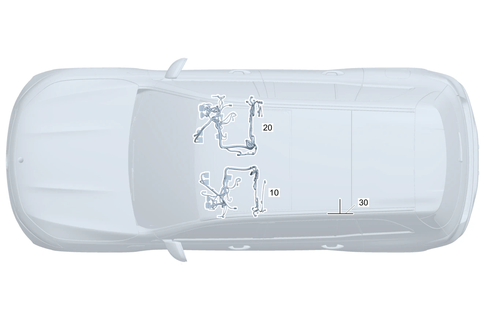

| № | Артикул | Название | Кол. | Примечание | Ограничение |
|---|---|---|---|---|---|
| 10 | A 177 540 42 03 | Электрический жгут (ELECTRICAL WIRING HARNESS) | 1 | Сиденье переднее (левое) | |
| 10 | A 177 540 43 03 | Электрический жгут (ELECTRICAL WIRING HARNESS) | 1 | Сиденье переднее (левое) Рулевое управление: Влево | 873 |
| 10 | A 177 540 44 03 | Электрический жгут (ELECTRICAL WIRING HARNESS) | 1 | Сиденье переднее (левое) Рулевое управление: Вправо | 873 |
| 10 | Q 000000000002 | Возможен заказ только отдельных компонентов жгута проводов | 1 | Сиденье переднее (левое) Рулевое управление: Влево | 401 |
| 10 | Q 000000000002 | Возможен заказ только отдельных компонентов жгута проводов | 1 | Сиденье переднее (левое) Рулевое управление: Вправо | 401 |
| 10 | A 177 540 54 23 | Электрический жгут (ELECTRICAL WIRING HARNESS) | 1 | Сиденье переднее (левое) | U22 |
| 10 | A 177 540 49 03 | Электрический жгут (ELECTRICAL WIRING HARNESS) | 1 | Сиденье переднее (левое) Рулевое управление: Влево | 873+U22 |
| 10 | A 177 540 59 23 | Электрический жгут (ELECTRICAL WIRING HARNESS) | 1 | Сиденье переднее (левое) Рулевое управление: Вправо | 873+U22 |
| 10 | A 177 540 52 03 | Электрический жгут (ELECTRICAL WIRING HARNESS) | 1 | Сиденье переднее (левое) Рулевое управление: Влево | 401+U22 |
| 10 | Q 000000000002 | Возможен заказ только отдельных компонентов жгута проводов | 1 | Сиденье переднее (левое) Рулевое управление: Вправо | 401+U22 |
| 10 | Q 000000000002 | Возможен заказ только отдельных компонентов жгута проводов | 1 | Сиденье переднее (левое) | 409 |
| 10 | Q 000000000002 | Возможен заказ только отдельных компонентов жгута проводов | 1 | Сиденье переднее (левое) Рулевое управление: Влево | 873+409 |
| 10 | Q 000000000002 | Возможен заказ только отдельных компонентов жгута проводов | 1 | Сиденье переднее (левое) Рулевое управление: Вправо | 873+409 |
| 10 | Q 000000000002 | Возможен заказ только отдельных компонентов жгута проводов | 1 | Сиденье переднее (левое) Рулевое управление: Влево | 401+409 |
| 10 | Q 000000000002 | Возможен заказ только отдельных компонентов жгута проводов | 1 | Сиденье переднее (левое) Рулевое управление: Вправо | 401+409 |
| 10 | A 177 540 50 23 | Электрический жгут (ELECTRICAL WIRING HARNESS) | 1 | Сиденье переднее (левое) | U62+877 |
| 10 | A 177 540 85 03 | Электрический жгут (ELECTRICAL WIRING HARNESS) | 1 | Сиденье переднее (левое) Рулевое управление: Влево | U62+877+873 |
| 10 | A 177 540 67 23 | Электрический жгут (ELECTRICAL WIRING HARNESS) | 1 | Сиденье переднее (левое) Рулевое управление: Вправо | 873+U62+877 |
| 10 | Q 000000000002 | Возможен заказ только отдельных компонентов жгута проводов | 1 | Сиденье переднее (левое) Рулевое управление: Влево | 401+U62+877 |
| 10 | Q 000000000002 | Возможен заказ только отдельных компонентов жгута проводов | 1 | Сиденье переднее (левое) Рулевое управление: Вправо | 401+U62+877 |
| 10 | A 177 540 51 23 | Электрический жгут (ELECTRICAL WIRING HARNESS) | 1 | Сиденье переднее (левое) | U22+U62+877 |
| 10 | A 177 540 91 03 | Электрический жгут (ELECTRICAL WIRING HARNESS) | 1 | Сиденье переднее (левое) Рулевое управление: Влево | U22+U62+873+877 |
| 10 | A 177 540 61 23 | Электрический жгут (ELECTRICAL WIRING HARNESS) | 1 | Сиденье переднее (левое) Рулевое управление: Вправо | 873+U22+U62+877 |
| 10 | Q 000000000002 | Возможен заказ только отдельных компонентов жгута проводов | 1 | Сиденье переднее (левое) Рулевое управление: Влево | 401+U22+U62+877 |
| 10 | Q 000000000002 | Возможен заказ только отдельных компонентов жгута проводов | 1 | Сиденье переднее (левое) Рулевое управление: Вправо | 401+U22+U62+877 |
| 10 | Q 000000000002 | Возможен заказ только отдельных компонентов жгута проводов | 1 | Сиденье переднее (левое) | 409+U62+877 |
| 10 | Q 000000000002 | Возможен заказ только отдельных компонентов жгута проводов | 1 | Сиденье переднее (левое) Рулевое управление: Влево | 873+409+U62+877 |
| 10 | Q 000000000002 | Возможен заказ только отдельных компонентов жгута проводов | 1 | Сиденье переднее (левое) Рулевое управление: Вправо | 873+409+U62+877 |
| 10 | Q 000000000002 | Возможен заказ только отдельных компонентов жгута проводов | 1 | Сиденье переднее (левое) Рулевое управление: Влево | 401+409+U62+877 |
| 10 | Q 000000000002 | Возможен заказ только отдельных компонентов жгута проводов | 1 | Сиденье переднее (левое) Рулевое управление: Вправо | 401+409+U62+877 |
| 10 | A 177 540 48 03 | Электрический жгут (ELECTRICAL WIRING HARNESS) | 1 | Left front seat, memory function Рулевое управление: Влево | 275+U22 |
| 10 | A 177 540 48 03 | Электрический жгут (ELECTRICAL WIRING HARNESS) | 1 | Left front seat, memory function Рулевое управление: Влево | (275/221)+U22 |
| 10 | A 177 540 48 03 | Электрический жгут (ELECTRICAL WIRING HARNESS) | 1 | Сиденье (переднее левое) с полным электроприводом регулировки положения (с функцией памяти) Рулевое управление: Вправо | 241+U22 |
| 10 | A 177 540 51 03 | Электрический жгут (ELECTRICAL WIRING HARNESS) | 1 | Left front seat, memory function Рулевое управление: Влево | 275+873+U22 |
| 10 | A 177 540 51 03 | Электрический жгут (ELECTRICAL WIRING HARNESS) | 1 | Left front seat, memory function Рулевое управление: Влево | (275/221)+873+U22 |
| 10 | A 177 540 51 03 | Электрический жгут (ELECTRICAL WIRING HARNESS) | 1 | Сиденье (переднее левое) с полным электроприводом регулировки положения (с функцией памяти) Рулевое управление: Вправо | 241+873+U22 |
| 10 | A 177 540 54 03 | Электрический жгут (ELECTRICAL WIRING HARNESS) | 1 | Сиденье (переднее левое) с полным электроприводом регулировки положения (с функцией памяти) Рулевое управление: Вправо | 241+401+U22 |
| 10 | A 177 540 54 03 | Электрический жгут (ELECTRICAL WIRING HARNESS) | 1 | Left front seat, memory function Рулевое управление: Влево | 275+401+U22 |
| 10 | A 177 540 54 03 | Электрический жгут (ELECTRICAL WIRING HARNESS) | 1 | Left front seat, memory function Рулевое управление: Влево | (275/221)+401+U22 |
| 10 | Q 000000000002 | Возможен заказ только отдельных компонентов жгута проводов | 1 | Left front seat, memory function Рулевое управление: Влево | 275+409 |
| 10 | Q 000000000002 | Возможен заказ только отдельных компонентов жгута проводов | 1 | Left front seat, memory function Рулевое управление: Влево | (275/221)+409 |
| 10 | Q 000000000002 | Возможен заказ только отдельных компонентов жгута проводов | 1 | Сиденье (переднее левое) с полным электроприводом регулировки положения (с функцией памяти) Рулевое управление: Вправо | 241+409 |
| 10 | A 177 540 59 03 | Электрический жгут | 1 | Left front seat, memory function Рулевое управление: Влево | 275+873+409 |
| 10 | A 177 540 59 03 | Электрический жгут | 1 | Left front seat, memory function Рулевое управление: Влево | (275/221)+873+409 |
| 10 | A 177 540 59 03 | Электрический жгут | 1 | Сиденье (переднее левое) с полным электроприводом регулировки положения (с функцией памяти) Рулевое управление: Вправо | 241+873+409 |
| 10 | A 177 540 62 03 | Электрический жгут (ELECTRICAL WIRING HARNESS) | 1 | Left front seat, memory function Рулевое управление: Влево | 275+401+409 |
| 10 | A 177 540 62 03 | Электрический жгут (ELECTRICAL WIRING HARNESS) | 1 | Left front seat, memory function Рулевое управление: Влево | (275/221)+401+409 |
| 10 | A 177 540 62 03 | Электрический жгут (ELECTRICAL WIRING HARNESS) | 1 | Сиденье (переднее левое) с полным электроприводом регулировки положения (с функцией памяти) Рулевое управление: Вправо | 241+401+409 |
| 10 | A 177 540 90 03 | Электрический жгут (ELECTRICAL WIRING HARNESS) | 1 | Left front seat, memory function Рулевое управление: Влево | 275+U22+U62+877 |
| 10 | A 177 540 90 03 | Электрический жгут (ELECTRICAL WIRING HARNESS) | 1 | Left front seat, memory function Рулевое управление: Влево | (275/221)+U22+U62+877 |
| 10 | A 177 540 90 03 | Электрический жгут (ELECTRICAL WIRING HARNESS) | 1 | Сиденье (переднее левое) с полным электроприводом регулировки положения (с функцией памяти) Рулевое управление: Вправо | 241+U22+U62+877 |
| 10 | A 177 540 93 03 | Электрический жгут (ELECTRICAL WIRING HARNESS) | 1 | Left front seat, memory function Рулевое управление: Влево | 275+873+U22+U62+877 |
| 10 | A 177 540 93 03 | Электрический жгут (ELECTRICAL WIRING HARNESS) | 1 | Left front seat, memory function Рулевое управление: Влево | (275/221)+873+U22+U62+877 |
| 10 | A 177 540 93 03 | Электрический жгут (ELECTRICAL WIRING HARNESS) | 1 | Сиденье (переднее левое) с полным электроприводом регулировки положения (с функцией памяти) Рулевое управление: Вправо | 241+873+U22+U62+877 |
| 10 | A 177 540 96 03 | Электрический жгут (ELECTRICAL WIRING HARNESS) | 1 | Left front seat, memory function Рулевое управление: Влево | 275+401+U22+U62+877 |
| 10 | A 177 540 96 03 | Электрический жгут (ELECTRICAL WIRING HARNESS) | 1 | Left front seat, memory function Рулевое управление: Влево | (275/221)+401+U22+U62+877 |
| 10 | A 177 540 96 03 | Электрический жгут (ELECTRICAL WIRING HARNESS) | 1 | Сиденье (переднее левое) с полным электроприводом регулировки положения (с функцией памяти) Рулевое управление: Вправо | 241+401+U22+U62+877 |
| 10 | Q 000000000002 | Возможен заказ только отдельных компонентов жгута проводов | 1 | Left front seat, memory function Рулевое управление: Влево | 275+409+U62+877 |
| 10 | Q 000000000002 | Возможен заказ только отдельных компонентов жгута проводов | 1 | Left front seat, memory function Рулевое управление: Влево | (275/221)+409+U62+877 |
| 10 | Q 000000000002 | Возможен заказ только отдельных компонентов жгута проводов | 1 | Сиденье (переднее левое) с полным электроприводом регулировки положения (с функцией памяти) Рулевое управление: Вправо | 241+409+U62+877 |
| 10 | Q 000000000002 | Возможен заказ только отдельных компонентов жгута проводов | 1 | Left front seat, memory function Рулевое управление: Влево | 275+873+409+U62+877 |
| 10 | Q 000000000002 | Возможен заказ только отдельных компонентов жгута проводов | 1 | Left front seat, memory function Рулевое управление: Влево | (275/221)+873+409+U62+877 |
| 10 | Q 000000000002 | Возможен заказ только отдельных компонентов жгута проводов | 1 | Сиденье (переднее левое) с полным электроприводом регулировки положения (с функцией памяти) Рулевое управление: Вправо | 241+873+409+U62+877 |
| 10 | Q 000000000002 | Возможен заказ только отдельных компонентов жгута проводов | 1 | Left front seat, memory function Рулевое управление: Влево | 275+401+409+U62+877 |
| 10 | Q 000000000002 | Возможен заказ только отдельных компонентов жгута проводов | 1 | Left front seat, memory function Рулевое управление: Влево | (275/221)+401+409+U62+877 |
| 10 | Q 000000000002 | Возможен заказ только отдельных компонентов жгута проводов | 1 | Сиденье (переднее левое) с полным электроприводом регулировки положения (с функцией памяти) Рулевое управление: Вправо | 241+401+409+U62+877 |
| 10 | A 177 540 42 03 | Электрический жгут (ELECTRICAL WIRING HARNESS) | 1 | Сиденье переднее (левое) | 801+051 |
| 10 | A 177 540 42 03 | Электрический жгут (ELECTRICAL WIRING HARNESS) | 1 | Сиденье переднее (левое) | |
| 10 | A 177 540 43 03 | Электрический жгут (ELECTRICAL WIRING HARNESS) | 1 | Сиденье переднее (левое) Рулевое управление: Влево | 801+051+873 |
| 10 | A 177 540 43 03 | Электрический жгут (ELECTRICAL WIRING HARNESS) | 1 | Сиденье переднее (левое) Рулевое управление: Влево | 873 |
| 10 | A 177 540 44 03 | Электрический жгут (ELECTRICAL WIRING HARNESS) | 1 | Сиденье переднее (левое) Рулевое управление: Вправо | 801+051+873 |
| 10 | A 177 540 44 03 | Электрический жгут (ELECTRICAL WIRING HARNESS) | 1 | Сиденье переднее (левое) Рулевое управление: Вправо | 873 |
| 10 | Q 000000000002 | Возможен заказ только отдельных компонентов жгута проводов | 1 | Сиденье переднее (левое) Рулевое управление: Влево | 801+051+401 |
| 10 | Q 000000000002 | Возможен заказ только отдельных компонентов жгута проводов | 1 | Сиденье переднее (левое) Рулевое управление: Влево | 401 |
| 10 | Q 000000000002 | Возможен заказ только отдельных компонентов жгута проводов | 1 | Сиденье переднее (левое) Рулевое управление: Вправо | 801+051+401 |
| 10 | Q 000000000002 | Возможен заказ только отдельных компонентов жгута проводов | 1 | Сиденье переднее (левое) Рулевое управление: Вправо | 401 |
| 10 | A 177 540 54 23 | Электрический жгут (ELECTRICAL WIRING HARNESS) | 1 | Сиденье переднее (левое) | 801+051+U22 |
| 10 | A 177 540 54 23 | Электрический жгут (ELECTRICAL WIRING HARNESS) | 1 | Сиденье переднее (левое) | U22 |
| 10 | A 177 540 49 03 | Электрический жгут (ELECTRICAL WIRING HARNESS) | 1 | Сиденье переднее (левое) Рулевое управление: Влево | 801+051+873+U22 |
| 10 | A 177 540 49 03 | Электрический жгут (ELECTRICAL WIRING HARNESS) | 1 | Сиденье переднее (левое) Рулевое управление: Влево | 873+U22 |
| 10 | A 177 540 59 23 | Электрический жгут (ELECTRICAL WIRING HARNESS) | 1 | Сиденье переднее (левое) Рулевое управление: Вправо | 801+051+873+U22 |
| 10 | A 177 540 59 23 | Электрический жгут (ELECTRICAL WIRING HARNESS) | 1 | Сиденье переднее (левое) Рулевое управление: Вправо | 873+U22 |
| 10 | A 177 540 52 03 | Электрический жгут (ELECTRICAL WIRING HARNESS) | 1 | Сиденье переднее (левое) Рулевое управление: Влево | 801+051+401+U22 |
| 10 | A 177 540 52 03 | Электрический жгут (ELECTRICAL WIRING HARNESS) | 1 | Сиденье переднее (левое) Рулевое управление: Влево | 401+U22 |
| 10 | Q 000000000002 | Возможен заказ только отдельных компонентов жгута проводов | 1 | Сиденье переднее (левое) Рулевое управление: Вправо | 801+051+401+U22 |
| 10 | Q 000000000002 | Возможен заказ только отдельных компонентов жгута проводов | 1 | Сиденье переднее (левое) Рулевое управление: Вправо | 401+U22 |
| 10 | Q 000000000002 | Возможен заказ только отдельных компонентов жгута проводов | 1 | Сиденье переднее (левое) | 801+051+409 |
| 10 | Q 000000000002 | Возможен заказ только отдельных компонентов жгута проводов | 1 | Сиденье переднее (левое) | 409 |
| 10 | Q 000000000002 | Возможен заказ только отдельных компонентов жгута проводов | 1 | Сиденье переднее (левое) Рулевое управление: Влево | 801+051+873+409 |
| 10 | Q 000000000002 | Возможен заказ только отдельных компонентов жгута проводов | 1 | Сиденье переднее (левое) Рулевое управление: Влево | 873+409 |
| 10 | Q 000000000002 | Возможен заказ только отдельных компонентов жгута проводов | 1 | Сиденье переднее (левое) Рулевое управление: Вправо | 801+051+873+409 |
| 10 | Q 000000000002 | Возможен заказ только отдельных компонентов жгута проводов | 1 | Сиденье переднее (левое) Рулевое управление: Вправо | 873+409 |
| 10 | Q 000000000002 | Возможен заказ только отдельных компонентов жгута проводов | 1 | Сиденье переднее (левое) Рулевое управление: Влево | 801+051+401+409 |
| 10 | Q 000000000002 | Возможен заказ только отдельных компонентов жгута проводов | 1 | Сиденье переднее (левое) Рулевое управление: Влево | 401+409 |
| 10 | Q 000000000002 | Возможен заказ только отдельных компонентов жгута проводов | 1 | Сиденье переднее (левое) Рулевое управление: Вправо | 801+051+401+409 |
| 10 | Q 000000000002 | Возможен заказ только отдельных компонентов жгута проводов | 1 | Сиденье переднее (левое) Рулевое управление: Вправо | 401+409 |
| 10 | A 177 540 48 03 | Электрический жгут (ELECTRICAL WIRING HARNESS) | 1 | Left front seat, memory function Рулевое управление: Влево | 801+051+(275/221)+U22 |
| 10 | A 177 540 48 03 | Электрический жгут (ELECTRICAL WIRING HARNESS) | 1 | Left front seat, memory function Рулевое управление: Влево | (275/221)+U22 |
| 10 | Q 000000000002 | Возможен заказ только отдельных компонентов жгута проводов | 1 | Left front seat, memory function Рулевое управление: Влево | 275 |
| 10 | A 177 540 48 03 | Электрический жгут (ELECTRICAL WIRING HARNESS) | 1 | Сиденье (переднее левое) с полным электроприводом регулировки положения (с функцией памяти) Рулевое управление: Вправо | 801+051+241+U22 |
| 10 | A 177 540 48 03 | Электрический жгут (ELECTRICAL WIRING HARNESS) | 1 | Сиденье (переднее левое) с полным электроприводом регулировки положения (с функцией памяти) Рулевое управление: Вправо | 241+U22 |
| 10 | Q 000000000002 | Возможен заказ только отдельных компонентов жгута проводов | 1 | Сиденье (переднее левое) с полным электроприводом регулировки положения (с функцией памяти) Рулевое управление: Вправо | 241 |
| 10 | A 177 540 51 03 | Электрический жгут (ELECTRICAL WIRING HARNESS) | 1 | Left front seat, memory function Рулевое управление: Влево | 801+051+(275/221)+873+U22 |
| 10 | A 177 540 51 03 | Электрический жгут (ELECTRICAL WIRING HARNESS) | 1 | Left front seat, memory function Рулевое управление: Влево | (275/221)+873+U22 |
| 10 | A 177 540 51 03 | Электрический жгут (ELECTRICAL WIRING HARNESS) | 1 | Сиденье (переднее левое) с полным электроприводом регулировки положения (с функцией памяти) Рулевое управление: Вправо | 801+051+241+873+U22 |
| 10 | A 177 540 51 03 | Электрический жгут (ELECTRICAL WIRING HARNESS) | 1 | Сиденье (переднее левое) с полным электроприводом регулировки положения (с функцией памяти) Рулевое управление: Вправо | 241+873+U22 |
| 10 | A 177 540 54 03 | Электрический жгут (ELECTRICAL WIRING HARNESS) | 1 | Сиденье (переднее левое) с полным электроприводом регулировки положения (с функцией памяти) Рулевое управление: Вправо | 801+051+241+401+U22 |
| 10 | A 177 540 54 03 | Электрический жгут (ELECTRICAL WIRING HARNESS) | 1 | Сиденье (переднее левое) с полным электроприводом регулировки положения (с функцией памяти) Рулевое управление: Вправо | 241+401+U22 |
| 10 | A 177 540 54 03 | Электрический жгут (ELECTRICAL WIRING HARNESS) | 1 | Left front seat, memory function Рулевое управление: Влево | 801+051+(275/221)+401+U22 |
| 10 | A 177 540 54 03 | Электрический жгут (ELECTRICAL WIRING HARNESS) | 1 | Left front seat, memory function Рулевое управление: Влево | (275/221)+401+U22 |
| 10 | Q 000000000002 | Возможен заказ только отдельных компонентов жгута проводов | 1 | Left front seat, memory function Рулевое управление: Влево | 801+051+(275/221)+409 |
| 10 | Q 000000000002 | Возможен заказ только отдельных компонентов жгута проводов | 1 | Left front seat, memory function Рулевое управление: Влево | (275/221)+409 |
| 10 | Q 000000000002 | Возможен заказ только отдельных компонентов жгута проводов | 1 | Сиденье (переднее левое) с полным электроприводом регулировки положения (с функцией памяти) Рулевое управление: Вправо | 801+051+241+409 |
| 10 | Q 000000000002 | Возможен заказ только отдельных компонентов жгута проводов | 1 | Сиденье (переднее левое) с полным электроприводом регулировки положения (с функцией памяти) Рулевое управление: Вправо | 241+409 |
| 10 | A 177 540 59 03 | Электрический жгут | 1 | Left front seat, memory function Рулевое управление: Влево | 801+051+(275/221)+873+409 |
| 10 | A 177 540 59 03 | Электрический жгут | 1 | Left front seat, memory function Рулевое управление: Влево | (275/221)+873+409 |
| 10 | A 177 540 59 03 | Электрический жгут | 1 | Сиденье (переднее левое) с полным электроприводом регулировки положения (с функцией памяти) Рулевое управление: Вправо | 801+051+241+873+409 |
| 10 | A 177 540 59 03 | Электрический жгут | 1 | Сиденье (переднее левое) с полным электроприводом регулировки положения (с функцией памяти) Рулевое управление: Вправо | 241+873+409 |
| 10 | A 177 540 62 03 | Электрический жгут (ELECTRICAL WIRING HARNESS) | 1 | Left front seat, memory function Рулевое управление: Влево | 801+051+(275/221)+401+409 |
| 10 | A 177 540 62 03 | Электрический жгут (ELECTRICAL WIRING HARNESS) | 1 | Left front seat, memory function Рулевое управление: Влево | (275/221)+401+409 |
| 10 | A 177 540 62 03 | Электрический жгут (ELECTRICAL WIRING HARNESS) | 1 | Сиденье (переднее левое) с полным электроприводом регулировки положения (с функцией памяти) Рулевое управление: Вправо | 801+051+241+401+409 |
| 10 | A 177 540 62 03 | Электрический жгут (ELECTRICAL WIRING HARNESS) | 1 | Сиденье (переднее левое) с полным электроприводом регулировки положения (с функцией памяти) Рулевое управление: Вправо | 241+401+409 |
| 10 | A 177 540 42 03 | Электрический жгут (ELECTRICAL WIRING HARNESS) | 1 | Сиденье переднее (левое) Рулевое управление: Влево | 801+051+700 |
| 10 | A 177 540 42 03 | Электрический жгут (ELECTRICAL WIRING HARNESS) | 1 | Сиденье переднее (левое) Рулевое управление: Влево | (801+051/802)+700 |
| 10 | A 177 540 42 03 | Электрический жгут (ELECTRICAL WIRING HARNESS) | 1 | Сиденье переднее (левое) Рулевое управление: Влево | 700 |
| 10 | A 177 540 43 03 | Электрический жгут (ELECTRICAL WIRING HARNESS) | 1 | Сиденье переднее (левое) Рулевое управление: Влево | 801+051+873+700 |
| 10 | A 177 540 43 03 | Электрический жгут (ELECTRICAL WIRING HARNESS) | 1 | Сиденье переднее (левое) Рулевое управление: Влево | (801+051/802)+873+700 |
| 10 | A 177 540 43 03 | Электрический жгут (ELECTRICAL WIRING HARNESS) | 1 | Сиденье переднее (левое) Рулевое управление: Влево | 873+700 |
| 10 | Q 000000000002 | Возможен заказ только отдельных компонентов жгута проводов | 1 | Сиденье переднее (левое) Рулевое управление: Влево | (801+051/802)+401+700 |
| 10 | Q 000000000002 | Возможен заказ только отдельных компонентов жгута проводов | 1 | Сиденье переднее (левое) Рулевое управление: Влево | 401+700 |
| 10 | A 177 540 54 23 | Электрический жгут (ELECTRICAL WIRING HARNESS) | 1 | Сиденье переднее (левое) Рулевое управление: Влево | 801+051+U22+700 |
| 10 | A 177 540 54 23 | Электрический жгут (ELECTRICAL WIRING HARNESS) | 1 | Сиденье переднее (левое) Рулевое управление: Влево | (801+051/802)+U22+700 |
| 10 | A 177 540 54 23 | Электрический жгут (ELECTRICAL WIRING HARNESS) | 1 | Сиденье переднее (левое) Рулевое управление: Влево | U22+700 |
| 10 | A 177 540 49 03 | Электрический жгут (ELECTRICAL WIRING HARNESS) | 1 | Сиденье переднее (левое) Рулевое управление: Влево | 801+051+873+U22+700 |
| 10 | A 177 540 49 03 | Электрический жгут (ELECTRICAL WIRING HARNESS) | 1 | Сиденье переднее (левое) Рулевое управление: Влево | (801+051/802)+873+U22+700 |
| 10 | A 177 540 49 03 | Электрический жгут (ELECTRICAL WIRING HARNESS) | 1 | Сиденье переднее (левое) Рулевое управление: Влево | 873+U22+700 |
| 10 | A 177 540 52 03 | Электрический жгут (ELECTRICAL WIRING HARNESS) | 1 | Сиденье переднее (левое) Рулевое управление: Влево | (801+051/802)+401+U22+700 |
| 10 | A 177 540 52 03 | Электрический жгут (ELECTRICAL WIRING HARNESS) | 1 | Сиденье переднее (левое) Рулевое управление: Влево | 401+U22+700 |
| 10 | Q 000000000002 | Возможен заказ только отдельных компонентов жгута проводов | 1 | Сиденье переднее (левое) Рулевое управление: Влево | (801+051/802)+409+700 |
| 10 | Q 000000000002 | Возможен заказ только отдельных компонентов жгута проводов | 1 | Сиденье переднее (левое) Рулевое управление: Влево | 409+700 |
| 10 | Q 000000000002 | Возможен заказ только отдельных компонентов жгута проводов | 1 | Сиденье переднее (левое) Рулевое управление: Влево | (801+051/802)+873+409+700 |
| 10 | Q 000000000002 | Возможен заказ только отдельных компонентов жгута проводов | 1 | Сиденье переднее (левое) Рулевое управление: Влево | 873+409+700 |
| 10 | Q 000000000002 | Возможен заказ только отдельных компонентов жгута проводов | 1 | Сиденье переднее (левое) Рулевое управление: Влево | (801+051/802)+401+409+700 |
| 10 | Q 000000000002 | Возможен заказ только отдельных компонентов жгута проводов | 1 | Сиденье переднее (левое) Рулевое управление: Влево | 401+409+700 |
| 10 | A 177 540 50 23 | Электрический жгут (ELECTRICAL WIRING HARNESS) | 1 | Сиденье переднее (левое) Рулевое управление: Влево | 801+051+U62+877+700 |
| 10 | A 177 540 50 23 | Электрический жгут (ELECTRICAL WIRING HARNESS) | 1 | Сиденье переднее (левое) Рулевое управление: Влево | (801+051/802)+U62+877+700 |
| 10 | A 177 540 50 23 | Электрический жгут (ELECTRICAL WIRING HARNESS) | 1 | Сиденье переднее (левое) Рулевое управление: Влево | U62+877+700 |
| 10 | A 177 540 85 03 | Электрический жгут (ELECTRICAL WIRING HARNESS) | 1 | Сиденье переднее (левое) Рулевое управление: Влево | 801+051+U62+877+873+700 |
| 10 | A 177 540 85 03 | Электрический жгут (ELECTRICAL WIRING HARNESS) | 1 | Сиденье переднее (левое) Рулевое управление: Влево | 801+051+U62+877+873+700 |
| 10 | A 177 540 85 03 | Электрический жгут (ELECTRICAL WIRING HARNESS) | 1 | Сиденье переднее (левое) Рулевое управление: Влево | (801+051/802)+U62+877+873+700 |
| 10 | A 177 540 85 03 | Электрический жгут (ELECTRICAL WIRING HARNESS) | 1 | Сиденье переднее (левое) Рулевое управление: Влево | U62+877+873+700 |
| 10 | Q 000000000002 | Возможен заказ только отдельных компонентов жгута проводов | 1 | Сиденье переднее (левое) Рулевое управление: Влево | (801+051/802)+401+U62+877+700 |
| 10 | Q 000000000002 | Возможен заказ только отдельных компонентов жгута проводов | 1 | Сиденье переднее (левое) Рулевое управление: Влево | 401+U62+877+700 |
| 10 | A 177 540 51 23 | Электрический жгут (ELECTRICAL WIRING HARNESS) | 1 | Сиденье переднее (левое) Рулевое управление: Влево | 801+051+U22+U62+877+700 |
| 10 | A 177 540 51 23 | Электрический жгут (ELECTRICAL WIRING HARNESS) | 1 | Сиденье переднее (левое) Рулевое управление: Влево | (801+051/802)+U22+U62+877+700 |
| 10 | A 177 540 51 23 | Электрический жгут (ELECTRICAL WIRING HARNESS) | 1 | Сиденье переднее (левое) Рулевое управление: Влево | U22+U62+877+700 |
| 10 | A 177 540 91 03 | Электрический жгут (ELECTRICAL WIRING HARNESS) | 1 | Сиденье переднее (левое) Рулевое управление: Влево | 801+051+U22+U62+873+877+700 |
| 10 | A 177 540 91 03 | Электрический жгут (ELECTRICAL WIRING HARNESS) | 1 | Сиденье переднее (левое) Рулевое управление: Влево | (801+051/802)+U22+U62+873+877+700 |
| 10 | A 177 540 91 03 | Электрический жгут (ELECTRICAL WIRING HARNESS) | 1 | Сиденье переднее (левое) Рулевое управление: Влево | U22+U62+873+877+700 |
| 10 | Q 000000000002 | Возможен заказ только отдельных компонентов жгута проводов | 1 | Сиденье переднее (левое) Рулевое управление: Влево | (801+051/802)+401+U22+U62+877+700 |
| 10 | Q 000000000002 | Возможен заказ только отдельных компонентов жгута проводов | 1 | Сиденье переднее (левое) Рулевое управление: Влево | 401+U22+U62+877+700 |
| 10 | Q 000000000002 | Возможен заказ только отдельных компонентов жгута проводов | 1 | Сиденье переднее (левое) Рулевое управление: Влево | (801+051/802)+409+U62+877+700 |
| 10 | Q 000000000002 | Возможен заказ только отдельных компонентов жгута проводов | 1 | Сиденье переднее (левое) Рулевое управление: Влево | 409+U62+877+700 |
| 10 | Q 000000000002 | Возможен заказ только отдельных компонентов жгута проводов | 1 | Сиденье переднее (левое) Рулевое управление: Влево | (801+051/802)+873+409+U62+877+700 |
| 10 | Q 000000000002 | Возможен заказ только отдельных компонентов жгута проводов | 1 | Сиденье переднее (левое) Рулевое управление: Влево | 873+409+U62+877+700 |
| 10 | Q 000000000002 | Возможен заказ только отдельных компонентов жгута проводов | 1 | Сиденье переднее (левое) Рулевое управление: Влево | (801+051/802)+401+409+U62+877+700 |
| 10 | Q 000000000002 | Возможен заказ только отдельных компонентов жгута проводов | 1 | Сиденье переднее (левое) Рулевое управление: Влево | 401+409+U62+877+700 |
| 10 | A 177 540 48 03 | Электрический жгут (ELECTRICAL WIRING HARNESS) | 1 | Left front seat, memory function Рулевое управление: Влево | 801+051+(275/221)+U22+700 |
| 10 | A 177 540 48 03 | Электрический жгут (ELECTRICAL WIRING HARNESS) | 1 | Left front seat, memory function Рулевое управление: Влево | (801+051/802)+(275/221)+U22+700 |
| 10 | A 177 540 48 03 | Электрический жгут (ELECTRICAL WIRING HARNESS) | 1 | Left front seat, memory function Рулевое управление: Влево | (275/221)+U22+700 |
| 10 | A 177 540 51 03 | Электрический жгут (ELECTRICAL WIRING HARNESS) | 1 | Left front seat, memory function Рулевое управление: Влево | 801+051+(275/221)+873+U22+700 |
| 10 | A 177 540 51 03 | Электрический жгут (ELECTRICAL WIRING HARNESS) | 1 | Left front seat, memory function Рулевое управление: Влево | (801+051/802)+(275/221)+873+U22+700 |
| 10 | A 177 540 51 03 | Электрический жгут (ELECTRICAL WIRING HARNESS) | 1 | Left front seat, memory function Рулевое управление: Влево | (275/221)+873+U22+700 |
| 10 | A 177 540 54 03 | Электрический жгут (ELECTRICAL WIRING HARNESS) | 1 | Left front seat, memory function Рулевое управление: Влево | (801+051/802)+(275/221)+401+U22+700 |
| 10 | A 177 540 54 03 | Электрический жгут (ELECTRICAL WIRING HARNESS) | 1 | Left front seat, memory function Рулевое управление: Влево | (275/221)+401+U22+700 |
| 10 | Q 000000000002 | Возможен заказ только отдельных компонентов жгута проводов | 1 | Left front seat, memory function Рулевое управление: Влево | (801+051/802)+(275/221)+409+700 |
| 10 | Q 000000000002 | Возможен заказ только отдельных компонентов жгута проводов | 1 | Left front seat, memory function Рулевое управление: Влево | (275/221)+409+700 |
| 10 | A 177 540 59 03 | Электрический жгут | 1 | Left front seat, memory function Рулевое управление: Влево | (801+051/802)+(275/221)+873+409+700 |
| 10 | A 177 540 59 03 | Электрический жгут | 1 | Left front seat, memory function Рулевое управление: Влево | (275/221)+873+409+700 |
| 10 | A 177 540 62 03 | Электрический жгут (ELECTRICAL WIRING HARNESS) | 1 | Left front seat, memory function Рулевое управление: Влево | (801+051/802)+(275/221)+401+409+700 |
| 10 | A 177 540 62 03 | Электрический жгут (ELECTRICAL WIRING HARNESS) | 1 | Left front seat, memory function Рулевое управление: Влево | (275/221)+401+409+700 |
| 10 | A 177 540 90 03 | Электрический жгут (ELECTRICAL WIRING HARNESS) | 1 | Left front seat, memory function Рулевое управление: Влево | 801+051+(275/221)+U22+U62+877+700 |
| 10 | A 177 540 90 03 | Электрический жгут (ELECTRICAL WIRING HARNESS) | 1 | Left front seat, memory function Рулевое управление: Влево | (801+051/802)+(275/221)+U22+U62+877+700 |
| 10 | A 177 540 90 03 | Электрический жгут (ELECTRICAL WIRING HARNESS) | 1 | Left front seat, memory function Рулевое управление: Влево | (275/221)+U22+U62+877+700 |
| 10 | A 177 540 93 03 | Электрический жгут (ELECTRICAL WIRING HARNESS) | 1 | Left front seat, memory function Рулевое управление: Влево | 801+051+(275/221)+873+U22+U62+877+700 |
| 10 | A 177 540 93 03 | Электрический жгут (ELECTRICAL WIRING HARNESS) | 1 | Left front seat, memory function Рулевое управление: Влево | (801+051/802)+(275/221)+873+U22+U62+877+700 |
| 10 | A 177 540 93 03 | Электрический жгут (ELECTRICAL WIRING HARNESS) | 1 | Left front seat, memory function Рулевое управление: Влево | (275/221)+873+U22+U62+877+700 |
| 10 | A 177 540 96 03 | Электрический жгут (ELECTRICAL WIRING HARNESS) | 1 | Left front seat, memory function Рулевое управление: Влево | (801+051/802)+(275/221)+401+U22+U62+877+700 |
| 10 | A 177 540 96 03 | Электрический жгут (ELECTRICAL WIRING HARNESS) | 1 | Left front seat, memory function Рулевое управление: Влево | (275/221)+401+U22+U62+877+700 |
| 10 | Q 000000000002 | Возможен заказ только отдельных компонентов жгута проводов | 1 | Left front seat, memory function Рулевое управление: Влево | (801+051/802)+(275/221)+409+U62+877+700 |
| 10 | Q 000000000002 | Возможен заказ только отдельных компонентов жгута проводов | 1 | Left front seat, memory function Рулевое управление: Влево | (275/221)+409+U62+877+700 |
| 10 | Q 000000000002 | Возможен заказ только отдельных компонентов жгута проводов | 1 | Left front seat, memory function Рулевое управление: Влево | (801+051/802)+(275/221)+873+409+U62+877+700 |
| 10 | Q 000000000002 | Возможен заказ только отдельных компонентов жгута проводов | 1 | Left front seat, memory function Рулевое управление: Влево | (275/221)+873+409+U62+877+700 |
| 10 | Q 000000000002 | Возможен заказ только отдельных компонентов жгута проводов | 1 | Left front seat, memory function Рулевое управление: Влево | (801+051/802)+(275/221)+401+409+U62+877+700 |
| 10 | Q 000000000002 | Возможен заказ только отдельных компонентов жгута проводов | 1 | Left front seat, memory function Рулевое управление: Влево | (275/221)+401+409+U62+877+700 |
| 10 | A 177 540 19 26 | Электрический жгут (ELECTRICAL WIRING HARNESS) | 1 | Сиденье переднее (левое) Рулевое управление: Влево | 700+(805+055/806) |
| 10 | A 177 540 19 26 | Электрический жгут (ELECTRICAL WIRING HARNESS) | 1 | Сиденье переднее (левое) Рулевое управление: Влево | 700 |
| 10 | A 177 540 20 26 | Электрический жгут (ELECTRICAL WIRING HARNESS) | 1 | Сиденье переднее (левое) Рулевое управление: Влево | 873+700+(805+055/806) |
| 10 | A 177 540 20 26 | Электрический жгут (ELECTRICAL WIRING HARNESS) | 1 | Сиденье переднее (левое) Рулевое управление: Влево | 873+700 |
| 10 | A 177 540 62 24 | Электрический жгут (ELECTRICAL WIRING HARNESS) | 1 | Сиденье переднее (левое) Рулевое управление: Влево | U22+700+(805+055/806) |
| 10 | A 177 540 62 24 | Электрический жгут (ELECTRICAL WIRING HARNESS) | 1 | Сиденье переднее (левое) Рулевое управление: Влево | U22+700 |
| 10 | A 177 540 83 26 | Электрический жгут (ELECTRICAL WIRING HARNESS) | 1 | Сиденье переднее (левое) Рулевое управление: Влево | 873+U22+700+(805+055/806) |
| 10 | A 177 540 83 26 | Электрический жгут (ELECTRICAL WIRING HARNESS) | 1 | Сиденье переднее (левое) Рулевое управление: Влево | 873+U22+700 |
| 10 | A 177 540 21 26 | Электрический жгут (ELECTRICAL WIRING HARNESS) | 1 | Сиденье переднее (левое) Рулевое управление: Влево | 877+700+(805+055/806) |
| 10 | A 177 540 21 26 | Электрический жгут (ELECTRICAL WIRING HARNESS) | 1 | Сиденье переднее (левое) Рулевое управление: Влево | 877+700 |
| 10 | A 177 540 81 26 | Электрический жгут (ELECTRICAL WIRING HARNESS) | 1 | Сиденье переднее (левое) Рулевое управление: Влево | 877+873+700+(805+055/806) |
| 10 | A 177 540 81 26 | Электрический жгут (ELECTRICAL WIRING HARNESS) | 1 | Сиденье переднее (левое) Рулевое управление: Влево | 877+873+700 |
| 10 | Q 000000000002 | Возможен заказ только отдельных компонентов жгута проводов | 1 | Сиденье переднее (левое) Рулевое управление: Влево | U22+877+700+(805+055/806) |
| 10 | Q 000000000002 | Возможен заказ только отдельных компонентов жгута проводов | 1 | Сиденье переднее (левое) Рулевое управление: Влево | U22+877+700 |
| 10 | A 177 540 84 26 | Электрический жгут (ELECTRICAL WIRING HARNESS) | 1 | Сиденье переднее (левое) Рулевое управление: Влево | U22+873+877+700+(805+055/806) |
| 10 | A 177 540 84 26 | Электрический жгут (ELECTRICAL WIRING HARNESS) | 1 | Сиденье переднее (левое) Рулевое управление: Влево | U22+873+877+700 |
| 10 | A 177 540 63 24 | Электрический жгут (ELECTRICAL WIRING HARNESS) | 1 | Left front seat, memory function Рулевое управление: Влево | (275/221)+U22+700+(805+055/806) |
| 10 | A 177 540 63 24 | Электрический жгут (ELECTRICAL WIRING HARNESS) | 1 | Left front seat, memory function Рулевое управление: Влево | (275/221)+U22+700 |
| 10 | A 177 540 65 24 | Электрический жгут (ELECTRICAL WIRING HARNESS) | 1 | Left front seat, memory function Рулевое управление: Влево | (275/221)+873+U22+700+(805+055/806) |
| 10 | A 177 540 65 24 | Электрический жгут (ELECTRICAL WIRING HARNESS) | 1 | Left front seat, memory function Рулевое управление: Влево | (275/221)+873+U22+700 |
| 10 | A 177 540 62 02 | Электрический жгут (ELECTRICAL WIRING HARNESS) | 1 | Left front seat, memory function Рулевое управление: Влево | (275/221)+U22+877+700+(805+055/806) |
| 10 | A 177 540 62 02 | Электрический жгут (ELECTRICAL WIRING HARNESS) | 1 | Left front seat, memory function Рулевое управление: Влево | (275/221)+U22+877+700 |
| 10 | A 177 540 64 02 | Электрический жгут (ELECTRICAL WIRING HARNESS) | 1 | Left front seat, memory function Рулевое управление: Влево | (275/221)+873+U22+877+700+(805+055/806) |
| 10 | A 177 540 64 02 | Электрический жгут (ELECTRICAL WIRING HARNESS) | 1 | Left front seat, memory function Рулевое управление: Влево | (275/221)+873+U22+877+700 |
| 10 | A 177 540 41 03 | Электрический жгут (ELECTRICAL WIRING HARNESS) | 1 | Сиденье переднее (левое): система определения веса Рулевое управление: Вправо | U10 |
| 10 | Q 000000000002 | Возможен заказ только отдельных компонентов жгута проводов | 1 | Сиденье переднее (левое) Рулевое управление: Влево | U22+U62+877+(494/460) |
| 10 | Q 000000000002 | Возможен заказ только отдельных компонентов жгута проводов | 1 | Сиденье переднее (левое) Рулевое управление: Влево | 409+U62+877+(494/460) |
| 10 | Q 000000000002 | Возможен заказ только отдельных компонентов жгута проводов | 1 | Сиденье переднее (левое) Рулевое управление: Влево | 401+U22+U62+877+(494/460) |
| 10 | A 177 540 62 02 | Электрический жгут (ELECTRICAL WIRING HARNESS) | 1 | Left front seat, memory function Рулевое управление: Влево | 275+U22+U62+877+(494/460) |
| 10 | A 177 540 62 02 | Электрический жгут (ELECTRICAL WIRING HARNESS) | 1 | Left front seat, memory function Рулевое управление: Влево | (275/221)+U22+U62+877+(494/460) |
| 10 | A 177 540 62 02 | Электрический жгут (ELECTRICAL WIRING HARNESS) | 1 | Left front seat, memory function Рулевое управление: Влево | (275/221)+U22+U62+877+(494/460) |
| 10 | A 177 540 64 02 | Электрический жгут (ELECTRICAL WIRING HARNESS) | 1 | Left front seat, memory function Рулевое управление: Влево | 275+U22+U62+873+877+(494/460) |
| 10 | A 177 540 64 02 | Электрический жгут (ELECTRICAL WIRING HARNESS) | 1 | Left front seat, memory function Рулевое управление: Влево | (275/221)+U22+U62+873+877+(494/460) |
| 10 | A 177 540 64 02 | Электрический жгут (ELECTRICAL WIRING HARNESS) | 1 | Left front seat, memory function Рулевое управление: Влево | (275/221)+U22+U62+873+877+(494/460) |
| 10 | A 177 540 66 02 | Электрический жгут (ELECTRICAL WIRING HARNESS) | 1 | Left front seat, memory function Рулевое управление: Влево | 275+401+U22+U62+877+(494/460) |
| 10 | A 177 540 66 02 | Электрический жгут (ELECTRICAL WIRING HARNESS) | 1 | Left front seat, memory function Рулевое управление: Влево | (275/221)+401+U22+U62+877+(494/460) |
| 10 | A 177 540 66 02 | Электрический жгут (ELECTRICAL WIRING HARNESS) | 1 | Left front seat, memory function Рулевое управление: Влево | (275/221)+401+U22+U62+877+(494/460) |
| 10 | Q 000000000002 | Возможен заказ только отдельных компонентов жгута проводов | 1 | Left front seat, memory function Рулевое управление: Влево | 275+409+U62+877+(494/460) |
| 10 | Q 000000000002 | Возможен заказ только отдельных компонентов жгута проводов | 1 | Left front seat, memory function Рулевое управление: Влево | (275/221)+409+U62+877+(494/460) |
| 10 | Q 000000000002 | Возможен заказ только отдельных компонентов жгута проводов | 1 | Left front seat, memory function Рулевое управление: Влево | (275/221)+409+U62+877+(494/460) |
| 10 | Q 000000000002 | Возможен заказ только отдельных компонентов жгута проводов | 1 | Left front seat, memory function Рулевое управление: Влево | 275+409+U62+873+877+(494/460) |
| 10 | Q 000000000002 | Возможен заказ только отдельных компонентов жгута проводов | 1 | Left front seat, memory function Рулевое управление: Влево | (275/221)+409+U62+873+877+(494/460) |
| 10 | Q 000000000002 | Возможен заказ только отдельных компонентов жгута проводов | 1 | Left front seat, memory function Рулевое управление: Влево | (275/221)+409+U62+873+877+(494/460) |
| 10 | Q 000000000002 | Возможен заказ только отдельных компонентов жгута проводов | 1 | Left front seat, memory function Рулевое управление: Влево | 275+401+409+U62+877+(494/460) |
| 10 | Q 000000000002 | Возможен заказ только отдельных компонентов жгута проводов | 1 | Left front seat, memory function Рулевое управление: Влево | (275/221)+401+409+U62+877+(494/460) |
| 10 | Q 000000000002 | Возможен заказ только отдельных компонентов жгута проводов | 1 | Left front seat, memory function Рулевое управление: Влево | (275/221)+401+409+U62+877+(494/460) |
| 10 | A 177 540 62 24 | Электрический жгут (ELECTRICAL WIRING HARNESS) | 1 | Сиденье переднее (левое) | U22+(494/460) |
| 10 | A 177 540 62 24 | Электрический жгут (ELECTRICAL WIRING HARNESS) | 1 | Сиденье переднее (левое) Рулевое управление: Влево | U22+(494/460) |
| 10 | A 177 540 63 24 | Электрический жгут (ELECTRICAL WIRING HARNESS) | 1 | Left front seat, memory function Рулевое управление: Влево | 275+U22+(494/460) |
| 10 | A 177 540 63 24 | Электрический жгут (ELECTRICAL WIRING HARNESS) | 1 | Left front seat, memory function Рулевое управление: Влево | (275/221)+U22+(494/460) |
| 10 | A 177 540 63 24 | Электрический жгут (ELECTRICAL WIRING HARNESS) | 1 | Left front seat, memory function Рулевое управление: Влево | (275/221)+U22+(494/460) |
| 10 | A 177 540 64 24 | Электрический жгут (ELECTRICAL WIRING HARNESS) | 1 | Сиденье переднее (левое) Рулевое управление: Вправо | 873+U22+(494/460) |
| 10 | A 177 540 65 24 | Электрический жгут (ELECTRICAL WIRING HARNESS) | 1 | Left front seat, memory function Рулевое управление: Влево | 275+873+U22+(494/460) |
| 10 | A 177 540 65 24 | Электрический жгут (ELECTRICAL WIRING HARNESS) | 1 | Left front seat, memory function Рулевое управление: Влево | (275/221)+873+U22+(494/460) |
| 10 | A 177 540 65 24 | Электрический жгут (ELECTRICAL WIRING HARNESS) | 1 | Left front seat, memory function Рулевое управление: Влево | (275/221)+873+U22+(494/460) |
| 10 | A 177 540 67 24 | Электрический жгут (ELECTRICAL WIRING HARNESS) | 1 | Left front seat, memory function Рулевое управление: Влево | 275+401+U22+(494/460) |
| 10 | A 177 540 67 24 | Электрический жгут (ELECTRICAL WIRING HARNESS) | 1 | Left front seat, memory function Рулевое управление: Влево | (275/221)+401+U22+(494/460) |
| 10 | A 177 540 67 24 | Электрический жгут (ELECTRICAL WIRING HARNESS) | 1 | Left front seat, memory function Рулевое управление: Влево | (275/221)+401+U22+(494/460) |
| 10 | Q 000000000002 | Возможен заказ только отдельных компонентов жгута проводов | 1 | Сиденье переднее (левое) | 409+(494/460) |
| 10 | Q 000000000002 | Возможен заказ только отдельных компонентов жгута проводов | 1 | Сиденье переднее (левое) Рулевое управление: Влево | 409+(494/460) |
| 10 | Q 000000000002 | Возможен заказ только отдельных компонентов жгута проводов | 1 | Left front seat, memory function Рулевое управление: Влево | 275+409+(494/460) |
| 10 | Q 000000000002 | Возможен заказ только отдельных компонентов жгута проводов | 1 | Left front seat, memory function Рулевое управление: Влево | (275/221)+409+(494/460) |
| 10 | Q 000000000002 | Возможен заказ только отдельных компонентов жгута проводов | 1 | Left front seat, memory function Рулевое управление: Влево | (275/221)+409+(494/460) |
| 10 | Q 000000000002 | Возможен заказ только отдельных компонентов жгута проводов | 1 | Сиденье переднее (левое) Рулевое управление: Вправо | 873+409+(494/460) |
| 10 | Q 000000000002 | Возможен заказ только отдельных компонентов жгута проводов | 1 | Left front seat, memory function Рулевое управление: Влево | 275+873+409+(494/460) |
| 10 | Q 000000000002 | Возможен заказ только отдельных компонентов жгута проводов | 1 | Left front seat, memory function Рулевое управление: Влево | (275/221)+873+409+(494/460) |
| 10 | Q 000000000002 | Возможен заказ только отдельных компонентов жгута проводов | 1 | Left front seat, memory function Рулевое управление: Влево | (275/221)+873+409+(494/460) |
| 10 | Q 000000000002 | Возможен заказ только отдельных компонентов жгута проводов | 1 | Сиденье переднее (левое) Рулевое управление: Вправо | 401+409+(494/460) |
| 10 | Q 000000000002 | Возможен заказ только отдельных компонентов жгута проводов | 1 | Left front seat, memory function Рулевое управление: Влево | 275+401+409+(494/460) |
| 10 | Q 000000000002 | Возможен заказ только отдельных компонентов жгута проводов | 1 | Left front seat, memory function Рулевое управление: Влево | (275/221)+401+409+(494/460) |
| 10 | Q 000000000002 | Возможен заказ только отдельных компонентов жгута проводов | 1 | Left front seat, memory function Рулевое управление: Влево | (275/221)+401+409+(494/460) |
| 10 | A 177 540 19 26 | Электрический жгут (ELECTRICAL WIRING HARNESS) | 1 | Сиденье переднее (левое) Рулевое управление: Влево | 460 |
| 10 | A 177 540 19 26 | Электрический жгут (ELECTRICAL WIRING HARNESS) | 1 | Сиденье переднее (левое) Рулевое управление: Влево | 460/494 |
| 10 | A 177 540 20 26 | Электрический жгут (ELECTRICAL WIRING HARNESS) | 1 | Сиденье переднее (левое) Рулевое управление: Влево | 460+873 |
| 10 | A 177 540 20 26 | Электрический жгут (ELECTRICAL WIRING HARNESS) | 1 | Сиденье переднее (левое) Рулевое управление: Влево | (460/494)+873 |
| 10 | A 177 540 21 26 | Электрический жгут (ELECTRICAL WIRING HARNESS) | 1 | Сиденье переднее (левое) Рулевое управление: Влево | 460+877 |
| 10 | A 177 540 21 26 | Электрический жгут (ELECTRICAL WIRING HARNESS) | 1 | Сиденье переднее (левое) Рулевое управление: Влево | (460/494)+877 |
| 10 | A 177 540 94 26 | Электрический жгут (ELECTRICAL WIRING HARNESS) | 1 | Сиденье переднее (левое) Рулевое управление: Влево | 460+401+409+877 |
| 10 | A 177 540 94 26 | Электрический жгут (ELECTRICAL WIRING HARNESS) | 1 | Сиденье переднее (левое) Рулевое управление: Влево | (460/494)+401+409+877 |
| 10 | Q 000000000002 | Возможен заказ только отдельных компонентов жгута проводов | 1 | Сиденье переднее (левое) Рулевое управление: Влево | 460+401+409 |
| 10 | Q 000000000002 | Возможен заказ только отдельных компонентов жгута проводов | 1 | Сиденье переднее (левое) Рулевое управление: Влево | (460/494)+401+409 |
| 10 | A 177 540 91 26 | Электрический жгут (ELECTRICAL WIRING HARNESS) | 1 | Сиденье переднее (левое) Рулевое управление: Влево | 401+U22+877+460 |
| 10 | A 177 540 91 26 | Электрический жгут (ELECTRICAL WIRING HARNESS) | 1 | Сиденье переднее (левое) Рулевое управление: Влево | 401+U22+877+(460/494) |
| 10 | A 177 540 90 26 | Электрический жгут (ELECTRICAL WIRING HARNESS) | 1 | Сиденье переднее (левое) Рулевое управление: Влево | 401+U22+460 |
| 10 | A 177 540 90 26 | Электрический жгут (ELECTRICAL WIRING HARNESS) | 1 | Сиденье переднее (левое) Рулевое управление: Влево | 401+U22+(460/494) |
| 10 | A 177 540 88 26 | Электрический жгут (ELECTRICAL WIRING HARNESS) | 1 | Сиденье переднее (левое) Рулевое управление: Влево | 460+401+877 |
| 10 | A 177 540 88 26 | Электрический жгут (ELECTRICAL WIRING HARNESS) | 1 | Сиденье переднее (левое) Рулевое управление: Влево | (460/494)+401+877 |
| 10 | A 177 540 87 26 | Электрический жгут (ELECTRICAL WIRING HARNESS) | 1 | Сиденье переднее (левое) Рулевое управление: Влево | 460+873+409+877 |
| 10 | A 177 540 87 26 | Электрический жгут (ELECTRICAL WIRING HARNESS) | 1 | Сиденье переднее (левое) Рулевое управление: Влево | (460/494)+873+409+877 |
| 10 | A 177 540 86 26 | Электрический жгут (ELECTRICAL WIRING HARNESS) | 1 | Сиденье переднее (левое) Рулевое управление: Влево | 460+409+877 |
| 10 | A 177 540 86 26 | Электрический жгут (ELECTRICAL WIRING HARNESS) | 1 | Сиденье переднее (левое) Рулевое управление: Влево | (460/494)+409+873 |
| 10 | A 177 540 84 26 | Электрический жгут (ELECTRICAL WIRING HARNESS) | 1 | Сиденье переднее (левое) Рулевое управление: Влево | 460+873+U22+877 |
| 10 | A 177 540 84 26 | Электрический жгут (ELECTRICAL WIRING HARNESS) | 1 | Сиденье переднее (левое) Рулевое управление: Влево | (460/494)+873+U22+877 |
| 10 | A 177 540 83 26 | Электрический жгут (ELECTRICAL WIRING HARNESS) | 1 | Сиденье переднее (левое) Рулевое управление: Влево | 460+873+U22 |
| 10 | A 177 540 83 26 | Электрический жгут (ELECTRICAL WIRING HARNESS) | 1 | Сиденье переднее (левое) Рулевое управление: Влево | (460/494)+873+U22 |
| 10 | A 177 540 81 26 | Электрический жгут (ELECTRICAL WIRING HARNESS) | 1 | Сиденье переднее (левое) Рулевое управление: Влево | 460+873+877 |
| 10 | A 177 540 81 26 | Электрический жгут (ELECTRICAL WIRING HARNESS) | 1 | Сиденье переднее (левое) Рулевое управление: Влево | (460/494)+873+877 |
| 10 | A 177 540 24 26 | Электрический жгут (ELECTRICAL WIRING HARNESS) | 1 | Сиденье переднее (левое) Рулевое управление: Влево | (460/494)+401 |
| 10 | A 177 540 24 26 | Электрический жгут (ELECTRICAL WIRING HARNESS) | 1 | Сиденье переднее (левое) Рулевое управление: Влево | 460+401 |
| 10 | A 177 540 42 03 | Электрический жгут (ELECTRICAL WIRING HARNESS) | 1 | Сиденье переднее (левое) Рулевое управление: Влево | 801+051+700 |
| 10 | A 177 540 43 03 | Электрический жгут (ELECTRICAL WIRING HARNESS) | 1 | Сиденье переднее (левое) Рулевое управление: Влево | 801+051+873+700 |
| 10 | Q 000000000002 | Возможен заказ только отдельных компонентов жгута проводов | 1 | Сиденье переднее (левое) Рулевое управление: Влево | 801+051+401+700 |
| 10 | A 177 540 54 23 | Электрический жгут (ELECTRICAL WIRING HARNESS) | 1 | Сиденье переднее (левое) Рулевое управление: Влево | 801+051+U22+700 |
| 10 | A 177 540 49 03 | Электрический жгут (ELECTRICAL WIRING HARNESS) | 1 | Сиденье переднее (левое) Рулевое управление: Влево | 801+051+873+U22+700 |
| 10 | A 177 540 52 03 | Электрический жгут (ELECTRICAL WIRING HARNESS) | 1 | Сиденье переднее (левое) Рулевое управление: Влево | 801+051+401+U22+700 |
| 10 | A 177 540 50 23 | Электрический жгут (ELECTRICAL WIRING HARNESS) | 1 | Сиденье переднее (левое) Рулевое управление: Влево | 801+051+U62+877+700 |
| 10 | A 177 540 85 03 | Электрический жгут (ELECTRICAL WIRING HARNESS) | 1 | Сиденье переднее (левое) Рулевое управление: Влево | 801+051+U62+877+873+700 |
| 10 | Q 000000000002 | Возможен заказ только отдельных компонентов жгута проводов | 1 | Сиденье переднее (левое) Рулевое управление: Влево | 801+051+401+U62+877+700 |
| 10 | A 177 540 51 23 | Электрический жгут (ELECTRICAL WIRING HARNESS) | 1 | Сиденье переднее (левое) Рулевое управление: Влево | 801+051+U22+U62+877+700 |
| 10 | A 177 540 91 03 | Электрический жгут (ELECTRICAL WIRING HARNESS) | 1 | Сиденье переднее (левое) Рулевое управление: Влево | 801+051+U22+U62+873+877+700 |
| 10 | Q 000000000002 | Возможен заказ только отдельных компонентов жгута проводов | 1 | Сиденье переднее (левое) Рулевое управление: Влево | 801+051+401+U22+U62+877+700 |
| 10 | A 177 540 48 03 | Электрический жгут (ELECTRICAL WIRING HARNESS) | 1 | Left front seat, memory function Рулевое управление: Влево | 801+051+(275/221)+U22+700 |
| 10 | A 177 540 51 03 | Электрический жгут (ELECTRICAL WIRING HARNESS) | 1 | Left front seat, memory function Рулевое управление: Влево | 801+051+(275/221)+873+U22+700 |
| 10 | A 177 540 54 03 | Электрический жгут (ELECTRICAL WIRING HARNESS) | 1 | Left front seat, memory function Рулевое управление: Влево | 801+051+(275/221)+401+U22+700 |
| 10 | A 177 540 96 03 | Электрический жгут (ELECTRICAL WIRING HARNESS) | 1 | Left front seat, memory function Рулевое управление: Влево | 801+051+(275/221)+401+U22+U62+877+700 |
| 10 | A 177 540 62 24 | Электрический жгут (ELECTRICAL WIRING HARNESS) | 1 | Сиденье переднее (левое) Рулевое управление: Влево | 802+U22+(494/460) |
| 10 | A 177 540 62 24 | Электрический жгут (ELECTRICAL WIRING HARNESS) | 1 | Сиденье переднее (левое) Рулевое управление: Влево | U22+(494/460) |
| 10 | A 177 540 63 24 | Электрический жгут (ELECTRICAL WIRING HARNESS) | 1 | Left front seat, memory function Рулевое управление: Влево | 802+(275/221)+U22+(494/460) |
| 10 | A 177 540 63 24 | Электрический жгут (ELECTRICAL WIRING HARNESS) | 1 | Left front seat, memory function Рулевое управление: Влево | (275/221)+U22+(494/460) |
| 10 | A 177 540 65 24 | Электрический жгут (ELECTRICAL WIRING HARNESS) | 1 | Left front seat, memory function Рулевое управление: Влево | 802+(275/221)+873+U22+(494/460) |
| 10 | A 177 540 65 24 | Электрический жгут (ELECTRICAL WIRING HARNESS) | 1 | Left front seat, memory function Рулевое управление: Влево | (275/221)+873+U22+(494/460) |
| 10 | Q 000000000002 | Возможен заказ только отдельных компонентов жгута проводов | 1 | Сиденье переднее (левое) Рулевое управление: Влево | 802+409+(494/460) |
| 10 | Q 000000000002 | Возможен заказ только отдельных компонентов жгута проводов | 1 | Сиденье переднее (левое) Рулевое управление: Влево | 409+(494/460) |
| 10 | Q 000000000002 | Возможен заказ только отдельных компонентов жгута проводов | 1 | Left front seat, memory function Рулевое управление: Влево | 802+(275/221)+409+(494/460) |
| 10 | Q 000000000002 | Возможен заказ только отдельных компонентов жгута проводов | 1 | Left front seat, memory function Рулевое управление: Влево | (275/221)+409+(494/460) |
| 10 | Q 000000000002 | Возможен заказ только отдельных компонентов жгута проводов | 1 | Left front seat, memory function Рулевое управление: Влево | 802+(275/221)+873+409+(494/460) |
| 10 | Q 000000000002 | Возможен заказ только отдельных компонентов жгута проводов | 1 | Left front seat, memory function Рулевое управление: Влево | (275/221)+873+409+(494/460) |
| 10 | Q 000000000002 | Возможен заказ только отдельных компонентов жгута проводов | 1 | Left front seat, memory function Рулевое управление: Влево | 802+(275/221)+401+409+(494/460) |
| 10 | Q 000000000002 | Возможен заказ только отдельных компонентов жгута проводов | 1 | Left front seat, memory function Рулевое управление: Влево | (275/221)+401+409+(494/460) |
| 10 | A 177 540 19 26 | Электрический жгут (ELECTRICAL WIRING HARNESS) | 1 | Сиденье переднее (левое) Рулевое управление: Влево | 802+(460/494) |
| 10 | A 177 540 19 26 | Электрический жгут (ELECTRICAL WIRING HARNESS) | 1 | Сиденье переднее (левое) Рулевое управление: Влево | (460/494) |
| 10 | A 177 540 20 26 | Электрический жгут (ELECTRICAL WIRING HARNESS) | 1 | Сиденье переднее (левое) Рулевое управление: Влево | 802+(460/494)+873 |
| 10 | A 177 540 20 26 | Электрический жгут (ELECTRICAL WIRING HARNESS) | 1 | Сиденье переднее (левое) Рулевое управление: Влево | (460/494)+873 |
| 10 | Q 000000000002 | Возможен заказ только отдельных компонентов жгута проводов | 1 | Сиденье переднее (левое) Рулевое управление: Влево | 802+(460/494)+401+409 |
| 10 | Q 000000000002 | Возможен заказ только отдельных компонентов жгута проводов | 1 | Сиденье переднее (левое) Рулевое управление: Влево | (460/494)+401+409 |
| 10 | A 177 540 90 26 | Электрический жгут (ELECTRICAL WIRING HARNESS) | 1 | Сиденье переднее (левое) Рулевое управление: Влево | 802+401+U22+(460/494) |
| 10 | A 177 540 90 26 | Электрический жгут (ELECTRICAL WIRING HARNESS) | 1 | Сиденье переднее (левое) Рулевое управление: Влево | 401+U22+(460/494) |
| 10 | A 177 540 86 26 | Электрический жгут (ELECTRICAL WIRING HARNESS) | 1 | Сиденье переднее (левое) Рулевое управление: Влево | 802+873+409+(460/494) |
| 10 | A 177 540 86 26 | Электрический жгут (ELECTRICAL WIRING HARNESS) | 1 | Сиденье переднее (левое) Рулевое управление: Влево | 873+409+(460/494) |
| 10 | A 177 540 83 26 | Электрический жгут (ELECTRICAL WIRING HARNESS) | 1 | Сиденье переднее (левое) Рулевое управление: Влево | 802+(460/494)+873+U22 |
| 10 | A 177 540 83 26 | Электрический жгут (ELECTRICAL WIRING HARNESS) | 1 | Сиденье переднее (левое) Рулевое управление: Влево | (460/494)+873+U22 |
| 10 | A 177 540 67 24 | Электрический жгут (ELECTRICAL WIRING HARNESS) | 1 | Left front seat, memory function Рулевое управление: Влево | 802+(275/221)+401+U22+(494/460) |
| 10 | A 177 540 67 24 | Электрический жгут (ELECTRICAL WIRING HARNESS) | 1 | Left front seat, memory function Рулевое управление: Влево | (275/221)+401+U22+(494/460) |
| 10 | A 177 540 24 26 | Электрический жгут (ELECTRICAL WIRING HARNESS) | 1 | Сиденье переднее (левое) Рулевое управление: Влево | 802+401+(460/494) |
| 10 | A 177 540 24 26 | Электрический жгут (ELECTRICAL WIRING HARNESS) | 1 | Сиденье переднее (левое) Рулевое управление: Влево | 401+(460/494) |
| 10 | A 177 540 30 41 | Электрический жгут (ELECTRICAL WIRING HARNESS) | 1 | Left front seat, memory function Рулевое управление: Влево | 555+275+873+830+(805+055/806/807) |
| 10 | A 177 540 31 41 | Электрический жгут (ELECTRICAL WIRING HARNESS) | 1 | Left front seat, memory function Рулевое управление: Влево | 555+275+401+830+(805+055/806/807) |
| 10 | Q 000000000002 | Возможен заказ только отдельных компонентов жгута проводов | 1 | Сиденье переднее (левое) Рулевое управление: Вправо | 801+U22+877+498 |
| 10 | Q 000000000002 | Возможен заказ только отдельных компонентов жгута проводов | 1 | Сиденье переднее (левое) Рулевое управление: Вправо | U22+877+498 |
| 10 | Q 000000000002 | Возможен заказ только отдельных компонентов жгута проводов | 1 | Сиденье переднее (левое) Рулевое управление: Вправо | 801+409+877+498 |
| 10 | Q 000000000002 | Возможен заказ только отдельных компонентов жгута проводов | 1 | Сиденье переднее (левое) Рулевое управление: Вправо | 409+877+498 |
| 10 | Q 000000000002 | Возможен заказ только отдельных компонентов жгута проводов | 1 | Сиденье переднее (левое) Рулевое управление: Вправо | 801+U22+873+877+498 |
| 10 | Q 000000000002 | Возможен заказ только отдельных компонентов жгута проводов | 1 | Сиденье переднее (левое) Рулевое управление: Вправо | U22+873+877+498 |
| 10 | Q 000000000002 | Возможен заказ только отдельных компонентов жгута проводов | 1 | Сиденье переднее (левое) Рулевое управление: Вправо | 801+409+873+877+498 |
| 10 | Q 000000000002 | Возможен заказ только отдельных компонентов жгута проводов | 1 | Сиденье переднее (левое) Рулевое управление: Вправо | 409+873+877+498 |
| 10 | A 177 540 62 02 | Электрический жгут (ELECTRICAL WIRING HARNESS) | 1 | Сиденье (переднее левое) с полным электроприводом регулировки положения (с функцией памяти) Рулевое управление: Вправо | 801+241+U22+877+498 |
| 10 | A 177 540 62 02 | Электрический жгут (ELECTRICAL WIRING HARNESS) | 1 | Сиденье (переднее левое) с полным электроприводом регулировки положения (с функцией памяти) Рулевое управление: Вправо | 241+U22+877+498 |
| 10 | A 177 540 64 02 | Электрический жгут (ELECTRICAL WIRING HARNESS) | 1 | Сиденье (переднее левое) с полным электроприводом регулировки положения (с функцией памяти) Рулевое управление: Вправо | 801+241+873+U22+877+498 |
| 10 | A 177 540 64 02 | Электрический жгут (ELECTRICAL WIRING HARNESS) | 1 | Сиденье (переднее левое) с полным электроприводом регулировки положения (с функцией памяти) Рулевое управление: Вправо | 241+873+U22+877+498 |
| 10 | Q 000000000002 | Возможен заказ только отдельных компонентов жгута проводов | 1 | Сиденье (переднее левое) с полным электроприводом регулировки положения (с функцией памяти) Рулевое управление: Вправо | 801+241+409+877+498 |
| 10 | Q 000000000002 | Возможен заказ только отдельных компонентов жгута проводов | 1 | Сиденье (переднее левое) с полным электроприводом регулировки положения (с функцией памяти) Рулевое управление: Вправо | 241+409+877+498 |
| 10 | Q 000000000002 | Возможен заказ только отдельных компонентов жгута проводов | 1 | Сиденье (переднее левое) с полным электроприводом регулировки положения (с функцией памяти) Рулевое управление: Вправо | 801+241+873+409+877+498 |
| 10 | Q 000000000002 | Возможен заказ только отдельных компонентов жгута проводов | 1 | Сиденье (переднее левое) с полным электроприводом регулировки положения (с функцией памяти) Рулевое управление: Вправо | 241+873+409+877+498 |
| 10 | Q 000000000002 | Возможен заказ только отдельных компонентов жгута проводов | 1 | Сиденье переднее (левое) Рулевое управление: Вправо | 801+873+409+498 |
| 10 | Q 000000000002 | Возможен заказ только отдельных компонентов жгута проводов | 1 | Сиденье переднее (левое) Рулевое управление: Вправо | 873+409+498 |
| 10 | A 177 540 62 24 | Электрический жгут (ELECTRICAL WIRING HARNESS) | 1 | Сиденье переднее (левое) Рулевое управление: Вправо | 801+U22+498 |
| 10 | A 177 540 62 24 | Электрический жгут (ELECTRICAL WIRING HARNESS) | 1 | Сиденье переднее (левое) Рулевое управление: Вправо | U22+498 |
| 10 | A 177 540 63 24 | Электрический жгут (ELECTRICAL WIRING HARNESS) | 1 | Сиденье (переднее левое) с полным электроприводом регулировки положения (с функцией памяти) Рулевое управление: Вправо | 801+241+U22+498 |
| 10 | A 177 540 63 24 | Электрический жгут (ELECTRICAL WIRING HARNESS) | 1 | Сиденье (переднее левое) с полным электроприводом регулировки положения (с функцией памяти) Рулевое управление: Вправо | 241+U22+498 |
| 10 | A 177 540 64 24 | Электрический жгут (ELECTRICAL WIRING HARNESS) | 1 | Сиденье переднее (левое) Рулевое управление: Вправо | 801+873+U22+498 |
| 10 | A 177 540 64 24 | Электрический жгут (ELECTRICAL WIRING HARNESS) | 1 | Сиденье переднее (левое) Рулевое управление: Вправо | 873+U22+498 |
| 10 | A 177 540 65 24 | Электрический жгут (ELECTRICAL WIRING HARNESS) | 1 | Сиденье (переднее левое) с полным электроприводом регулировки положения (с функцией памяти) Рулевое управление: Вправо | 801+241+873+U22+498 |
| 10 | A 177 540 65 24 | Электрический жгут (ELECTRICAL WIRING HARNESS) | 1 | Сиденье (переднее левое) с полным электроприводом регулировки положения (с функцией памяти) Рулевое управление: Вправо | 241+873+U22+498 |
| 10 | Q 000000000002 | Возможен заказ только отдельных компонентов жгута проводов | 1 | Сиденье переднее (левое) Рулевое управление: Вправо | 801+409+498 |
| 10 | Q 000000000002 | Возможен заказ только отдельных компонентов жгута проводов | 1 | Сиденье переднее (левое) Рулевое управление: Вправо | 409+498 |
| 10 | Q 000000000002 | Возможен заказ только отдельных компонентов жгута проводов | 1 | Сиденье (переднее левое) с полным электроприводом регулировки положения (с функцией памяти) Рулевое управление: Вправо | 801+241+409+498 |
| 10 | Q 000000000002 | Возможен заказ только отдельных компонентов жгута проводов | 1 | Сиденье (переднее левое) с полным электроприводом регулировки положения (с функцией памяти) Рулевое управление: Вправо | 241+409+498 |
| 10 | Q 000000000002 | Возможен заказ только отдельных компонентов жгута проводов | 1 | Сиденье (переднее левое) с полным электроприводом регулировки положения (с функцией памяти) Рулевое управление: Вправо | 801+241+873+409+498 |
| 10 | Q 000000000002 | Возможен заказ только отдельных компонентов жгута проводов | 1 | Сиденье (переднее левое) с полным электроприводом регулировки положения (с функцией памяти) Рулевое управление: Вправо | 241+873+409+498 |
| 10 | A 177 540 19 26 | Электрический жгут (ELECTRICAL WIRING HARNESS) | 1 | Сиденье переднее (левое) Рулевое управление: Вправо | 801+498 |
| 10 | A 177 540 19 26 | Электрический жгут (ELECTRICAL WIRING HARNESS) | 1 | Сиденье переднее (левое) Рулевое управление: Вправо | 498 |
| 10 | A 177 540 27 26 | Электрический жгут (ELECTRICAL WIRING HARNESS) | 1 | Сиденье переднее (левое) Рулевое управление: Вправо | 801+498+873 |
| 10 | A 177 540 27 26 | Электрический жгут (ELECTRICAL WIRING HARNESS) | 1 | Сиденье переднее (левое) Рулевое управление: Вправо | 498+873 |
| 10 | A 177 540 21 26 | Электрический жгут (ELECTRICAL WIRING HARNESS) | 1 | Сиденье переднее (левое) Рулевое управление: Вправо | 801+498+877 |
| 10 | A 177 540 21 26 | Электрический жгут (ELECTRICAL WIRING HARNESS) | 1 | Сиденье переднее (левое) Рулевое управление: Вправо | 498+877 |
| 10 | A 177 540 82 26 | Электрический жгут (ELECTRICAL WIRING HARNESS) | 1 | Сиденье переднее (левое) Рулевое управление: Вправо | 801+873+877+498 |
| 10 | A 177 540 82 26 | Электрический жгут (ELECTRICAL WIRING HARNESS) | 1 | Сиденье переднее (левое) Рулевое управление: Вправо | 873+877+498 |
| 10 | Q 000000000002 | Возможен заказ только отдельных компонентов жгута проводов | 1 | Сиденье переднее (левое) Рулевое управление: Вправо | 801+401+U22+877+498 |
| 10 | Q 000000000002 | Возможен заказ только отдельных компонентов жгута проводов | 1 | Сиденье переднее (левое) Рулевое управление: Вправо | 401+U22+877+498 |
| 10 | Q 000000000002 | Возможен заказ только отдельных компонентов жгута проводов | 1 | Сиденье переднее (левое) Рулевое управление: Вправо | 801+401+409+877+498 |
| 10 | Q 000000000002 | Возможен заказ только отдельных компонентов жгута проводов | 1 | Сиденье переднее (левое) Рулевое управление: Вправо | 401+409+877+498 |
| 10 | A 177 540 66 02 | Электрический жгут (ELECTRICAL WIRING HARNESS) | 1 | Сиденье (переднее левое) с полным электроприводом регулировки положения (с функцией памяти) Рулевое управление: Вправо | 801+241+401+U22+877+498 |
| 10 | A 177 540 66 02 | Электрический жгут (ELECTRICAL WIRING HARNESS) | 1 | Сиденье (переднее левое) с полным электроприводом регулировки положения (с функцией памяти) Рулевое управление: Вправо | 241+401+U22+877+498 |
| 10 | Q 000000000002 | Возможен заказ только отдельных компонентов жгута проводов | 1 | Сиденье (переднее левое) с полным электроприводом регулировки положения (с функцией памяти) Рулевое управление: Вправо | 801+241+401+409+877+498 |
| 10 | Q 000000000002 | Возможен заказ только отдельных компонентов жгута проводов | 1 | Сиденье (переднее левое) с полным электроприводом регулировки положения (с функцией памяти) Рулевое управление: Вправо | 241+401+409+877+498 |
| 10 | Q 000000000002 | Возможен заказ только отдельных компонентов жгута проводов | 1 | Сиденье переднее (левое) Рулевое управление: Вправо | 801+401+U22+498 |
| 10 | Q 000000000002 | Возможен заказ только отдельных компонентов жгута проводов | 1 | Сиденье переднее (левое) Рулевое управление: Вправо | 401+U22+498 |
| 10 | A 177 540 67 24 | Электрический жгут (ELECTRICAL WIRING HARNESS) | 1 | Сиденье (переднее левое) с полным электроприводом регулировки положения (с функцией памяти) Рулевое управление: Вправо | 801+241+401+U22+498 |
| 10 | A 177 540 67 24 | Электрический жгут (ELECTRICAL WIRING HARNESS) | 1 | Сиденье (переднее левое) с полным электроприводом регулировки положения (с функцией памяти) Рулевое управление: Вправо | 241+401+U22+498 |
| 10 | Q 000000000002 | Возможен заказ только отдельных компонентов жгута проводов | 1 | Сиденье (переднее левое) с полным электроприводом регулировки положения (с функцией памяти) Рулевое управление: Вправо | 801+241+401+409+498 |
| 10 | Q 000000000002 | Возможен заказ только отдельных компонентов жгута проводов | 1 | Сиденье (переднее левое) с полным электроприводом регулировки положения (с функцией памяти) Рулевое управление: Вправо | 241+401+409+498 |
| 10 | A 177 540 29 26 | Электрический жгут (ELECTRICAL WIRING HARNESS) | 1 | Сиденье переднее (левое) Рулевое управление: Вправо | 801+498+401 |
| 10 | A 177 540 29 26 | Электрический жгут (ELECTRICAL WIRING HARNESS) | 1 | Сиденье переднее (левое) Рулевое управление: Вправо | 498+401 |
| 10 | A 177 540 89 26 | Электрический жгут (ELECTRICAL WIRING HARNESS) | 1 | Сиденье переднее (левое) Рулевое управление: Вправо | 801+401+877+498 |
| 10 | A 177 540 89 26 | Электрический жгут (ELECTRICAL WIRING HARNESS) | 1 | Сиденье переднее (левое) Рулевое управление: Вправо | 401+877+498 |
| 10 | Q 000000000002 | Возможен заказ только отдельных компонентов жгута проводов | 1 | Сиденье переднее (левое) Рулевое управление: Вправо | 801+401+409+498 |
| 10 | Q 000000000002 | Возможен заказ только отдельных компонентов жгута проводов | 1 | Сиденье переднее (левое) Рулевое управление: Вправо | 401+409+498 |
| 10 | A 177 540 19 26 | Электрический жгут (ELECTRICAL WIRING HARNESS) | 1 | Сиденье переднее (левое) Рулевое управление: Вправо | 801+051+498 |
| 10 | A 177 540 19 26 | Электрический жгут (ELECTRICAL WIRING HARNESS) | 1 | Сиденье переднее (левое) Рулевое управление: Вправо | 498 |
| 10 | A 177 540 27 26 | Электрический жгут (ELECTRICAL WIRING HARNESS) | 1 | Сиденье переднее (левое) Рулевое управление: Вправо | 801+051+498+873 |
| 10 | A 177 540 27 26 | Электрический жгут (ELECTRICAL WIRING HARNESS) | 1 | Сиденье переднее (левое) Рулевое управление: Вправо | 498+873 |
| 10 | A 177 540 29 26 | Электрический жгут (ELECTRICAL WIRING HARNESS) | 1 | Сиденье переднее (левое) Рулевое управление: Вправо | 801+051+498+401 |
| 10 | A 177 540 29 26 | Электрический жгут (ELECTRICAL WIRING HARNESS) | 1 | Сиденье переднее (левое) Рулевое управление: Вправо | 498+401 |
| 10 | A 177 540 62 24 | Электрический жгут (ELECTRICAL WIRING HARNESS) | 1 | Сиденье переднее (левое) Рулевое управление: Вправо | 801+051+U22+498 |
| 10 | A 177 540 62 24 | Электрический жгут (ELECTRICAL WIRING HARNESS) | 1 | Сиденье переднее (левое) Рулевое управление: Вправо | U22+498 |
| 10 | A 177 540 63 24 | Электрический жгут (ELECTRICAL WIRING HARNESS) | 1 | Сиденье (переднее левое) с полным электроприводом регулировки положения (с функцией памяти) Рулевое управление: Вправо | 801+051+241+U22+498 |
| 10 | A 177 540 63 24 | Электрический жгут (ELECTRICAL WIRING HARNESS) | 1 | Сиденье (переднее левое) с полным электроприводом регулировки положения (с функцией памяти) Рулевое управление: Вправо | 241+U22+498 |
| 10 | A 177 540 64 24 | Электрический жгут (ELECTRICAL WIRING HARNESS) | 1 | Сиденье переднее (левое) Рулевое управление: Вправо | 801+051+873+U22+498 |
| 10 | A 177 540 64 24 | Электрический жгут (ELECTRICAL WIRING HARNESS) | 1 | Сиденье переднее (левое) Рулевое управление: Вправо | 873+U22+498 |
| 10 | A 177 540 65 24 | Электрический жгут (ELECTRICAL WIRING HARNESS) | 1 | Сиденье (переднее левое) с полным электроприводом регулировки положения (с функцией памяти) Рулевое управление: Вправо | 801+051+241+873+U22+498 |
| 10 | A 177 540 65 24 | Электрический жгут (ELECTRICAL WIRING HARNESS) | 1 | Сиденье (переднее левое) с полным электроприводом регулировки положения (с функцией памяти) Рулевое управление: Вправо | 241+873+U22+498 |
| 10 | Q 000000000002 | Возможен заказ только отдельных компонентов жгута проводов | 1 | Сиденье переднее (левое) Рулевое управление: Вправо | 801+051+401+U22+498 |
| 10 | Q 000000000002 | Возможен заказ только отдельных компонентов жгута проводов | 1 | Сиденье переднее (левое) Рулевое управление: Вправо | 401+U22+498 |
| 10 | A 177 540 67 24 | Электрический жгут (ELECTRICAL WIRING HARNESS) | 1 | Сиденье (переднее левое) с полным электроприводом регулировки положения (с функцией памяти) Рулевое управление: Вправо | 801+051+241+401+U22+498 |
| 10 | A 177 540 67 24 | Электрический жгут (ELECTRICAL WIRING HARNESS) | 1 | Сиденье (переднее левое) с полным электроприводом регулировки положения (с функцией памяти) Рулевое управление: Вправо | 241+401+U22+498 |
| 10 | Q 000000000002 | Возможен заказ только отдельных компонентов жгута проводов | 1 | Сиденье переднее (левое) Рулевое управление: Вправо | 801+051+409+498 |
| 10 | Q 000000000002 | Возможен заказ только отдельных компонентов жгута проводов | 1 | Сиденье переднее (левое) Рулевое управление: Вправо | 409+498 |
| 10 | Q 000000000002 | Возможен заказ только отдельных компонентов жгута проводов | 1 | Сиденье (переднее левое) с полным электроприводом регулировки положения (с функцией памяти) Рулевое управление: Вправо | 801+051+241+409+498 |
| 10 | Q 000000000002 | Возможен заказ только отдельных компонентов жгута проводов | 1 | Сиденье (переднее левое) с полным электроприводом регулировки положения (с функцией памяти) Рулевое управление: Вправо | 241+409+498 |
| 10 | Q 000000000002 | Возможен заказ только отдельных компонентов жгута проводов | 1 | Сиденье переднее (левое) Рулевое управление: Вправо | 801+051+873+409+498 |
| 10 | Q 000000000002 | Возможен заказ только отдельных компонентов жгута проводов | 1 | Сиденье переднее (левое) Рулевое управление: Вправо | 873+409+498 |
| 10 | Q 000000000002 | Возможен заказ только отдельных компонентов жгута проводов | 1 | Сиденье (переднее левое) с полным электроприводом регулировки положения (с функцией памяти) Рулевое управление: Вправо | 801+051+241+873+409+498 |
| 10 | Q 000000000002 | Возможен заказ только отдельных компонентов жгута проводов | 1 | Сиденье (переднее левое) с полным электроприводом регулировки положения (с функцией памяти) Рулевое управление: Вправо | 241+873+409+498 |
| 10 | Q 000000000002 | Возможен заказ только отдельных компонентов жгута проводов | 1 | Сиденье (переднее левое) с полным электроприводом регулировки положения (с функцией памяти) Рулевое управление: Вправо | 801+051+241+401+409+498 |
| 10 | Q 000000000002 | Возможен заказ только отдельных компонентов жгута проводов | 1 | Сиденье (переднее левое) с полным электроприводом регулировки положения (с функцией памяти) Рулевое управление: Вправо | 241+401+409+498 |
| 10 | Q 000000000002 | Возможен заказ только отдельных компонентов жгута проводов | 1 | Сиденье переднее (левое) Рулевое управление: Вправо | 801+051+401+409+498 |
| 10 | Q 000000000002 | Возможен заказ только отдельных компонентов жгута проводов | 1 | Сиденье переднее (левое) Рулевое управление: Вправо | 401+409+498 |
| 10 | A 177 540 62 24 | Электрический жгут (ELECTRICAL WIRING HARNESS) | 1 | Сиденье переднее (левое) Рулевое управление: Влево | U22+835+801+051 |
| 10 | A 177 540 62 24 | Электрический жгут (ELECTRICAL WIRING HARNESS) | 1 | Сиденье переднее (левое) Рулевое управление: Влево | U22+835 |
| 10 | A 177 540 63 24 | Электрический жгут (ELECTRICAL WIRING HARNESS) | 1 | Left front seat, memory function Рулевое управление: Влево | (275/221)+U22+835+801+051 |
| 10 | A 177 540 63 24 | Электрический жгут (ELECTRICAL WIRING HARNESS) | 1 | Left front seat, memory function Рулевое управление: Влево | (275/221)+U22+835 |
| 10 | A 177 540 63 24 | Электрический жгут (ELECTRICAL WIRING HARNESS) | 1 | Left front seat, memory function Рулевое управление: Влево | (275/221)+U22+835 |
| 10 | A 177 540 70 56 | Электрический жгут | 1 | Left front seat, memory function Рулевое управление: Влево | (275/221)+835 |
| 10 | A 177 540 70 56 | Электрический жгут | 1 | Left front seat, memory function Рулевое управление: Влево | (275/221)+835 |
| 10 | A 177 540 65 24 | Электрический жгут (ELECTRICAL WIRING HARNESS) | 1 | Left front seat, memory function Рулевое управление: Влево | (275/221)+873+U22+835+801+051 |
| 10 | A 177 540 65 24 | Электрический жгут (ELECTRICAL WIRING HARNESS) | 1 | Left front seat, memory function Рулевое управление: Влево | (275/221)+873+U22+835 |
| 10 | A 177 540 65 24 | Электрический жгут (ELECTRICAL WIRING HARNESS) | 1 | Left front seat, memory function Рулевое управление: Влево | (275/221)+873+U22+835 |
| 10 | Q 000000000002 | Возможен заказ только отдельных компонентов жгута проводов | 1 | Left front seat, memory function Рулевое управление: Влево | (275/221)+873+835 |
| 10 | Q 000000000002 | Возможен заказ только отдельных компонентов жгута проводов | 1 | Left front seat, memory function Рулевое управление: Влево | (275/221)+873+835 |
| 10 | A 177 540 67 24 | Электрический жгут (ELECTRICAL WIRING HARNESS) | 1 | Left front seat, memory function Рулевое управление: Влево | (275/221)+401+U22+835+801+051 |
| 10 | A 177 540 67 24 | Электрический жгут (ELECTRICAL WIRING HARNESS) | 1 | Left front seat, memory function Рулевое управление: Влево | (275/221)+401+U22+835 |
| 10 | A 177 540 67 24 | Электрический жгут (ELECTRICAL WIRING HARNESS) | 1 | Left front seat, memory function Рулевое управление: Влево | (275/221)+401+U22+835 |
| 10 | Q 000000000002 | Возможен заказ только отдельных компонентов жгута проводов | 1 | Сиденье переднее (левое) Рулевое управление: Влево | 409+835+801+051 |
| 10 | Q 000000000002 | Возможен заказ только отдельных компонентов жгута проводов | 1 | Сиденье переднее (левое) Рулевое управление: Влево | 409+835 |
| 10 | Q 000000000002 | Возможен заказ только отдельных компонентов жгута проводов | 1 | Left front seat, memory function Рулевое управление: Влево | (275/221)+409+835+801+051 |
| 10 | Q 000000000002 | Возможен заказ только отдельных компонентов жгута проводов | 1 | Left front seat, memory function Рулевое управление: Влево | (275/221)+409+835 |
| 10 | Q 000000000002 | Возможен заказ только отдельных компонентов жгута проводов | 1 | Left front seat, memory function Рулевое управление: Влево | (275/221)+873+409+835+801+051 |
| 10 | Q 000000000002 | Возможен заказ только отдельных компонентов жгута проводов | 1 | Left front seat, memory function Рулевое управление: Влево | (275/221)+873+409+835 |
| 10 | Q 000000000002 | Возможен заказ только отдельных компонентов жгута проводов | 1 | Left front seat, memory function Рулевое управление: Влево | (275/221)+401+409+835+801+051 |
| 10 | Q 000000000002 | Возможен заказ только отдельных компонентов жгута проводов | 1 | Left front seat, memory function Рулевое управление: Влево | (275/221)+401+409+835 |
| 10 | A 177 540 19 26 | Электрический жгут (ELECTRICAL WIRING HARNESS) | 1 | Сиденье переднее (левое) Рулевое управление: Влево | 835+801+051 |
| 10 | A 177 540 19 26 | Электрический жгут (ELECTRICAL WIRING HARNESS) | 1 | Сиденье переднее (левое) Рулевое управление: Влево | 835 |
| 10 | A 177 540 20 26 | Электрический жгут (ELECTRICAL WIRING HARNESS) | 1 | Сиденье переднее (левое) Рулевое управление: Влево | 835+801+051+873 |
| 10 | A 177 540 20 26 | Электрический жгут (ELECTRICAL WIRING HARNESS) | 1 | Сиденье переднее (левое) Рулевое управление: Влево | 835+873 |
| 10 | Q 000000000002 | Возможен заказ только отдельных компонентов жгута проводов | 1 | Сиденье переднее (левое) Рулевое управление: Влево | 835+801+051+401+409 |
| 10 | Q 000000000002 | Возможен заказ только отдельных компонентов жгута проводов | 1 | Сиденье переднее (левое) Рулевое управление: Влево | 835+401+409 |
| 10 | A 177 540 90 26 | Электрический жгут (ELECTRICAL WIRING HARNESS) | 1 | Сиденье переднее (левое) Рулевое управление: Влево | 401+U22+835+801+051 |
| 10 | A 177 540 90 26 | Электрический жгут (ELECTRICAL WIRING HARNESS) | 1 | Сиденье переднее (левое) Рулевое управление: Влево | 401+U22+835 |
| 10 | A 177 540 83 26 | Электрический жгут (ELECTRICAL WIRING HARNESS) | 1 | Сиденье переднее (левое) Рулевое управление: Влево | 835+801+051+873+U22 |
| 10 | A 177 540 83 26 | Электрический жгут (ELECTRICAL WIRING HARNESS) | 1 | Сиденье переднее (левое) Рулевое управление: Влево | 835+873+U22 |
| 10 | A 177 540 24 26 | Электрический жгут (ELECTRICAL WIRING HARNESS) | 1 | Сиденье переднее (левое) Рулевое управление: Влево | 401+835+801+051 |
| 10 | A 177 540 24 26 | Электрический жгут (ELECTRICAL WIRING HARNESS) | 1 | Сиденье переднее (левое) Рулевое управление: Влево | 401+835 |
| 10 | A 177 540 86 26 | Электрический жгут (ELECTRICAL WIRING HARNESS) | 1 | Сиденье переднее (левое) Рулевое управление: Влево | 873+409+835+801+051 |
| 10 | A 177 540 86 26 | Электрический жгут (ELECTRICAL WIRING HARNESS) | 1 | Сиденье переднее (левое) Рулевое управление: Влево | 873+409+835 |
| 20 | A 177 540 42 03 | Электрический жгут (ELECTRICAL WIRING HARNESS) | 1 | Сиденье переднее (правое) | |
| 20 | A 177 540 43 03 | Электрический жгут (ELECTRICAL WIRING HARNESS) | 1 | Сиденье переднее (правое) Рулевое управление: Вправо | 873 |
| 20 | A 177 540 44 03 | Электрический жгут (ELECTRICAL WIRING HARNESS) | 1 | Сиденье переднее (правое) Рулевое управление: Влево | 873 |
| 20 | Q 000000000002 | Возможен заказ только отдельных компонентов жгута проводов | 1 | Сиденье переднее (правое) Рулевое управление: Вправо | 401 |
| 20 | Q 000000000002 | Возможен заказ только отдельных компонентов жгута проводов | 1 | Сиденье переднее (правое) Рулевое управление: Влево | 401 |
| 20 | A 177 540 54 23 | Электрический жгут (ELECTRICAL WIRING HARNESS) | 1 | Сиденье переднее (правое) | U22 |
| 20 | A 177 540 49 03 | Электрический жгут (ELECTRICAL WIRING HARNESS) | 1 | Сиденье переднее (правое) Рулевое управление: Вправо | 873+U22 |
| 20 | A 177 540 59 23 | Электрический жгут (ELECTRICAL WIRING HARNESS) | 1 | Сиденье переднее (правое) Рулевое управление: Влево | 873+U22 |
| 20 | A 177 540 52 03 | Электрический жгут (ELECTRICAL WIRING HARNESS) | 1 | Сиденье переднее (правое) Рулевое управление: Вправо | 401+U22 |
| 20 | Q 000000000002 | Возможен заказ только отдельных компонентов жгута проводов | 1 | Сиденье переднее (правое) Рулевое управление: Влево | 401+U22 |
| 20 | Q 000000000002 | Возможен заказ только отдельных компонентов жгута проводов | 1 | Сиденье переднее (правое) | 409 |
| 20 | Q 000000000002 | Возможен заказ только отдельных компонентов жгута проводов | 1 | Сиденье переднее (правое) Рулевое управление: Вправо | 873+409 |
| 20 | Q 000000000002 | Возможен заказ только отдельных компонентов жгута проводов | 1 | Сиденье переднее (правое) Рулевое управление: Влево | 873+409 |
| 20 | Q 000000000002 | Возможен заказ только отдельных компонентов жгута проводов | 1 | Сиденье переднее (правое) Рулевое управление: Вправо | 401+409 |
| 20 | Q 000000000002 | Возможен заказ только отдельных компонентов жгута проводов | 1 | Сиденье переднее (правое) Рулевое управление: Влево | 401+409 |
| 20 | A 177 540 50 23 | Электрический жгут (ELECTRICAL WIRING HARNESS) | 1 | Сиденье переднее (правое) | U62+877 |
| 20 | A 177 540 85 03 | Электрический жгут (ELECTRICAL WIRING HARNESS) | 1 | Сиденье переднее (правое) Рулевое управление: Вправо | U62+877+873 |
| 20 | A 177 540 67 23 | Электрический жгут (ELECTRICAL WIRING HARNESS) | 1 | Сиденье переднее (правое) Рулевое управление: Влево | 873+U62+877 |
| 20 | Q 000000000002 | Возможен заказ только отдельных компонентов жгута проводов | 1 | Сиденье переднее (правое) Рулевое управление: Вправо | 401+U62+877 |
| 20 | Q 000000000002 | Возможен заказ только отдельных компонентов жгута проводов | 1 | Сиденье переднее (правое) Рулевое управление: Влево | 401+U62+877 |
| 20 | A 177 540 51 23 | Электрический жгут (ELECTRICAL WIRING HARNESS) | 1 | Сиденье переднее (правое) | U22+U62+877 |
| 20 | A 177 540 91 03 | Электрический жгут (ELECTRICAL WIRING HARNESS) | 1 | Сиденье переднее (правое) Рулевое управление: Вправо | U22+U62+873+877 |
| 20 | A 177 540 61 23 | Электрический жгут (ELECTRICAL WIRING HARNESS) | 1 | Сиденье переднее (правое) Рулевое управление: Влево | 873+U22+U62+877 |
| 20 | Q 000000000002 | Возможен заказ только отдельных компонентов жгута проводов | 1 | Сиденье переднее (правое) Рулевое управление: Вправо | 401+U22+U62+877 |
| 20 | Q 000000000002 | Возможен заказ только отдельных компонентов жгута проводов | 1 | Сиденье переднее (правое) Рулевое управление: Влево | 401+U22+U62+877 |
| 20 | Q 000000000002 | Возможен заказ только отдельных компонентов жгута проводов | 1 | Сиденье переднее (правое) | 409+U62+877 |
| 20 | Q 000000000002 | Возможен заказ только отдельных компонентов жгута проводов | 1 | Сиденье переднее (правое) Рулевое управление: Вправо | 873+409+U62+877 |
| 20 | Q 000000000002 | Возможен заказ только отдельных компонентов жгута проводов | 1 | Сиденье переднее (правое) Рулевое управление: Влево | 873+409+U62+877 |
| 20 | Q 000000000002 | Возможен заказ только отдельных компонентов жгута проводов | 1 | Сиденье переднее (правое) Рулевое управление: Вправо | 401+409+U62+877 |
| 20 | Q 000000000002 | Возможен заказ только отдельных компонентов жгута проводов | 1 | Сиденье переднее (правое) Рулевое управление: Влево | 401+409+U62+877 |
| 20 | A 177 540 48 03 | Электрический жгут (ELECTRICAL WIRING HARNESS) | 1 | Right front seat, memory function Рулевое управление: Вправо | 275+U22 |
| 20 | A 177 540 48 03 | Электрический жгут (ELECTRICAL WIRING HARNESS) | 1 | Сиденье (переднее правое) с полным электроприводом регулировки положения (с функцией памяти) Рулевое управление: Влево | 242+U22 |
| 20 | A 177 540 48 03 | Электрический жгут (ELECTRICAL WIRING HARNESS) | 1 | Сиденье (переднее правое) с полным электроприводом регулировки положения (с функцией памяти) Рулевое управление: Влево | (242/222)+U22 |
| 20 | A 177 540 51 03 | Электрический жгут (ELECTRICAL WIRING HARNESS) | 1 | Right front seat, memory function Рулевое управление: Вправо | 275+873+U22 |
| 20 | A 177 540 51 03 | Электрический жгут (ELECTRICAL WIRING HARNESS) | 1 | Сиденье (переднее правое) с полным электроприводом регулировки положения (с функцией памяти) Рулевое управление: Влево | 242+873+U22 |
| 20 | A 177 540 51 03 | Электрический жгут (ELECTRICAL WIRING HARNESS) | 1 | Сиденье (переднее правое) с полным электроприводом регулировки положения (с функцией памяти) Рулевое управление: Влево | (242/222)+873+U22 |
| 20 | A 177 540 54 03 | Электрический жгут (ELECTRICAL WIRING HARNESS) | 1 | Right front seat, memory function Рулевое управление: Вправо | 275+401+U22 |
| 20 | A 177 540 54 03 | Электрический жгут (ELECTRICAL WIRING HARNESS) | 1 | Сиденье (переднее правое) с полным электроприводом регулировки положения (с функцией памяти) Рулевое управление: Влево | 242+401+U22 |
| 20 | A 177 540 54 03 | Электрический жгут (ELECTRICAL WIRING HARNESS) | 1 | Сиденье (переднее правое) с полным электроприводом регулировки положения (с функцией памяти) Рулевое управление: Влево | (242/222)+401+U22 |
| 20 | Q 000000000002 | Возможен заказ только отдельных компонентов жгута проводов | 1 | Right front seat, memory function Рулевое управление: Вправо | 275+409 |
| 20 | Q 000000000002 | Возможен заказ только отдельных компонентов жгута проводов | 1 | Сиденье (переднее правое) с полным электроприводом регулировки положения (с функцией памяти) Рулевое управление: Влево | 242+409 |
| 20 | Q 000000000002 | Возможен заказ только отдельных компонентов жгута проводов | 1 | Сиденье (переднее правое) с полным электроприводом регулировки положения (с функцией памяти) Рулевое управление: Влево | (242/222)+409 |
| 20 | A 177 540 59 03 | Электрический жгут | 1 | Right front seat, memory function Рулевое управление: Вправо | 275+873+409 |
| 20 | A 177 540 59 03 | Электрический жгут | 1 | Сиденье (переднее правое) с полным электроприводом регулировки положения (с функцией памяти) Рулевое управление: Влево | 242+873+409 |
| 20 | A 177 540 59 03 | Электрический жгут | 1 | Сиденье (переднее правое) с полным электроприводом регулировки положения (с функцией памяти) Рулевое управление: Влево | (242/222)+873+409 |
| 20 | A 177 540 62 03 | Электрический жгут (ELECTRICAL WIRING HARNESS) | 1 | Right front seat, memory function Рулевое управление: Вправо | 275+401+409 |
| 20 | A 177 540 62 03 | Электрический жгут (ELECTRICAL WIRING HARNESS) | 1 | Сиденье (переднее правое) с полным электроприводом регулировки положения (с функцией памяти) Рулевое управление: Влево | 242+401+409 |
| 20 | A 177 540 62 03 | Электрический жгут (ELECTRICAL WIRING HARNESS) | 1 | Сиденье (переднее правое) с полным электроприводом регулировки положения (с функцией памяти) Рулевое управление: Влево | (242/222)+401+409 |
| 20 | A 177 540 90 03 | Электрический жгут (ELECTRICAL WIRING HARNESS) | 1 | Right front seat, memory function Рулевое управление: Вправо | 275+U22+U62+877 |
| 20 | A 177 540 90 03 | Электрический жгут (ELECTRICAL WIRING HARNESS) | 1 | Сиденье (переднее правое) с полным электроприводом регулировки положения (с функцией памяти) Рулевое управление: Влево | 242+U22+U62+877 |
| 20 | A 177 540 90 03 | Электрический жгут (ELECTRICAL WIRING HARNESS) | 1 | Сиденье (переднее правое) с полным электроприводом регулировки положения (с функцией памяти) Рулевое управление: Влево | (242/222)+U22+U62+877 |
| 20 | A 177 540 93 03 | Электрический жгут (ELECTRICAL WIRING HARNESS) | 1 | Right front seat, memory function Рулевое управление: Вправо | 275+873+U22+U62+877 |
| 20 | A 177 540 93 03 | Электрический жгут (ELECTRICAL WIRING HARNESS) | 1 | Сиденье (переднее правое) с полным электроприводом регулировки положения (с функцией памяти) Рулевое управление: Влево | 242+873+U22+U62+877 |
| 20 | A 177 540 93 03 | Электрический жгут (ELECTRICAL WIRING HARNESS) | 1 | Сиденье (переднее правое) с полным электроприводом регулировки положения (с функцией памяти) Рулевое управление: Влево | (242/222)+873+U22+U62+877 |
| 20 | A 177 540 96 03 | Электрический жгут (ELECTRICAL WIRING HARNESS) | 1 | Right front seat, memory function Рулевое управление: Вправо | 275+401+U22+U62+877 |
| 20 | A 177 540 96 03 | Электрический жгут (ELECTRICAL WIRING HARNESS) | 1 | Сиденье (переднее правое) с полным электроприводом регулировки положения (с функцией памяти) Рулевое управление: Влево | 242+401+U22+U62+877 |
| 20 | A 177 540 96 03 | Электрический жгут (ELECTRICAL WIRING HARNESS) | 1 | Сиденье (переднее правое) с полным электроприводом регулировки положения (с функцией памяти) Рулевое управление: Влево | (242/222)+401+U22+U62+877 |
| 20 | Q 000000000002 | Возможен заказ только отдельных компонентов жгута проводов | 1 | Right front seat, memory function Рулевое управление: Вправо | 275+409+U62+877 |
| 20 | Q 000000000002 | Возможен заказ только отдельных компонентов жгута проводов | 1 | Сиденье (переднее правое) с полным электроприводом регулировки положения (с функцией памяти) Рулевое управление: Влево | 242+409+U62+877 |
| 20 | Q 000000000002 | Возможен заказ только отдельных компонентов жгута проводов | 1 | Сиденье (переднее правое) с полным электроприводом регулировки положения (с функцией памяти) Рулевое управление: Влево | (242/222)+409+U62+877 |
| 20 | Q 000000000002 | Возможен заказ только отдельных компонентов жгута проводов | 1 | Right front seat, memory function Рулевое управление: Вправо | 275+873+409+U62+877 |
| 20 | Q 000000000002 | Возможен заказ только отдельных компонентов жгута проводов | 1 | Сиденье (переднее правое) с полным электроприводом регулировки положения (с функцией памяти) Рулевое управление: Влево | 242+873+409+U62+877 |
| 20 | Q 000000000002 | Возможен заказ только отдельных компонентов жгута проводов | 1 | Сиденье (переднее правое) с полным электроприводом регулировки положения (с функцией памяти) Рулевое управление: Влево | (242/222)+873+409+U62+877 |
| 20 | Q 000000000002 | Возможен заказ только отдельных компонентов жгута проводов | 1 | Right front seat, memory function Рулевое управление: Вправо | 275+401+409+U62+877 |
| 20 | Q 000000000002 | Возможен заказ только отдельных компонентов жгута проводов | 1 | Сиденье (переднее правое) с полным электроприводом регулировки положения (с функцией памяти) Рулевое управление: Влево | 242+401+409+U62+877 |
| 20 | Q 000000000002 | Возможен заказ только отдельных компонентов жгута проводов | 1 | Сиденье (переднее правое) с полным электроприводом регулировки положения (с функцией памяти) Рулевое управление: Влево | (242/222)+401+409+U62+877 |
| 20 | A 177 540 42 03 | Электрический жгут (ELECTRICAL WIRING HARNESS) | 1 | Сиденье переднее (правое) | (801+051) |
| 20 | A 177 540 42 03 | Электрический жгут (ELECTRICAL WIRING HARNESS) | 1 | Сиденье переднее (правое) | |
| 20 | A 177 540 43 03 | Электрический жгут (ELECTRICAL WIRING HARNESS) | 1 | Сиденье переднее (правое) Рулевое управление: Вправо | (801+051)+873 |
| 20 | A 177 540 43 03 | Электрический жгут (ELECTRICAL WIRING HARNESS) | 1 | Сиденье переднее (правое) Рулевое управление: Вправо | 873 |
| 20 | A 177 540 44 03 | Электрический жгут (ELECTRICAL WIRING HARNESS) | 1 | Сиденье переднее (правое) Рулевое управление: Влево | (801+051)+873 |
| 20 | A 177 540 44 03 | Электрический жгут (ELECTRICAL WIRING HARNESS) | 1 | Сиденье переднее (правое) Рулевое управление: Влево | 873 |
| 20 | Q 000000000002 | Возможен заказ только отдельных компонентов жгута проводов | 1 | Сиденье переднее (правое) Рулевое управление: Вправо | (801+051)+401 |
| 20 | Q 000000000002 | Возможен заказ только отдельных компонентов жгута проводов | 1 | Сиденье переднее (правое) Рулевое управление: Вправо | 401 |
| 20 | Q 000000000002 | Возможен заказ только отдельных компонентов жгута проводов | 1 | Сиденье переднее (правое) Рулевое управление: Влево | (801+051)+401 |
| 20 | Q 000000000002 | Возможен заказ только отдельных компонентов жгута проводов | 1 | Сиденье переднее (правое) Рулевое управление: Влево | 401 |
| 20 | A 177 540 54 23 | Электрический жгут (ELECTRICAL WIRING HARNESS) | 1 | Сиденье переднее (правое) | (801+051)+U22 |
| 20 | A 177 540 54 23 | Электрический жгут (ELECTRICAL WIRING HARNESS) | 1 | Сиденье переднее (правое) | U22 |
| 20 | A 177 540 49 03 | Электрический жгут (ELECTRICAL WIRING HARNESS) | 1 | Сиденье переднее (правое) Рулевое управление: Вправо | (801+051)+873+U22 |
| 20 | A 177 540 49 03 | Электрический жгут (ELECTRICAL WIRING HARNESS) | 1 | Сиденье переднее (правое) Рулевое управление: Вправо | 873+U22 |
| 20 | A 177 540 59 23 | Электрический жгут (ELECTRICAL WIRING HARNESS) | 1 | Сиденье переднее (правое) Рулевое управление: Влево | (801+051)+873+U22 |
| 20 | A 177 540 59 23 | Электрический жгут (ELECTRICAL WIRING HARNESS) | 1 | Сиденье переднее (правое) Рулевое управление: Влево | 873+U22 |
| 20 | A 177 540 52 03 | Электрический жгут (ELECTRICAL WIRING HARNESS) | 1 | Сиденье переднее (правое) Рулевое управление: Вправо | (801+051)+401+U22 |
| 20 | A 177 540 52 03 | Электрический жгут (ELECTRICAL WIRING HARNESS) | 1 | Сиденье переднее (правое) Рулевое управление: Вправо | 401+U22 |
| 20 | Q 000000000002 | Возможен заказ только отдельных компонентов жгута проводов | 1 | Сиденье переднее (правое) Рулевое управление: Влево | (801+051)+401+U22 |
| 20 | Q 000000000002 | Возможен заказ только отдельных компонентов жгута проводов | 1 | Сиденье переднее (правое) Рулевое управление: Влево | 401+U22 |
| 20 | Q 000000000002 | Возможен заказ только отдельных компонентов жгута проводов | 1 | Сиденье переднее (правое) | (801+051)+409 |
| 20 | Q 000000000002 | Возможен заказ только отдельных компонентов жгута проводов | 1 | Сиденье переднее (правое) | 409 |
| 20 | Q 000000000002 | Возможен заказ только отдельных компонентов жгута проводов | 1 | Сиденье переднее (правое) Рулевое управление: Вправо | (801+051)+873+409 |
| 20 | Q 000000000002 | Возможен заказ только отдельных компонентов жгута проводов | 1 | Сиденье переднее (правое) Рулевое управление: Вправо | 873+409 |
| 20 | Q 000000000002 | Возможен заказ только отдельных компонентов жгута проводов | 1 | Сиденье переднее (правое) Рулевое управление: Влево | (801+051)+873+409 |
| 20 | Q 000000000002 | Возможен заказ только отдельных компонентов жгута проводов | 1 | Сиденье переднее (правое) Рулевое управление: Влево | 873+409 |
| 20 | Q 000000000002 | Возможен заказ только отдельных компонентов жгута проводов | 1 | Сиденье переднее (правое) Рулевое управление: Вправо | (801+051)+401+409 |
| 20 | Q 000000000002 | Возможен заказ только отдельных компонентов жгута проводов | 1 | Сиденье переднее (правое) Рулевое управление: Вправо | 401+409 |
| 20 | Q 000000000002 | Возможен заказ только отдельных компонентов жгута проводов | 1 | Сиденье переднее (правое) Рулевое управление: Влево | (801+051)+401+409 |
| 20 | Q 000000000002 | Возможен заказ только отдельных компонентов жгута проводов | 1 | Сиденье переднее (правое) Рулевое управление: Влево | 401+409 |
| 20 | A 177 540 48 03 | Электрический жгут (ELECTRICAL WIRING HARNESS) | 1 | Right front seat, memory function Рулевое управление: Вправо | (801+051)+275+U22 |
| 20 | A 177 540 48 03 | Электрический жгут (ELECTRICAL WIRING HARNESS) | 1 | Right front seat, memory function Рулевое управление: Вправо | 275+U22 |
| 20 | A 177 540 48 03 | Электрический жгут (ELECTRICAL WIRING HARNESS) | 1 | Сиденье (переднее правое) с полным электроприводом регулировки положения (с функцией памяти) Рулевое управление: Влево | (801+051)+(242/222)+U22 |
| 20 | A 177 540 48 03 | Электрический жгут (ELECTRICAL WIRING HARNESS) | 1 | Сиденье (переднее правое) с полным электроприводом регулировки положения (с функцией памяти) Рулевое управление: Влево | (242/222)+U22 |
| 20 | Q 000000000002 | Возможен заказ только отдельных компонентов жгута проводов | 1 | Сиденье (переднее правое) с полным электроприводом регулировки положения (с функцией памяти) Рулевое управление: Влево | 242 |
| 20 | A 177 540 51 03 | Электрический жгут (ELECTRICAL WIRING HARNESS) | 1 | Right front seat, memory function Рулевое управление: Вправо | (801+051)+275+873+U22 |
| 20 | A 177 540 51 03 | Электрический жгут (ELECTRICAL WIRING HARNESS) | 1 | Right front seat, memory function Рулевое управление: Вправо | 275+873+U22 |
| 20 | A 177 540 51 03 | Электрический жгут (ELECTRICAL WIRING HARNESS) | 1 | Сиденье (переднее правое) с полным электроприводом регулировки положения (с функцией памяти) Рулевое управление: Влево | (801+051)+(242/222)+873+U22 |
| 20 | A 177 540 51 03 | Электрический жгут (ELECTRICAL WIRING HARNESS) | 1 | Сиденье (переднее правое) с полным электроприводом регулировки положения (с функцией памяти) Рулевое управление: Влево | (242/222)+873+U22 |
| 20 | Q 000000000002 | Возможен заказ только отдельных компонентов жгута проводов | 1 | Сиденье (переднее правое) с полным электроприводом регулировки положения (с функцией памяти) Рулевое управление: Влево | 242+873 |
| 20 | A 177 540 54 03 | Электрический жгут (ELECTRICAL WIRING HARNESS) | 1 | Right front seat, memory function Рулевое управление: Вправо | (801+051)+275+401+U22 |
| 20 | A 177 540 54 03 | Электрический жгут (ELECTRICAL WIRING HARNESS) | 1 | Right front seat, memory function Рулевое управление: Вправо | 275+401+U22 |
| 20 | A 177 540 54 03 | Электрический жгут (ELECTRICAL WIRING HARNESS) | 1 | Сиденье (переднее правое) с полным электроприводом регулировки положения (с функцией памяти) Рулевое управление: Влево | (801+051)+(242/222)+401+U22 |
| 20 | A 177 540 54 03 | Электрический жгут (ELECTRICAL WIRING HARNESS) | 1 | Сиденье (переднее правое) с полным электроприводом регулировки положения (с функцией памяти) Рулевое управление: Влево | (242/222)+401+U22 |
| 20 | Q 000000000002 | Возможен заказ только отдельных компонентов жгута проводов | 1 | Right front seat, memory function Рулевое управление: Вправо | (801+051)+275+409 |
| 20 | Q 000000000002 | Возможен заказ только отдельных компонентов жгута проводов | 1 | Right front seat, memory function Рулевое управление: Вправо | 275+409 |
| 20 | Q 000000000002 | Возможен заказ только отдельных компонентов жгута проводов | 1 | Сиденье (переднее правое) с полным электроприводом регулировки положения (с функцией памяти) Рулевое управление: Влево | (801+051)+(242/222)+409 |
| 20 | Q 000000000002 | Возможен заказ только отдельных компонентов жгута проводов | 1 | Сиденье (переднее правое) с полным электроприводом регулировки положения (с функцией памяти) Рулевое управление: Влево | (242/222)+409 |
| 20 | A 177 540 59 03 | Электрический жгут | 1 | Right front seat, memory function Рулевое управление: Вправо | (801+051)+275+873+409 |
| 20 | A 177 540 59 03 | Электрический жгут | 1 | Right front seat, memory function Рулевое управление: Вправо | 275+873+409 |
| 20 | A 177 540 59 03 | Электрический жгут | 1 | Сиденье (переднее правое) с полным электроприводом регулировки положения (с функцией памяти) Рулевое управление: Влево | (801+051)+(242/222)+873+409 |
| 20 | A 177 540 59 03 | Электрический жгут | 1 | Сиденье (переднее правое) с полным электроприводом регулировки положения (с функцией памяти) Рулевое управление: Влево | (242/222)+873+409 |
| 20 | A 177 540 62 03 | Электрический жгут (ELECTRICAL WIRING HARNESS) | 1 | Right front seat, memory function Рулевое управление: Вправо | (801+051)+275+401+409 |
| 20 | A 177 540 62 03 | Электрический жгут (ELECTRICAL WIRING HARNESS) | 1 | Right front seat, memory function Рулевое управление: Вправо | 275+401+409 |
| 20 | A 177 540 62 03 | Электрический жгут (ELECTRICAL WIRING HARNESS) | 1 | Сиденье (переднее правое) с полным электроприводом регулировки положения (с функцией памяти) Рулевое управление: Влево | (801+051)+(242/222)+401+409 |
| 20 | A 177 540 62 03 | Электрический жгут (ELECTRICAL WIRING HARNESS) | 1 | Сиденье (переднее правое) с полным электроприводом регулировки положения (с функцией памяти) Рулевое управление: Влево | (242/222)+401+409 |
| 20 | A 177 540 42 03 | Электрический жгут (ELECTRICAL WIRING HARNESS) | 1 | Сиденье переднее (правое) Рулевое управление: Влево | 801+051+700 |
| 20 | A 177 540 44 03 | Электрический жгут (ELECTRICAL WIRING HARNESS) | 1 | Сиденье переднее (правое) Рулевое управление: Влево | 801+051+873+700 |
| 20 | A 177 540 54 23 | Электрический жгут (ELECTRICAL WIRING HARNESS) | 1 | Сиденье переднее (правое) Рулевое управление: Влево | 801+051+U22+700 |
| 20 | A 177 540 59 23 | Электрический жгут (ELECTRICAL WIRING HARNESS) | 1 | Сиденье переднее (правое) Рулевое управление: Влево | 801+051+873+U22+700 |
| 20 | A 177 540 50 23 | Электрический жгут (ELECTRICAL WIRING HARNESS) | 1 | Сиденье переднее (правое) Рулевое управление: Влево | 801+051+877+700 |
| 20 | A 177 540 67 23 | Электрический жгут (ELECTRICAL WIRING HARNESS) | 1 | Сиденье переднее (правое) Рулевое управление: Влево | 801+051+873+877+700 |
| 20 | A 177 540 51 23 | Электрический жгут (ELECTRICAL WIRING HARNESS) | 1 | Сиденье переднее (правое) Рулевое управление: Влево | 801+051+U22+877+700 |
| 20 | A 177 540 61 23 | Электрический жгут (ELECTRICAL WIRING HARNESS) | 1 | Сиденье переднее (правое) Рулевое управление: Влево | 801+051+873+U22+877+700 |
| 20 | A 177 540 48 03 | Электрический жгут (ELECTRICAL WIRING HARNESS) | 1 | Сиденье (переднее правое) с полным электроприводом регулировки положения (с функцией памяти) Рулевое управление: Влево | 801+051+(242/222)+U22+700 |
| 20 | A 177 540 51 03 | Электрический жгут (ELECTRICAL WIRING HARNESS) | 1 | Сиденье (переднее правое) с полным электроприводом регулировки положения (с функцией памяти) Рулевое управление: Влево | 801+051+(242/222)+873+U22+700 |
| 20 | A 177 540 90 03 | Электрический жгут (ELECTRICAL WIRING HARNESS) | 1 | Сиденье (переднее правое) с полным электроприводом регулировки положения (с функцией памяти) Рулевое управление: Влево | 801+051+(242/222)+U22+877+700 |
| 20 | A 177 540 93 03 | Электрический жгут (ELECTRICAL WIRING HARNESS) | 1 | Сиденье (переднее правое) с полным электроприводом регулировки положения (с функцией памяти) Рулевое управление: Влево | 801+051+(242/222)+873+U22+877+700 |
| 20 | A 177 540 41 03 | Электрический жгут (ELECTRICAL WIRING HARNESS) | 1 | Сиденье переднее (правое): система определения веса Рулевое управление: Влево | U10 |
| 20 | Q 000000000002 | Возможен заказ только отдельных компонентов жгута проводов | 1 | Сиденье переднее (правое) Рулевое управление: Влево | U22+U62+877+(494/460) |
| 20 | Q 000000000002 | Возможен заказ только отдельных компонентов жгута проводов | 1 | Сиденье переднее (правое) Рулевое управление: Влево | 409+U62+877+(494/460) |
| 20 | Q 000000000002 | Возможен заказ только отдельных компонентов жгута проводов | 1 | Сиденье переднее (правое) Рулевое управление: Влево | 401+U22+U62+877+(494/460) |
| 20 | A 177 540 62 02 | Электрический жгут (ELECTRICAL WIRING HARNESS) | 1 | Сиденье (переднее правое) с полным электроприводом регулировки положения (с функцией памяти) Рулевое управление: Влево | 242+U22+U62+877+(494/460) |
| 20 | A 177 540 62 02 | Электрический жгут (ELECTRICAL WIRING HARNESS) | 1 | Сиденье (переднее правое) с полным электроприводом регулировки положения (с функцией памяти) Рулевое управление: Влево | (242/222)+U22+U62+877+(494/460) |
| 20 | A 177 540 62 02 | Электрический жгут (ELECTRICAL WIRING HARNESS) | 1 | Сиденье (переднее правое) с полным электроприводом регулировки положения (с функцией памяти) Рулевое управление: Влево | (242/222)+U22+U62+877+(494/460) |
| 20 | Q 000000000002 | Возможен заказ только отдельных компонентов жгута проводов | 1 | Сиденье переднее (правое) Рулевое управление: Влево | U22+U62+873+877+(494/460) |
| 20 | A 177 540 64 02 | Электрический жгут (ELECTRICAL WIRING HARNESS) | 1 | Сиденье (переднее правое) с полным электроприводом регулировки положения (с функцией памяти) Рулевое управление: Влево | 242+873+U22+U62+877+(494/460) |
| 20 | A 177 540 64 02 | Электрический жгут (ELECTRICAL WIRING HARNESS) | 1 | Сиденье (переднее правое) с полным электроприводом регулировки положения (с функцией памяти) Рулевое управление: Влево | (242/222)+873+U22+U62+877+(494/460) |
| 20 | A 177 540 64 02 | Электрический жгут (ELECTRICAL WIRING HARNESS) | 1 | Сиденье (переднее правое) с полным электроприводом регулировки положения (с функцией памяти) Рулевое управление: Влево | (242/222)+873+U22+U62+877+(494/460) |
| 20 | Q 000000000002 | Возможен заказ только отдельных компонентов жгута проводов | 1 | Сиденье (переднее правое) с полным электроприводом регулировки положения (с функцией памяти) Рулевое управление: Влево | 242+409+U62+877+(494/460) |
| 20 | Q 000000000002 | Возможен заказ только отдельных компонентов жгута проводов | 1 | Сиденье (переднее правое) с полным электроприводом регулировки положения (с функцией памяти) Рулевое управление: Влево | (242/222)+409+U62+877+(494/460) |
| 20 | Q 000000000002 | Возможен заказ только отдельных компонентов жгута проводов | 1 | Сиденье (переднее правое) с полным электроприводом регулировки положения (с функцией памяти) Рулевое управление: Влево | (242/222)+409+U62+877+(494/460) |
| 20 | Q 000000000002 | Возможен заказ только отдельных компонентов жгута проводов | 1 | Сиденье переднее (правое) Рулевое управление: Влево | 409+U62+873+877+(494/460) |
| 20 | Q 000000000002 | Возможен заказ только отдельных компонентов жгута проводов | 1 | Сиденье (переднее правое) с полным электроприводом регулировки положения (с функцией памяти) Рулевое управление: Влево | 242+873+409+U62+877+(494/460) |
| 20 | Q 000000000002 | Возможен заказ только отдельных компонентов жгута проводов | 1 | Сиденье (переднее правое) с полным электроприводом регулировки положения (с функцией памяти) Рулевое управление: Влево | (242/222)+873+409+U62+877+(494/460) |
| 20 | Q 000000000002 | Возможен заказ только отдельных компонентов жгута проводов | 1 | Сиденье (переднее правое) с полным электроприводом регулировки положения (с функцией памяти) Рулевое управление: Влево | (242/222)+873+409+U62+877+(494/460) |
| 20 | A 177 540 62 24 | Электрический жгут (ELECTRICAL WIRING HARNESS) | 1 | Сиденье переднее (правое) | U22+(494/460) |
| 20 | A 177 540 62 24 | Электрический жгут (ELECTRICAL WIRING HARNESS) | 1 | Сиденье переднее (правое) Рулевое управление: Влево | U22+(494/460) |
| 20 | A 177 540 63 24 | Электрический жгут (ELECTRICAL WIRING HARNESS) | 1 | Сиденье (переднее правое) с полным электроприводом регулировки положения (с функцией памяти) Рулевое управление: Влево | 242+U22+(494/460) |
| 20 | A 177 540 63 24 | Электрический жгут (ELECTRICAL WIRING HARNESS) | 1 | Сиденье (переднее правое) с полным электроприводом регулировки положения (с функцией памяти) Рулевое управление: Влево | (242/222)+U22+(494/460) |
| 20 | A 177 540 63 24 | Электрический жгут (ELECTRICAL WIRING HARNESS) | 1 | Сиденье (переднее правое) с полным электроприводом регулировки положения (с функцией памяти) Рулевое управление: Влево | (242/222)+U22+(494/460) |
| 20 | A 177 540 64 24 | Электрический жгут (ELECTRICAL WIRING HARNESS) | 1 | Сиденье переднее (правое) Рулевое управление: Влево | 873+U22+(494/460) |
| 20 | A 177 540 64 24 | Электрический жгут (ELECTRICAL WIRING HARNESS) | 1 | Сиденье переднее (правое) Рулевое управление: Влево | 873+U22+(494/460) |
| 20 | A 177 540 65 24 | Электрический жгут (ELECTRICAL WIRING HARNESS) | 1 | Сиденье (переднее правое) с полным электроприводом регулировки положения (с функцией памяти) Рулевое управление: Влево | 242+873+U22+(494/460) |
| 20 | A 177 540 65 24 | Электрический жгут (ELECTRICAL WIRING HARNESS) | 1 | Сиденье (переднее правое) с полным электроприводом регулировки положения (с функцией памяти) Рулевое управление: Влево | (242/222)+873+U22+(494/460) |
| 20 | A 177 540 65 24 | Электрический жгут (ELECTRICAL WIRING HARNESS) | 1 | Сиденье (переднее правое) с полным электроприводом регулировки положения (с функцией памяти) Рулевое управление: Влево | (242/222)+873+U22+(494/460) |
| 20 | Q 000000000002 | Возможен заказ только отдельных компонентов жгута проводов | 1 | Сиденье переднее (правое) | 409+(494/460) |
| 20 | Q 000000000002 | Возможен заказ только отдельных компонентов жгута проводов | 1 | Сиденье переднее (правое) Рулевое управление: Влево | 409+(494/460) |
| 20 | Q 000000000002 | Возможен заказ только отдельных компонентов жгута проводов | 1 | Сиденье (переднее правое) с полным электроприводом регулировки положения (с функцией памяти) Рулевое управление: Влево | 242+409+(494/460) |
| 20 | Q 000000000002 | Возможен заказ только отдельных компонентов жгута проводов | 1 | Сиденье (переднее правое) с полным электроприводом регулировки положения (с функцией памяти) Рулевое управление: Влево | (242/222)+409+(494/460) |
| 20 | Q 000000000002 | Возможен заказ только отдельных компонентов жгута проводов | 1 | Сиденье (переднее правое) с полным электроприводом регулировки положения (с функцией памяти) Рулевое управление: Влево | (242/222)+409+(494/460) |
| 20 | Q 000000000002 | Возможен заказ только отдельных компонентов жгута проводов | 1 | Сиденье переднее (правое) Рулевое управление: Влево | 873+409+(494/460) |
| 20 | Q 000000000002 | Возможен заказ только отдельных компонентов жгута проводов | 1 | Сиденье переднее (правое) Рулевое управление: Влево | 873+409+(494/460) |
| 20 | Q 000000000002 | Возможен заказ только отдельных компонентов жгута проводов | 1 | Сиденье (переднее правое) с полным электроприводом регулировки положения (с функцией памяти) Рулевое управление: Влево | 242+873+409+(494/460) |
| 20 | Q 000000000002 | Возможен заказ только отдельных компонентов жгута проводов | 1 | Сиденье (переднее правое) с полным электроприводом регулировки положения (с функцией памяти) Рулевое управление: Влево | (242/222)+873+409+(494/460) |
| 20 | Q 000000000002 | Возможен заказ только отдельных компонентов жгута проводов | 1 | Сиденье (переднее правое) с полным электроприводом регулировки положения (с функцией памяти) Рулевое управление: Влево | (242/222)+873+409+(494/460) |
| 20 | Q 000000000002 | Возможен заказ только отдельных компонентов жгута проводов | 1 | Сиденье (переднее правое) с полным электроприводом регулировки положения (с функцией памяти) Рулевое управление: Влево | 242+U22+U62+877+(494/460)+7U3 |
| 20 | A 177 540 19 26 | Электрический жгут (ELECTRICAL WIRING HARNESS) | 1 | Сиденье переднее (правое) Рулевое управление: Влево | 460/494 |
| 20 | A 177 540 27 26 | Электрический жгут (ELECTRICAL WIRING HARNESS) | 1 | Сиденье переднее (правое) Рулевое управление: Влево | (460/494)+873 |
| 20 | A 177 540 21 26 | Электрический жгут (ELECTRICAL WIRING HARNESS) | 1 | Сиденье переднее (правое) Рулевое управление: Влево | (460/494)+877 |
| 20 | A 177 540 82 26 | Электрический жгут (ELECTRICAL WIRING HARNESS) | 1 | Сиденье переднее (правое) Рулевое управление: Влево | 873+877+(494/460) |
| 20 | A 177 540 82 26 | Электрический жгут (ELECTRICAL WIRING HARNESS) | 1 | Сиденье переднее (правое) Рулевое управление: Влево | 873+877+(494/460) |
| 20 | Q 000000000002 | Возможен заказ только отдельных компонентов жгута проводов | 1 | Сиденье переднее (правое) Рулевое управление: Влево | 401+U22+U62+877+(494/460) |
| 20 | A 177 540 29 26 | Электрический жгут (ELECTRICAL WIRING HARNESS) | 1 | Сиденье переднее (правое) Рулевое управление: Влево | (460/494)+401 |
| 20 | A 177 540 89 26 | Электрический жгут (ELECTRICAL WIRING HARNESS) | 1 | Сиденье переднее (правое) Рулевое управление: Влево | 401+877+(494/460) |
| 20 | A 177 540 89 26 | Электрический жгут (ELECTRICAL WIRING HARNESS) | 1 | Сиденье переднее (правое) Рулевое управление: Влево | 401+877+(494/460) |
| 20 | A 177 540 66 02 | Электрический жгут (ELECTRICAL WIRING HARNESS) | 1 | Сиденье (переднее правое) с полным электроприводом регулировки положения (с функцией памяти) Рулевое управление: Влево | 242+401+U22+U62+877+(494/460) |
| 20 | A 177 540 66 02 | Электрический жгут (ELECTRICAL WIRING HARNESS) | 1 | Сиденье (переднее правое) с полным электроприводом регулировки положения (с функцией памяти) Рулевое управление: Влево | (242/222)+401+U22+U62+877+(494/460) |
| 20 | A 177 540 66 02 | Электрический жгут (ELECTRICAL WIRING HARNESS) | 1 | Сиденье (переднее правое) с полным электроприводом регулировки положения (с функцией памяти) Рулевое управление: Влево | (242/222)+401+U22+U62+877+(494/460) |
| 20 | Q 000000000002 | Возможен заказ только отдельных компонентов жгута проводов | 1 | Сиденье переднее (правое) Рулевое управление: Влево | 401+409+U62+877+(494/460) |
| 20 | Q 000000000002 | Возможен заказ только отдельных компонентов жгута проводов | 1 | Сиденье (переднее правое) с полным электроприводом регулировки положения (с функцией памяти) Рулевое управление: Влево | 242+401+409+U62+877+(494/460) |
| 20 | Q 000000000002 | Возможен заказ только отдельных компонентов жгута проводов | 1 | Сиденье (переднее правое) с полным электроприводом регулировки положения (с функцией памяти) Рулевое управление: Влево | (242/222)+401+409+U62+877+(494/460) |
| 20 | Q 000000000002 | Возможен заказ только отдельных компонентов жгута проводов | 1 | Сиденье (переднее правое) с полным электроприводом регулировки положения (с функцией памяти) Рулевое управление: Влево | (242/222)+401+409+U62+877+(494/460) |
| 20 | Q 000000000002 | Возможен заказ только отдельных компонентов жгута проводов | 1 | Сиденье переднее (правое) Рулевое управление: Влево | 401+U22+(494/460) |
| 20 | Q 000000000002 | Возможен заказ только отдельных компонентов жгута проводов | 1 | Сиденье переднее (правое) Рулевое управление: Влево | 401+U22+(494/460) |
| 20 | A 177 540 67 24 | Электрический жгут (ELECTRICAL WIRING HARNESS) | 1 | Сиденье (переднее правое) с полным электроприводом регулировки положения (с функцией памяти) Рулевое управление: Влево | 242+401+U22+(494/460) |
| 20 | A 177 540 67 24 | Электрический жгут (ELECTRICAL WIRING HARNESS) | 1 | Сиденье (переднее правое) с полным электроприводом регулировки положения (с функцией памяти) Рулевое управление: Влево | (242/222)+401+U22+(494/460) |
| 20 | A 177 540 67 24 | Электрический жгут (ELECTRICAL WIRING HARNESS) | 1 | Сиденье (переднее правое) с полным электроприводом регулировки положения (с функцией памяти) Рулевое управление: Влево | (242/222)+401+U22+(494/460) |
| 20 | Q 000000000002 | Возможен заказ только отдельных компонентов жгута проводов | 1 | Сиденье переднее (правое) Рулевое управление: Влево | 401+409+(494/460) |
| 20 | Q 000000000002 | Возможен заказ только отдельных компонентов жгута проводов | 1 | Сиденье переднее (правое) Рулевое управление: Влево | 401+409+(494/460) |
| 20 | Q 000000000002 | Возможен заказ только отдельных компонентов жгута проводов | 1 | Сиденье (переднее правое) с полным электроприводом регулировки положения (с функцией памяти) Рулевое управление: Влево | 242+401+409+(494/460) |
| 20 | Q 000000000002 | Возможен заказ только отдельных компонентов жгута проводов | 1 | Сиденье (переднее правое) с полным электроприводом регулировки положения (с функцией памяти) Рулевое управление: Влево | (242/222)+401+409+(494/460) |
| 20 | Q 000000000002 | Возможен заказ только отдельных компонентов жгута проводов | 1 | Сиденье (переднее правое) с полным электроприводом регулировки положения (с функцией памяти) Рулевое управление: Влево | (242/222)+401+409+(494/460) |
| 20 | A 177 540 29 26 | Электрический жгут (ELECTRICAL WIRING HARNESS) | 1 | Сиденье переднее (правое) Рулевое управление: Влево | 802+401+(460/494) |
| 20 | A 177 540 29 26 | Электрический жгут (ELECTRICAL WIRING HARNESS) | 1 | Сиденье переднее (правое) Рулевое управление: Влево | 401+(460/494) |
| 20 | A 177 540 27 26 | Электрический жгут (ELECTRICAL WIRING HARNESS) | 1 | Сиденье переднее (правое) Рулевое управление: Влево | 802+873+(460/494) |
| 20 | A 177 540 27 26 | Электрический жгут (ELECTRICAL WIRING HARNESS) | 1 | Сиденье переднее (правое) Рулевое управление: Влево | 873+(460/494) |
| 20 | A 177 540 19 26 | Электрический жгут (ELECTRICAL WIRING HARNESS) | 1 | Сиденье переднее (правое) Рулевое управление: Влево | 802+(460/494) |
| 20 | A 177 540 19 26 | Электрический жгут (ELECTRICAL WIRING HARNESS) | 1 | Сиденье переднее (правое) Рулевое управление: Влево | (460/494) |
| 20 | A 177 540 67 24 | Электрический жгут (ELECTRICAL WIRING HARNESS) | 1 | Сиденье (переднее правое) с полным электроприводом регулировки положения (с функцией памяти) Рулевое управление: Влево | 802+(222/242)+401+U22+(460/494) |
| 20 | A 177 540 67 24 | Электрический жгут (ELECTRICAL WIRING HARNESS) | 1 | Сиденье (переднее правое) с полным электроприводом регулировки положения (с функцией памяти) Рулевое управление: Влево | (222/242)+401+U22+(460/494) |
| 20 | A 177 540 65 24 | Электрический жгут (ELECTRICAL WIRING HARNESS) | 1 | Сиденье (переднее правое) с полным электроприводом регулировки положения (с функцией памяти) Рулевое управление: Влево | 802+(222/242)+873+U22+(460/494) |
| 20 | A 177 540 65 24 | Электрический жгут (ELECTRICAL WIRING HARNESS) | 1 | Сиденье (переднее правое) с полным электроприводом регулировки положения (с функцией памяти) Рулевое управление: Влево | (222/242)+873+U22+(460/494) |
| 20 | Q 000000000002 | Возможен заказ только отдельных компонентов жгута проводов | 1 | Сиденье (переднее правое) с полным электроприводом регулировки положения (с функцией памяти) Рулевое управление: Влево | 802+(222/242)+873+409+(460/494) |
| 20 | Q 000000000002 | Возможен заказ только отдельных компонентов жгута проводов | 1 | Сиденье (переднее правое) с полным электроприводом регулировки положения (с функцией памяти) Рулевое управление: Влево | (222/242)+873+409+(460/494) |
| 20 | Q 000000000002 | Возможен заказ только отдельных компонентов жгута проводов | 1 | Сиденье (переднее правое) с полным электроприводом регулировки положения (с функцией памяти) Рулевое управление: Влево | 802+(222/242)+409+(460/494) |
| 20 | Q 000000000002 | Возможен заказ только отдельных компонентов жгута проводов | 1 | Сиденье (переднее правое) с полным электроприводом регулировки положения (с функцией памяти) Рулевое управление: Влево | (222/242)+409+(460/494) |
| 20 | Q 000000000002 | Возможен заказ только отдельных компонентов жгута проводов | 1 | Сиденье (переднее правое) с полным электроприводом регулировки положения (с функцией памяти) Рулевое управление: Влево | 802+(222/242)+401+409+(460/494) |
| 20 | Q 000000000002 | Возможен заказ только отдельных компонентов жгута проводов | 1 | Сиденье (переднее правое) с полным электроприводом регулировки положения (с функцией памяти) Рулевое управление: Влево | (222/242)+401+409+(460/494) |
| 20 | A 177 540 63 24 | Электрический жгут (ELECTRICAL WIRING HARNESS) | 1 | Сиденье (переднее правое) с полным электроприводом регулировки положения (с функцией памяти) Рулевое управление: Влево | 802+(222/242)+U22+(460/494) |
| 20 | A 177 540 63 24 | Электрический жгут (ELECTRICAL WIRING HARNESS) | 1 | Сиденье (переднее правое) с полным электроприводом регулировки положения (с функцией памяти) Рулевое управление: Влево | (222/242)+U22+(460/494) |
| 20 | Q 000000000002 | Возможен заказ только отдельных компонентов жгута проводов | 1 | Сиденье переднее (правое) Рулевое управление: Влево | 802+409+(460/494) |
| 20 | Q 000000000002 | Возможен заказ только отдельных компонентов жгута проводов | 1 | Сиденье переднее (правое) Рулевое управление: Влево | 409+(460/494) |
| 20 | A 177 540 62 24 | Электрический жгут (ELECTRICAL WIRING HARNESS) | 1 | Сиденье переднее (правое) Рулевое управление: Влево | 802+U22+(460/494) |
| 20 | A 177 540 62 24 | Электрический жгут (ELECTRICAL WIRING HARNESS) | 1 | Сиденье переднее (правое) Рулевое управление: Влево | U22+(460/494) |
| 20 | A 177 540 64 24 | Электрический жгут (ELECTRICAL WIRING HARNESS) | 1 | Сиденье переднее (правое) Рулевое управление: Влево | 802+873+U22+(460/494) |
| 20 | A 177 540 64 24 | Электрический жгут (ELECTRICAL WIRING HARNESS) | 1 | Сиденье переднее (правое) Рулевое управление: Влево | 873+U22+(460/494) |
| 20 | Q 000000000002 | Возможен заказ только отдельных компонентов жгута проводов | 1 | Сиденье переднее (правое) Рулевое управление: Влево | 802+401+409+(460/494) |
| 20 | Q 000000000002 | Возможен заказ только отдельных компонентов жгута проводов | 1 | Сиденье переднее (правое) Рулевое управление: Влево | 401+409+(460/494) |
| 20 | Q 000000000002 | Возможен заказ только отдельных компонентов жгута проводов | 1 | Сиденье переднее (правое) Рулевое управление: Влево | 802+873+409+(460/494) |
| 20 | Q 000000000002 | Возможен заказ только отдельных компонентов жгута проводов | 1 | Сиденье переднее (правое) Рулевое управление: Влево | 873+409+(460/494) |
| 20 | Q 000000000002 | Возможен заказ только отдельных компонентов жгута проводов | 1 | Сиденье переднее (правое) Рулевое управление: Влево | 802+401+U22+(460/494) |
| 20 | Q 000000000002 | Возможен заказ только отдельных компонентов жгута проводов | 1 | Сиденье переднее (правое) Рулевое управление: Влево | 401+U22+(460/494) |
| 20 | A 177 540 32 26 | Электрический жгут (ELECTRICAL WIRING HARNESS) | 1 | Сиденье переднее (правое) Рулевое управление: Влево | 802+842+460 |
| 20 | A 177 540 32 26 | Электрический жгут (ELECTRICAL WIRING HARNESS) | 1 | Сиденье переднее (правое) Рулевое управление: Влево | 842+460 |
| 20 | A 177 540 33 26 | Электрический жгут (ELECTRICAL WIRING HARNESS) | 1 | Сиденье переднее (правое) Рулевое управление: Влево | 802+842+873+460 |
| 20 | A 177 540 33 26 | Электрический жгут (ELECTRICAL WIRING HARNESS) | 1 | Сиденье переднее (правое) Рулевое управление: Влево | 842+873+460 |
| 20 | A 177 540 34 26 | Электрический жгут (ELECTRICAL WIRING HARNESS) | 1 | Сиденье переднее (правое) Рулевое управление: Влево | 802+842+401+460 |
| 20 | A 177 540 34 26 | Электрический жгут (ELECTRICAL WIRING HARNESS) | 1 | Сиденье переднее (правое) Рулевое управление: Влево | 842+401+460 |
| 20 | Q 000000000002 | Возможен заказ только отдельных компонентов жгута проводов | 1 | Сиденье переднее (правое) Рулевое управление: Влево | 802+842+U22+460 |
| 20 | Q 000000000002 | Возможен заказ только отдельных компонентов жгута проводов | 1 | Сиденье переднее (правое) Рулевое управление: Влево | 842+U22+460 |
| 20 | Q 000000000002 | Возможен заказ только отдельных компонентов жгута проводов | 1 | Сиденье переднее (правое) Рулевое управление: Влево | 802+842+873+U22+460 |
| 20 | Q 000000000002 | Возможен заказ только отдельных компонентов жгута проводов | 1 | Сиденье переднее (правое) Рулевое управление: Влево | 842+873+U22+460 |
| 20 | Q 000000000002 | Возможен заказ только отдельных компонентов жгута проводов | 1 | Сиденье переднее (правое) Рулевое управление: Влево | 802+842+U22+401+460 |
| 20 | Q 000000000002 | Возможен заказ только отдельных компонентов жгута проводов | 1 | Сиденье переднее (правое) Рулевое управление: Влево | 842+U22+401+460 |
| 20 | A 177 540 42 03 | Электрический жгут (ELECTRICAL WIRING HARNESS) | 1 | Сиденье переднее (правое) Рулевое управление: Влево | 700 |
| 20 | A 177 540 44 03 | Электрический жгут (ELECTRICAL WIRING HARNESS) | 1 | Сиденье переднее (правое) Рулевое управление: Влево | 873+700 |
| 20 | Q 000000000002 | Возможен заказ только отдельных компонентов жгута проводов | 1 | Сиденье переднее (правое) Рулевое управление: Влево | 401+700 |
| 20 | Q 000000000002 | Возможен заказ только отдельных компонентов жгута проводов | 1 | Сиденье переднее (правое) Рулевое управление: Влево | 873+409+700 |
| 20 | Q 000000000002 | Возможен заказ только отдельных компонентов жгута проводов | 1 | Сиденье переднее (правое) Рулевое управление: Влево | 401+409+700 |
| 20 | A 177 540 50 23 | Электрический жгут (ELECTRICAL WIRING HARNESS) | 1 | Сиденье переднее (правое) Рулевое управление: Влево | U62+877+700 |
| 20 | A 177 540 67 23 | Электрический жгут (ELECTRICAL WIRING HARNESS) | 1 | Сиденье переднее (правое) Рулевое управление: Влево | 873+U62+877+700 |
| 20 | Q 000000000002 | Возможен заказ только отдельных компонентов жгута проводов | 1 | Сиденье переднее (правое) Рулевое управление: Влево | 401+U62+877+700 |
| 20 | Q 000000000002 | Возможен заказ только отдельных компонентов жгута проводов | 1 | Сиденье переднее (правое) Рулевое управление: Влево | 873+409+U62+877+700 |
| 20 | Q 000000000002 | Возможен заказ только отдельных компонентов жгута проводов | 1 | Сиденье переднее (правое) Рулевое управление: Влево | 401+409+U62+877+700 |
| 20 | A 177 540 48 03 | Электрический жгут (ELECTRICAL WIRING HARNESS) | 1 | Сиденье (переднее правое) с полным электроприводом регулировки положения (с функцией памяти) Рулевое управление: Влево | (242/222)+U22+700 |
| 20 | A 177 540 51 03 | Электрический жгут (ELECTRICAL WIRING HARNESS) | 1 | Сиденье (переднее правое) с полным электроприводом регулировки положения (с функцией памяти) Рулевое управление: Влево | (242/222)+873+U22+700 |
| 20 | A 177 540 54 03 | Электрический жгут (ELECTRICAL WIRING HARNESS) | 1 | Сиденье (переднее правое) с полным электроприводом регулировки положения (с функцией памяти) Рулевое управление: Влево | (242/222)+401+U22+700 |
| 20 | Q 000000000002 | Возможен заказ только отдельных компонентов жгута проводов | 1 | Сиденье (переднее правое) с полным электроприводом регулировки положения (с функцией памяти) Рулевое управление: Влево | (242/222)+409+700 |
| 20 | A 177 540 59 03 | Электрический жгут | 1 | Сиденье (переднее правое) с полным электроприводом регулировки положения (с функцией памяти) Рулевое управление: Влево | (242/222)+873+409+700 |
| 20 | A 177 540 62 03 | Электрический жгут (ELECTRICAL WIRING HARNESS) | 1 | Сиденье (переднее правое) с полным электроприводом регулировки положения (с функцией памяти) Рулевое управление: Влево | (242/222)+401+409+700 |
| 20 | A 177 540 90 03 | Электрический жгут (ELECTRICAL WIRING HARNESS) | 1 | Сиденье (переднее правое) с полным электроприводом регулировки положения (с функцией памяти) Рулевое управление: Влево | (242/222)+U22+U62+877+700 |
| 20 | A 177 540 93 03 | Электрический жгут (ELECTRICAL WIRING HARNESS) | 1 | Сиденье (переднее правое) с полным электроприводом регулировки положения (с функцией памяти) Рулевое управление: Влево | (242/222)+873+U22+U62+877+700 |
| 20 | A 177 540 96 03 | Электрический жгут (ELECTRICAL WIRING HARNESS) | 1 | Сиденье (переднее правое) с полным электроприводом регулировки положения (с функцией памяти) Рулевое управление: Влево | (242/222)+401+U22+U62+877+700 |
| 20 | Q 000000000002 | Возможен заказ только отдельных компонентов жгута проводов | 1 | Сиденье (переднее правое) с полным электроприводом регулировки положения (с функцией памяти) Рулевое управление: Влево | (242/222)+409+U62+877+700 |
| 20 | Q 000000000002 | Возможен заказ только отдельных компонентов жгута проводов | 1 | Сиденье (переднее правое) с полным электроприводом регулировки положения (с функцией памяти) Рулевое управление: Влево | (242/222)+873+409+U62+877+700 |
| 20 | Q 000000000002 | Возможен заказ только отдельных компонентов жгута проводов | 1 | Сиденье (переднее правое) с полным электроприводом регулировки положения (с функцией памяти) Рулевое управление: Влево | (242/222)+401+409+U62+877+700 |
| 20 | A 177 540 42 03 | Электрический жгут (ELECTRICAL WIRING HARNESS) | 1 | Сиденье переднее (правое) Рулевое управление: Влево | 802+052+700 |
| 20 | A 177 540 42 03 | Электрический жгут (ELECTRICAL WIRING HARNESS) | 1 | Сиденье переднее (правое) Рулевое управление: Влево | 700 |
| 20 | A 177 540 44 03 | Электрический жгут (ELECTRICAL WIRING HARNESS) | 1 | Сиденье переднее (правое) Рулевое управление: Влево | 802+052+873+700 |
| 20 | A 177 540 44 03 | Электрический жгут (ELECTRICAL WIRING HARNESS) | 1 | Сиденье переднее (правое) Рулевое управление: Влево | 873+700 |
| 20 | Q 000000000002 | Возможен заказ только отдельных компонентов жгута проводов | 1 | Сиденье переднее (правое) Рулевое управление: Влево | 802+052+401+700 |
| 20 | Q 000000000002 | Возможен заказ только отдельных компонентов жгута проводов | 1 | Сиденье переднее (правое) Рулевое управление: Влево | 401+700 |
| 20 | Q 000000000002 | Возможен заказ только отдельных компонентов жгута проводов | 1 | Сиденье переднее (правое) Рулевое управление: Влево | 409+700 |
| 20 | Q 000000000002 | Возможен заказ только отдельных компонентов жгута проводов | 1 | Сиденье переднее (правое) Рулевое управление: Влево | 873+409+700 |
| 20 | Q 000000000002 | Возможен заказ только отдельных компонентов жгута проводов | 1 | Сиденье переднее (правое) Рулевое управление: Влево | 401+409+700 |
| 20 | A 177 540 50 23 | Электрический жгут (ELECTRICAL WIRING HARNESS) | 1 | Сиденье переднее (правое) Рулевое управление: Влево | 802+052+877+700 |
| 20 | A 177 540 50 23 | Электрический жгут (ELECTRICAL WIRING HARNESS) | 1 | Сиденье переднее (правое) Рулевое управление: Влево | 877+700 |
| 20 | A 177 540 67 23 | Электрический жгут (ELECTRICAL WIRING HARNESS) | 1 | Сиденье переднее (правое) Рулевое управление: Влево | 802+052+873+877+700 |
| 20 | A 177 540 67 23 | Электрический жгут (ELECTRICAL WIRING HARNESS) | 1 | Сиденье переднее (правое) Рулевое управление: Влево | 873+877+700 |
| 20 | Q 000000000002 | Возможен заказ только отдельных компонентов жгута проводов | 1 | Сиденье переднее (правое) Рулевое управление: Влево | 802+052+401+877+700 |
| 20 | Q 000000000002 | Возможен заказ только отдельных компонентов жгута проводов | 1 | Сиденье переднее (правое) Рулевое управление: Влево | 401+877+700 |
| 20 | Q 000000000002 | Возможен заказ только отдельных компонентов жгута проводов | 1 | Сиденье переднее (правое) Рулевое управление: Влево | 409+877+700 |
| 20 | Q 000000000002 | Возможен заказ только отдельных компонентов жгута проводов | 1 | Сиденье переднее (правое) Рулевое управление: Влево | 873+409+877+700 |
| 20 | Q 000000000002 | Возможен заказ только отдельных компонентов жгута проводов | 1 | Сиденье переднее (правое) Рулевое управление: Влево | 401+409+877+700 |
| 20 | Q 000000000002 | Возможен заказ только отдельных компонентов жгута проводов | 1 | Сиденье (переднее правое) с полным электроприводом регулировки положения (с функцией памяти) Рулевое управление: Влево | 802+052+(242/222)+700 |
| 20 | Q 000000000002 | Возможен заказ только отдельных компонентов жгута проводов | 1 | Сиденье (переднее правое) с полным электроприводом регулировки положения (с функцией памяти) Рулевое управление: Влево | (242/222)+700 |
| 20 | Q 000000000002 | Возможен заказ только отдельных компонентов жгута проводов | 1 | Сиденье (переднее правое) с полным электроприводом регулировки положения (с функцией памяти) Рулевое управление: Влево | 802+052+(242/222)+873+700 |
| 20 | Q 000000000002 | Возможен заказ только отдельных компонентов жгута проводов | 1 | Сиденье (переднее правое) с полным электроприводом регулировки положения (с функцией памяти) Рулевое управление: Влево | (242/222)+873+700 |
| 20 | Q 000000000002 | Возможен заказ только отдельных компонентов жгута проводов | 1 | Сиденье (переднее правое) с полным электроприводом регулировки положения (с функцией памяти) Рулевое управление: Влево | 802+052+(242/222)+401+700 |
| 20 | Q 000000000002 | Возможен заказ только отдельных компонентов жгута проводов | 1 | Сиденье (переднее правое) с полным электроприводом регулировки положения (с функцией памяти) Рулевое управление: Влево | (242/222)+401+700 |
| 20 | Q 000000000002 | Возможен заказ только отдельных компонентов жгута проводов | 1 | Сиденье (переднее правое) с полным электроприводом регулировки положения (с функцией памяти) Рулевое управление: Влево | (242/222)+409+700 |
| 20 | A 177 540 59 03 | Электрический жгут | 1 | Сиденье (переднее правое) с полным электроприводом регулировки положения (с функцией памяти) Рулевое управление: Влево | (242/222)+873+409+700 |
| 20 | A 177 540 62 03 | Электрический жгут (ELECTRICAL WIRING HARNESS) | 1 | Сиденье (переднее правое) с полным электроприводом регулировки положения (с функцией памяти) Рулевое управление: Влево | (242/222)+401+409+700 |
| 20 | Q 000000000002 | Возможен заказ только отдельных компонентов жгута проводов | 1 | Сиденье (переднее правое) с полным электроприводом регулировки положения (с функцией памяти) Рулевое управление: Влево | 802+052+(242/222)+877+700 |
| 20 | Q 000000000002 | Возможен заказ только отдельных компонентов жгута проводов | 1 | Сиденье (переднее правое) с полным электроприводом регулировки положения (с функцией памяти) Рулевое управление: Влево | (242/222)+877+700 |
| 20 | A 177 540 34 42 | Электрический жгут | 1 | Сиденье (переднее правое) с полным электроприводом регулировки положения (с функцией памяти) Рулевое управление: Влево | 802+052+(242/222)+873+877+700 |
| 20 | A 177 540 34 42 | Электрический жгут | 1 | Сиденье (переднее правое) с полным электроприводом регулировки положения (с функцией памяти) Рулевое управление: Влево | (242/222)+873+877+700 |
| 20 | Q 000000000002 | Возможен заказ только отдельных компонентов жгута проводов | 1 | Сиденье (переднее правое) с полным электроприводом регулировки положения (с функцией памяти) Рулевое управление: Влево | 802+052+(242/222)+401+877+700 |
| 20 | Q 000000000002 | Возможен заказ только отдельных компонентов жгута проводов | 1 | Сиденье (переднее правое) с полным электроприводом регулировки положения (с функцией памяти) Рулевое управление: Влево | (242/222)+401+877+700 |
| 20 | Q 000000000002 | Возможен заказ только отдельных компонентов жгута проводов | 1 | Сиденье (переднее правое) с полным электроприводом регулировки положения (с функцией памяти) Рулевое управление: Влево | (242/222)+409+877+700 |
| 20 | Q 000000000002 | Возможен заказ только отдельных компонентов жгута проводов | 1 | Сиденье (переднее правое) с полным электроприводом регулировки положения (с функцией памяти) Рулевое управление: Влево | (242/222)+873+409+877+700 |
| 20 | Q 000000000002 | Возможен заказ только отдельных компонентов жгута проводов | 1 | Сиденье (переднее правое) с полным электроприводом регулировки положения (с функцией памяти) Рулевое управление: Влево | (242/222)+401+409+877+700 |
| 20 | A 177 540 19 26 | Электрический жгут (ELECTRICAL WIRING HARNESS) | 1 | Сиденье переднее (правое) Рулевое управление: Влево | 700+(805+055/806) |
| 20 | A 177 540 19 26 | Электрический жгут (ELECTRICAL WIRING HARNESS) | 1 | Сиденье переднее (правое) Рулевое управление: Влево | 700 |
| 20 | A 177 540 27 26 | Электрический жгут (ELECTRICAL WIRING HARNESS) | 1 | Сиденье переднее (правое) Рулевое управление: Влево | 873+700+(805+055/806) |
| 20 | A 177 540 27 26 | Электрический жгут (ELECTRICAL WIRING HARNESS) | 1 | Сиденье переднее (правое) Рулевое управление: Влево | 873+700 |
| 20 | A 177 540 21 26 | Электрический жгут (ELECTRICAL WIRING HARNESS) | 1 | Сиденье переднее (правое) Рулевое управление: Влево | 877+700+(805+055/806) |
| 20 | A 177 540 21 26 | Электрический жгут (ELECTRICAL WIRING HARNESS) | 1 | Сиденье переднее (правое) Рулевое управление: Влево | 877+700 |
| 20 | A 177 540 82 26 | Электрический жгут (ELECTRICAL WIRING HARNESS) | 1 | Сиденье переднее (правое) Рулевое управление: Влево | 873+877+700+(805+055/806) |
| 20 | A 177 540 82 26 | Электрический жгут (ELECTRICAL WIRING HARNESS) | 1 | Сиденье переднее (правое) Рулевое управление: Влево | 873+877+700 |
| 20 | A 177 540 70 56 | Электрический жгут | 1 | Сиденье (переднее правое) с полным электроприводом регулировки положения (с функцией памяти) Рулевое управление: Влево | (242/222)+700+(805+055/806) |
| 20 | A 177 540 70 56 | Электрический жгут | 1 | Сиденье (переднее правое) с полным электроприводом регулировки положения (с функцией памяти) Рулевое управление: Влево | (242/222)+700 |
| 20 | Q 000000000002 | Возможен заказ только отдельных компонентов жгута проводов | 1 | Сиденье (переднее правое) с полным электроприводом регулировки положения (с функцией памяти) Рулевое управление: Влево | (242/222)+873+700+(805+055/806) |
| 20 | Q 000000000002 | Возможен заказ только отдельных компонентов жгута проводов | 1 | Сиденье (переднее правое) с полным электроприводом регулировки положения (с функцией памяти) Рулевое управление: Влево | (242/222)+873+700 |
| 20 | A 247 540 73 50 | Электрический жгут | 1 | Сиденье (переднее правое) с полным электроприводом регулировки положения (с функцией памяти) Рулевое управление: Влево | (242/222)+877+700+(805+055/806) |
| 20 | A 247 540 73 50 | Электрический жгут | 1 | Сиденье (переднее правое) с полным электроприводом регулировки положения (с функцией памяти) Рулевое управление: Влево | (242/222)+877+700 |
| 20 | A 247 540 74 50 | Электрический жгут | 1 | Сиденье (переднее правое) с полным электроприводом регулировки положения (с функцией памяти) Рулевое управление: Влево | (242/222)+873+877+700+(805+055/806) |
| 20 | A 247 540 74 50 | Электрический жгут | 1 | Сиденье (переднее правое) с полным электроприводом регулировки положения (с функцией памяти) Рулевое управление: Влево | (242/222)+873+877+700 |
| 20 | Q 000000000002 | Возможен заказ только отдельных компонентов жгута проводов | 1 | Сиденье переднее (правое) Рулевое управление: Влево | 842 |
| 20 | Q 000000000002 | Возможен заказ только отдельных компонентов жгута проводов | 1 | Сиденье переднее (правое) Рулевое управление: Влево | 842+873 |
| 20 | Q 000000000002 | Возможен заказ только отдельных компонентов жгута проводов | 1 | Сиденье переднее (правое) Рулевое управление: Влево | 401+842 |
| 20 | Q 000000000002 | Возможен заказ только отдельных компонентов жгута проводов | 1 | Сиденье переднее (правое) Рулевое управление: Влево | 842+U22 |
| 20 | Q 000000000002 | Возможен заказ только отдельных компонентов жгута проводов | 1 | Сиденье переднее (правое) Рулевое управление: Влево | 842+873+U22 |
| 20 | Q 000000000002 | Возможен заказ только отдельных компонентов жгута проводов | 1 | Сиденье переднее (правое) Рулевое управление: Влево | 401+842+U22 |
| 20 | Q 000000000002 | Возможен заказ только отдельных компонентов жгута проводов | 1 | Сиденье переднее (правое) Рулевое управление: Влево | 842+877+U62 |
| 20 | Q 000000000002 | Возможен заказ только отдельных компонентов жгута проводов | 1 | Сиденье переднее (правое) Рулевое управление: Влево | 842+873+877+U62 |
| 20 | Q 000000000002 | Возможен заказ только отдельных компонентов жгута проводов | 1 | Сиденье переднее (правое) Рулевое управление: Влево | 401+842+877+U62 |
| 20 | Q 000000000002 | Возможен заказ только отдельных компонентов жгута проводов | 1 | Сиденье переднее (правое) Рулевое управление: Влево | 842+877+U22+U62 |
| 20 | Q 000000000002 | Возможен заказ только отдельных компонентов жгута проводов | 1 | Сиденье переднее (правое) Рулевое управление: Влево | 842+873+877+U22+U62 |
| 20 | Q 000000000002 | Возможен заказ только отдельных компонентов жгута проводов | 1 | Сиденье переднее (правое) Рулевое управление: Влево | 401+842+877+U22+U62 |
| 20 | Q 000000000002 | Возможен заказ только отдельных компонентов жгута проводов | 1 | Сиденье переднее (правое) Рулевое управление: Влево | 842+877+U22+U62+(460/494) |
| 20 | Q 000000000002 | Возможен заказ только отдельных компонентов жгута проводов | 1 | Сиденье переднее (правое) Рулевое управление: Влево | 842+877+U22+460 |
| 20 | Q 000000000002 | Возможен заказ только отдельных компонентов жгута проводов | 1 | Сиденье переднее (правое) Рулевое управление: Влево | 842+873+877+U22+U62+(460/494) |
| 20 | Q 000000000002 | Возможен заказ только отдельных компонентов жгута проводов | 1 | Сиденье переднее (правое) Рулевое управление: Влево | 842+873+877+U22+460 |
| 20 | Q 000000000002 | Возможен заказ только отдельных компонентов жгута проводов | 1 | Сиденье переднее (правое) Рулевое управление: Влево | 401+842+877+U22+U62+(460/494) |
| 20 | Q 000000000002 | Возможен заказ только отдельных компонентов жгута проводов | 1 | Сиденье переднее (правое) Рулевое управление: Влево | 842+401+877+U22+460 |
| 20 | Q 000000000002 | Возможен заказ только отдельных компонентов жгута проводов | 1 | Сиденье переднее (правое) Рулевое управление: Влево | 842+U22+(460/494) |
| 20 | Q 000000000002 | Возможен заказ только отдельных компонентов жгута проводов | 1 | Сиденье переднее (правое) Рулевое управление: Влево | 842+U22+460 |
| 20 | Q 000000000002 | Возможен заказ только отдельных компонентов жгута проводов | 1 | Сиденье переднее (правое) Рулевое управление: Влево | 842+873+U22+(460/494) |
| 20 | Q 000000000002 | Возможен заказ только отдельных компонентов жгута проводов | 1 | Сиденье переднее (правое) Рулевое управление: Влево | 842+873+U22+460 |
| 20 | Q 000000000002 | Возможен заказ только отдельных компонентов жгута проводов | 1 | Сиденье переднее (правое) Рулевое управление: Влево | 401+842+U22+(460/494) |
| 20 | Q 000000000002 | Возможен заказ только отдельных компонентов жгута проводов | 1 | Сиденье переднее (правое) Рулевое управление: Влево | 842+401+U22+460 |
| 20 | A 177 540 32 26 | Электрический жгут (ELECTRICAL WIRING HARNESS) | 1 | Сиденье переднее (правое) Рулевое управление: Влево | 842+(460/494) |
| 20 | A 177 540 32 26 | Электрический жгут (ELECTRICAL WIRING HARNESS) | 1 | Сиденье переднее (правое) Рулевое управление: Влево | 842+460 |
| 20 | A 177 540 33 26 | Электрический жгут (ELECTRICAL WIRING HARNESS) | 1 | Сиденье переднее (правое) Рулевое управление: Влево | 842+(460/494)+873 |
| 20 | A 177 540 33 26 | Электрический жгут (ELECTRICAL WIRING HARNESS) | 1 | Сиденье переднее (правое) Рулевое управление: Влево | 842+460+873 |
| 20 | A 177 540 34 26 | Электрический жгут (ELECTRICAL WIRING HARNESS) | 1 | Сиденье переднее (правое) Рулевое управление: Влево | 842+(460/494)+401 |
| 20 | A 177 540 34 26 | Электрический жгут (ELECTRICAL WIRING HARNESS) | 1 | Сиденье переднее (правое) Рулевое управление: Влево | 842+460+401 |
| 20 | A 177 540 95 26 | Электрический жгут (ELECTRICAL WIRING HARNESS) | 1 | Сиденье переднее (правое) Рулевое управление: Влево | 842+877+(494/460) |
| 20 | A 177 540 95 26 | Электрический жгут (ELECTRICAL WIRING HARNESS) | 1 | Сиденье переднее (правое) Рулевое управление: Влево | 842+877+460 |
| 20 | A 177 540 97 26 | Электрический жгут (ELECTRICAL WIRING HARNESS) | 1 | Сиденье переднее (правое) Рулевое управление: Влево | 842+877+873+(494/460) |
| 20 | A 177 540 97 26 | Электрический жгут (ELECTRICAL WIRING HARNESS) | 1 | Сиденье переднее (правое) Рулевое управление: Влево | 842+877+873+460 |
| 20 | A 177 540 99 26 | Электрический жгут (ELECTRICAL WIRING HARNESS) | 1 | Сиденье переднее (правое) Рулевое управление: Влево | 842+877+401+(494/460) |
| 20 | A 177 540 99 26 | Электрический жгут (ELECTRICAL WIRING HARNESS) | 1 | Сиденье переднее (правое) Рулевое управление: Влево | 842+877+401+460 |
| 20 | Q 000000000002 | Возможен заказ только отдельных компонентов жгута проводов | 1 | Сиденье переднее (правое) Рулевое управление: Влево | 801+051+842+877+U22+U62+460 |
| 20 | Q 000000000002 | Возможен заказ только отдельных компонентов жгута проводов | 1 | Сиденье переднее (правое) Рулевое управление: Влево | 842+877+U22+U62+460 |
| 20 | Q 000000000002 | Возможен заказ только отдельных компонентов жгута проводов | 1 | Сиденье переднее (правое) Рулевое управление: Влево | 801+051+842+873+877+U22+U62+460 |
| 20 | Q 000000000002 | Возможен заказ только отдельных компонентов жгута проводов | 1 | Сиденье переднее (правое) Рулевое управление: Влево | 842+873+877+U22+U62+460 |
| 20 | Q 000000000002 | Возможен заказ только отдельных компонентов жгута проводов | 1 | Сиденье переднее (правое) Рулевое управление: Влево | 801+051+401+842+877+U22+U62+460 |
| 20 | Q 000000000002 | Возможен заказ только отдельных компонентов жгута проводов | 1 | Сиденье переднее (правое) Рулевое управление: Влево | 401+842+877+U22+U62+460 |
| 20 | Q 000000000002 | Возможен заказ только отдельных компонентов жгута проводов | 1 | Сиденье переднее (правое) Рулевое управление: Влево | 801+051+842+U22+460 |
| 20 | Q 000000000002 | Возможен заказ только отдельных компонентов жгута проводов | 1 | Сиденье переднее (правое) Рулевое управление: Влево | 842+U22+460 |
| 20 | Q 000000000002 | Возможен заказ только отдельных компонентов жгута проводов | 1 | Сиденье переднее (правое) Рулевое управление: Влево | 801+051+842+873+U22+460 |
| 20 | Q 000000000002 | Возможен заказ только отдельных компонентов жгута проводов | 1 | Сиденье переднее (правое) Рулевое управление: Влево | 842+873+U22+460 |
| 20 | Q 000000000002 | Возможен заказ только отдельных компонентов жгута проводов | 1 | Сиденье переднее (правое) Рулевое управление: Влево | 801+051+401+842+U22+460 |
| 20 | Q 000000000002 | Возможен заказ только отдельных компонентов жгута проводов | 1 | Сиденье переднее (правое) Рулевое управление: Влево | 401+842+U22+460 |
| 20 | A 177 540 32 26 | Электрический жгут (ELECTRICAL WIRING HARNESS) | 1 | Сиденье переднее (правое) Рулевое управление: Влево | 801+051+842+460 |
| 20 | A 177 540 32 26 | Электрический жгут (ELECTRICAL WIRING HARNESS) | 1 | Сиденье переднее (правое) Рулевое управление: Влево | 842+460 |
| 20 | A 177 540 33 26 | Электрический жгут (ELECTRICAL WIRING HARNESS) | 1 | Сиденье переднее (правое) Рулевое управление: Влево | 801+051+842+460+873 |
| 20 | A 177 540 33 26 | Электрический жгут (ELECTRICAL WIRING HARNESS) | 1 | Сиденье переднее (правое) Рулевое управление: Влево | 842+460+873 |
| 20 | A 177 540 34 26 | Электрический жгут (ELECTRICAL WIRING HARNESS) | 1 | Сиденье переднее (правое) Рулевое управление: Влево | 801+051+842+460+401 |
| 20 | A 177 540 34 26 | Электрический жгут (ELECTRICAL WIRING HARNESS) | 1 | Сиденье переднее (правое) Рулевое управление: Влево | 842+460+401 |
| 20 | A 177 540 95 26 | Электрический жгут (ELECTRICAL WIRING HARNESS) | 1 | Сиденье переднее (правое) Рулевое управление: Влево | 801+051+842+877+460 |
| 20 | A 177 540 95 26 | Электрический жгут (ELECTRICAL WIRING HARNESS) | 1 | Сиденье переднее (правое) Рулевое управление: Влево | 842+877+460 |
| 20 | A 177 540 97 26 | Электрический жгут (ELECTRICAL WIRING HARNESS) | 1 | Сиденье переднее (правое) Рулевое управление: Влево | 801+051+842+877+873+460 |
| 20 | A 177 540 97 26 | Электрический жгут (ELECTRICAL WIRING HARNESS) | 1 | Сиденье переднее (правое) Рулевое управление: Влево | 842+877+873+460 |
| 20 | A 177 540 99 26 | Электрический жгут (ELECTRICAL WIRING HARNESS) | 1 | Сиденье переднее (правое) Рулевое управление: Влево | 801+051+842+877+401+460 |
| 20 | A 177 540 99 26 | Электрический жгут (ELECTRICAL WIRING HARNESS) | 1 | Сиденье переднее (правое) Рулевое управление: Влево | 842+877+401+460 |
| 20 | A 177 540 30 41 | Электрический жгут (ELECTRICAL WIRING HARNESS) | 1 | Right front seat, memory function Рулевое управление: Влево | 555+275+873+830+(805+055/806/807) |
| 20 | A 177 540 31 41 | Электрический жгут (ELECTRICAL WIRING HARNESS) | 1 | Right front seat, memory function Рулевое управление: Влево | 555+275+401+830+(805+055/806/807) |
| 20 | Q 000000000002 | Возможен заказ только отдельных компонентов жгута проводов | 1 | Сиденье переднее (правое) Рулевое управление: Влево | 800+050+U22+877+835 |
| 20 | Q 000000000002 | Возможен заказ только отдельных компонентов жгута проводов | 1 | Сиденье переднее (правое) Рулевое управление: Влево | U22+877+835 |
| 20 | Q 000000000002 | Возможен заказ только отдельных компонентов жгута проводов | 1 | Сиденье переднее (правое) Рулевое управление: Влево | U22+877+835 |
| 20 | Q 000000000002 | Возможен заказ только отдельных компонентов жгута проводов | 1 | Сиденье переднее (правое) Рулевое управление: Влево | 800+050+409+877+835 |
| 20 | Q 000000000002 | Возможен заказ только отдельных компонентов жгута проводов | 1 | Сиденье переднее (правое) Рулевое управление: Влево | 409+877+835 |
| 20 | Q 000000000002 | Возможен заказ только отдельных компонентов жгута проводов | 1 | Сиденье переднее (правое) Рулевое управление: Влево | 409+877+835 |
| 20 | Q 000000000002 | Возможен заказ только отдельных компонентов жгута проводов | 1 | Сиденье переднее (правое) Рулевое управление: Влево | 800+050+U22+873+877+835 |
| 20 | Q 000000000002 | Возможен заказ только отдельных компонентов жгута проводов | 1 | Сиденье переднее (правое) Рулевое управление: Влево | U22+873+877+835 |
| 20 | Q 000000000002 | Возможен заказ только отдельных компонентов жгута проводов | 1 | Сиденье переднее (правое) Рулевое управление: Влево | U22+873+877+835 |
| 20 | Q 000000000002 | Возможен заказ только отдельных компонентов жгута проводов | 1 | Сиденье переднее (правое) Рулевое управление: Влево | 800+050+409+873+877+835 |
| 20 | Q 000000000002 | Возможен заказ только отдельных компонентов жгута проводов | 1 | Сиденье переднее (правое) Рулевое управление: Влево | 409+873+877+835 |
| 20 | Q 000000000002 | Возможен заказ только отдельных компонентов жгута проводов | 1 | Сиденье переднее (правое) Рулевое управление: Влево | 409+873+877+835 |
| 20 | A 177 540 62 02 | Электрический жгут (ELECTRICAL WIRING HARNESS) | 1 | Сиденье (переднее правое) с полным электроприводом регулировки положения (с функцией памяти) Рулевое управление: Влево | 800+050+242+U22+877+835 |
| 20 | A 177 540 62 02 | Электрический жгут (ELECTRICAL WIRING HARNESS) | 1 | Сиденье (переднее правое) с полным электроприводом регулировки положения (с функцией памяти) Рулевое управление: Влево | 242+U22+877+835 |
| 20 | A 177 540 62 02 | Электрический жгут (ELECTRICAL WIRING HARNESS) | 1 | Сиденье (переднее правое) с полным электроприводом регулировки положения (с функцией памяти) Рулевое управление: Влево | 242+U22+877+835 |
| 20 | A 177 540 64 02 | Электрический жгут (ELECTRICAL WIRING HARNESS) | 1 | Сиденье (переднее правое) с полным электроприводом регулировки положения (с функцией памяти) Рулевое управление: Влево | 800+050+242+873+U22+877+835 |
| 20 | A 177 540 64 02 | Электрический жгут (ELECTRICAL WIRING HARNESS) | 1 | Сиденье (переднее правое) с полным электроприводом регулировки положения (с функцией памяти) Рулевое управление: Влево | 242+873+U22+877+835 |
| 20 | A 177 540 64 02 | Электрический жгут (ELECTRICAL WIRING HARNESS) | 1 | Сиденье (переднее правое) с полным электроприводом регулировки положения (с функцией памяти) Рулевое управление: Влево | 242+873+U22+877+835 |
| 20 | Q 000000000002 | Возможен заказ только отдельных компонентов жгута проводов | 1 | Сиденье (переднее правое) с полным электроприводом регулировки положения (с функцией памяти) Рулевое управление: Влево | 800+050+242+409+877+835 |
| 20 | Q 000000000002 | Возможен заказ только отдельных компонентов жгута проводов | 1 | Сиденье (переднее правое) с полным электроприводом регулировки положения (с функцией памяти) Рулевое управление: Влево | 242+409+877+835 |
| 20 | Q 000000000002 | Возможен заказ только отдельных компонентов жгута проводов | 1 | Сиденье (переднее правое) с полным электроприводом регулировки положения (с функцией памяти) Рулевое управление: Влево | 242+409+877+835 |
| 20 | Q 000000000002 | Возможен заказ только отдельных компонентов жгута проводов | 1 | Сиденье (переднее правое) с полным электроприводом регулировки положения (с функцией памяти) Рулевое управление: Влево | 800+050+242+873+409+877+835 |
| 20 | Q 000000000002 | Возможен заказ только отдельных компонентов жгута проводов | 1 | Сиденье (переднее правое) с полным электроприводом регулировки положения (с функцией памяти) Рулевое управление: Влево | 242+873+409+877+835 |
| 20 | Q 000000000002 | Возможен заказ только отдельных компонентов жгута проводов | 1 | Сиденье (переднее правое) с полным электроприводом регулировки положения (с функцией памяти) Рулевое управление: Влево | 242+873+409+877+835 |
| 20 | Q 000000000002 | Возможен заказ только отдельных компонентов жгута проводов | 1 | Сиденье переднее (правое) Рулевое управление: Влево | 800+050+873+409+835 |
| 20 | Q 000000000002 | Возможен заказ только отдельных компонентов жгута проводов | 1 | Сиденье переднее (правое) Рулевое управление: Влево | 873+409+835 |
| 20 | Q 000000000002 | Возможен заказ только отдельных компонентов жгута проводов | 1 | Сиденье переднее (правое) Рулевое управление: Влево | 873+409+835 |
| 20 | A 177 540 62 24 | Электрический жгут (ELECTRICAL WIRING HARNESS) | 1 | Сиденье переднее (правое) Рулевое управление: Влево | 800+050+U22+835 |
| 20 | A 177 540 62 24 | Электрический жгут (ELECTRICAL WIRING HARNESS) | 1 | Сиденье переднее (правое) Рулевое управление: Влево | U22+835 |
| 20 | A 177 540 62 24 | Электрический жгут (ELECTRICAL WIRING HARNESS) | 1 | Сиденье переднее (правое) Рулевое управление: Влево | U22+835 |
| 20 | A 177 540 63 24 | Электрический жгут (ELECTRICAL WIRING HARNESS) | 1 | Сиденье (переднее правое) с полным электроприводом регулировки положения (с функцией памяти) Рулевое управление: Влево | 800+050+242+U22+835 |
| 20 | A 177 540 63 24 | Электрический жгут (ELECTRICAL WIRING HARNESS) | 1 | Сиденье (переднее правое) с полным электроприводом регулировки положения (с функцией памяти) Рулевое управление: Влево | 242+U22+835 |
| 20 | A 177 540 63 24 | Электрический жгут (ELECTRICAL WIRING HARNESS) | 1 | Сиденье (переднее правое) с полным электроприводом регулировки положения (с функцией памяти) Рулевое управление: Влево | 242+U22+835 |
| 20 | A 177 540 64 24 | Электрический жгут (ELECTRICAL WIRING HARNESS) | 1 | Сиденье переднее (правое) Рулевое управление: Влево | 800+050+873+U22+835 |
| 20 | A 177 540 64 24 | Электрический жгут (ELECTRICAL WIRING HARNESS) | 1 | Сиденье переднее (правое) Рулевое управление: Влево | 873+U22+835 |
| 20 | A 177 540 64 24 | Электрический жгут (ELECTRICAL WIRING HARNESS) | 1 | Сиденье переднее (правое) Рулевое управление: Влево | 873+U22+835 |
| 20 | A 177 540 65 24 | Электрический жгут (ELECTRICAL WIRING HARNESS) | 1 | Сиденье (переднее правое) с полным электроприводом регулировки положения (с функцией памяти) Рулевое управление: Влево | 800+050+242+873+U22+835 |
| 20 | A 177 540 65 24 | Электрический жгут (ELECTRICAL WIRING HARNESS) | 1 | Сиденье (переднее правое) с полным электроприводом регулировки положения (с функцией памяти) Рулевое управление: Влево | 242+873+U22+835 |
| 20 | A 177 540 65 24 | Электрический жгут (ELECTRICAL WIRING HARNESS) | 1 | Сиденье (переднее правое) с полным электроприводом регулировки положения (с функцией памяти) Рулевое управление: Влево | 242+873+U22+835 |
| 20 | Q 000000000002 | Возможен заказ только отдельных компонентов жгута проводов | 1 | Сиденье переднее (правое) Рулевое управление: Влево | 800+050+409+835 |
| 20 | Q 000000000002 | Возможен заказ только отдельных компонентов жгута проводов | 1 | Сиденье переднее (правое) Рулевое управление: Влево | 409+835 |
| 20 | Q 000000000002 | Возможен заказ только отдельных компонентов жгута проводов | 1 | Сиденье переднее (правое) Рулевое управление: Влево | 409+835 |
| 20 | Q 000000000002 | Возможен заказ только отдельных компонентов жгута проводов | 1 | Сиденье (переднее правое) с полным электроприводом регулировки положения (с функцией памяти) Рулевое управление: Влево | 800+050+242+409+835 |
| 20 | Q 000000000002 | Возможен заказ только отдельных компонентов жгута проводов | 1 | Сиденье (переднее правое) с полным электроприводом регулировки положения (с функцией памяти) Рулевое управление: Влево | 242+409+835 |
| 20 | Q 000000000002 | Возможен заказ только отдельных компонентов жгута проводов | 1 | Сиденье (переднее правое) с полным электроприводом регулировки положения (с функцией памяти) Рулевое управление: Влево | 242+409+835 |
| 20 | Q 000000000002 | Возможен заказ только отдельных компонентов жгута проводов | 1 | Сиденье (переднее правое) с полным электроприводом регулировки положения (с функцией памяти) Рулевое управление: Влево | 800+050+242+873+409+835 |
| 20 | Q 000000000002 | Возможен заказ только отдельных компонентов жгута проводов | 1 | Сиденье (переднее правое) с полным электроприводом регулировки положения (с функцией памяти) Рулевое управление: Влево | 242+873+409+835 |
| 20 | Q 000000000002 | Возможен заказ только отдельных компонентов жгута проводов | 1 | Сиденье (переднее правое) с полным электроприводом регулировки положения (с функцией памяти) Рулевое управление: Влево | 242+873+409+835 |
| 20 | A 177 540 19 26 | Электрический жгут (ELECTRICAL WIRING HARNESS) | 1 | Сиденье переднее (правое) Рулевое управление: Влево | 800+050+835 |
| 20 | A 177 540 19 26 | Электрический жгут (ELECTRICAL WIRING HARNESS) | 1 | Сиденье переднее (правое) Рулевое управление: Влево | 835 |
| 20 | A 177 540 19 26 | Электрический жгут (ELECTRICAL WIRING HARNESS) | 1 | Сиденье переднее (правое) Рулевое управление: Влево | 835 |
| 20 | Q 000000000002 | Возможен заказ только отдельных компонентов жгута проводов | 1 | Сиденье переднее (правое) Рулевое управление: Влево | 401+409+835 |
| 20 | A 177 540 27 26 | Электрический жгут (ELECTRICAL WIRING HARNESS) | 1 | Сиденье переднее (правое) Рулевое управление: Влево | 800+050+835+873 |
| 20 | A 177 540 27 26 | Электрический жгут (ELECTRICAL WIRING HARNESS) | 1 | Сиденье переднее (правое) Рулевое управление: Влево | 835+873 |
| 20 | A 177 540 27 26 | Электрический жгут (ELECTRICAL WIRING HARNESS) | 1 | Сиденье переднее (правое) Рулевое управление: Влево | 835+873 |
| 20 | A 177 540 21 26 | Электрический жгут (ELECTRICAL WIRING HARNESS) | 1 | Сиденье переднее (правое) Рулевое управление: Влево | 800+050+835+877 |
| 20 | A 177 540 21 26 | Электрический жгут (ELECTRICAL WIRING HARNESS) | 1 | Сиденье переднее (правое) Рулевое управление: Влево | 835+877 |
| 20 | A 177 540 21 26 | Электрический жгут (ELECTRICAL WIRING HARNESS) | 1 | Сиденье переднее (правое) Рулевое управление: Влево | 835+877 |
| 20 | A 177 540 82 26 | Электрический жгут (ELECTRICAL WIRING HARNESS) | 1 | Сиденье переднее (правое) Рулевое управление: Влево | 800+050+873+877+835 |
| 20 | A 177 540 82 26 | Электрический жгут (ELECTRICAL WIRING HARNESS) | 1 | Сиденье переднее (правое) Рулевое управление: Влево | 873+877+835 |
| 20 | A 177 540 82 26 | Электрический жгут (ELECTRICAL WIRING HARNESS) | 1 | Сиденье переднее (правое) Рулевое управление: Влево | 873+877+835 |
| 20 | Q 000000000002 | Возможен заказ только отдельных компонентов жгута проводов | 1 | Сиденье переднее (правое) Рулевое управление: Влево | 800+050+401+U22+877+835 |
| 20 | Q 000000000002 | Возможен заказ только отдельных компонентов жгута проводов | 1 | Сиденье переднее (правое) Рулевое управление: Влево | 401+U22+877+835 |
| 20 | Q 000000000002 | Возможен заказ только отдельных компонентов жгута проводов | 1 | Сиденье переднее (правое) Рулевое управление: Влево | 401+U22+877+835 |
| 20 | Q 000000000002 | Возможен заказ только отдельных компонентов жгута проводов | 1 | Сиденье переднее (правое) Рулевое управление: Влево | 800+050+401+409+877+835 |
| 20 | Q 000000000002 | Возможен заказ только отдельных компонентов жгута проводов | 1 | Сиденье переднее (правое) Рулевое управление: Влево | 401+409+877+835 |
| 20 | Q 000000000002 | Возможен заказ только отдельных компонентов жгута проводов | 1 | Сиденье переднее (правое) Рулевое управление: Влево | 401+409+877+835 |
| 20 | A 177 540 66 02 | Электрический жгут (ELECTRICAL WIRING HARNESS) | 1 | Сиденье (переднее правое) с полным электроприводом регулировки положения (с функцией памяти) Рулевое управление: Влево | 800+050+242+401+U22+877+835 |
| 20 | A 177 540 66 02 | Электрический жгут (ELECTRICAL WIRING HARNESS) | 1 | Сиденье (переднее правое) с полным электроприводом регулировки положения (с функцией памяти) Рулевое управление: Влево | 242+401+U22+877+835 |
| 20 | A 177 540 66 02 | Электрический жгут (ELECTRICAL WIRING HARNESS) | 1 | Сиденье (переднее правое) с полным электроприводом регулировки положения (с функцией памяти) Рулевое управление: Влево | 242+401+U22+877+835 |
| 20 | Q 000000000002 | Возможен заказ только отдельных компонентов жгута проводов | 1 | Сиденье (переднее правое) с полным электроприводом регулировки положения (с функцией памяти) Рулевое управление: Влево | 800+050+242+401+409+877+835 |
| 20 | Q 000000000002 | Возможен заказ только отдельных компонентов жгута проводов | 1 | Сиденье (переднее правое) с полным электроприводом регулировки положения (с функцией памяти) Рулевое управление: Влево | 242+401+409+877+835 |
| 20 | Q 000000000002 | Возможен заказ только отдельных компонентов жгута проводов | 1 | Сиденье (переднее правое) с полным электроприводом регулировки положения (с функцией памяти) Рулевое управление: Влево | 242+401+409+877+835 |
| 20 | Q 000000000002 | Возможен заказ только отдельных компонентов жгута проводов | 1 | Сиденье переднее (правое) Рулевое управление: Влево | 800+050+401+U22+835 |
| 20 | Q 000000000002 | Возможен заказ только отдельных компонентов жгута проводов | 1 | Сиденье переднее (правое) Рулевое управление: Влево | 401+U22+835 |
| 20 | Q 000000000002 | Возможен заказ только отдельных компонентов жгута проводов | 1 | Сиденье переднее (правое) Рулевое управление: Влево | 401+U22+835 |
| 20 | A 177 540 67 24 | Электрический жгут (ELECTRICAL WIRING HARNESS) | 1 | Сиденье (переднее правое) с полным электроприводом регулировки положения (с функцией памяти) Рулевое управление: Влево | 800+050+242+401+U22+835 |
| 20 | A 177 540 67 24 | Электрический жгут (ELECTRICAL WIRING HARNESS) | 1 | Сиденье (переднее правое) с полным электроприводом регулировки положения (с функцией памяти) Рулевое управление: Влево | 242+401+U22+835 |
| 20 | A 177 540 67 24 | Электрический жгут (ELECTRICAL WIRING HARNESS) | 1 | Сиденье (переднее правое) с полным электроприводом регулировки положения (с функцией памяти) Рулевое управление: Влево | 242+401+U22+835 |
| 20 | Q 000000000002 | Возможен заказ только отдельных компонентов жгута проводов | 1 | Сиденье переднее (правое) Рулевое управление: Влево | 800+050+401+409+835 |
| 20 | Q 000000000002 | Возможен заказ только отдельных компонентов жгута проводов | 1 | Сиденье переднее (правое) Рулевое управление: Влево | 401+409+835 |
| 20 | Q 000000000002 | Возможен заказ только отдельных компонентов жгута проводов | 1 | Сиденье (переднее правое) с полным электроприводом регулировки положения (с функцией памяти) Рулевое управление: Влево | 242+401+409+835 |
| 20 | Q 000000000002 | Возможен заказ только отдельных компонентов жгута проводов | 1 | Сиденье (переднее правое) с полным электроприводом регулировки положения (с функцией памяти) Рулевое управление: Влево | 242+401+409+835 |
| 20 | Q 000000000002 | Возможен заказ только отдельных компонентов жгута проводов | 1 | Сиденье (переднее правое) с полным электроприводом регулировки положения (с функцией памяти) Рулевое управление: Влево | 800+050+242+401+409+835 |
| 20 | Q 000000000002 | Возможен заказ только отдельных компонентов жгута проводов | 1 | Сиденье (переднее правое) с полным электроприводом регулировки положения (с функцией памяти) Рулевое управление: Влево | 242+401+409+835 |
| 20 | A 177 540 29 26 | Электрический жгут (ELECTRICAL WIRING HARNESS) | 1 | Сиденье переднее (правое) Рулевое управление: Влево | 800+050+835+401 |
| 20 | A 177 540 29 26 | Электрический жгут (ELECTRICAL WIRING HARNESS) | 1 | Сиденье переднее (правое) Рулевое управление: Влево | 835+401 |
| 20 | A 177 540 29 26 | Электрический жгут (ELECTRICAL WIRING HARNESS) | 1 | Сиденье переднее (правое) Рулевое управление: Влево | 835+401 |
| 20 | A 177 540 89 26 | Электрический жгут (ELECTRICAL WIRING HARNESS) | 1 | Сиденье переднее (правое) Рулевое управление: Влево | 800+050+401+877+835 |
| 20 | A 177 540 89 26 | Электрический жгут (ELECTRICAL WIRING HARNESS) | 1 | Сиденье переднее (правое) Рулевое управление: Влево | 401+877+835 |
| 20 | A 177 540 89 26 | Электрический жгут (ELECTRICAL WIRING HARNESS) | 1 | Сиденье переднее (правое) Рулевое управление: Влево | 401+877+835 |
| 20 | Q 000000000002 | Возможен заказ только отдельных компонентов жгута проводов | 1 | Сиденье переднее (правое) Рулевое управление: Влево | 800+050+842+877+U22+835 |
| 20 | Q 000000000002 | Возможен заказ только отдельных компонентов жгута проводов | 1 | Сиденье переднее (правое) Рулевое управление: Влево | 842+877+U22+835 |
| 20 | Q 000000000002 | Возможен заказ только отдельных компонентов жгута проводов | 1 | Сиденье переднее (правое) Рулевое управление: Влево | 842+877+U22+835 |
| 20 | Q 000000000002 | Возможен заказ только отдельных компонентов жгута проводов | 1 | Сиденье переднее (правое) Рулевое управление: Влево | 800+050+842+873+877+U22+835 |
| 20 | Q 000000000002 | Возможен заказ только отдельных компонентов жгута проводов | 1 | Сиденье переднее (правое) Рулевое управление: Влево | 842+873+877+U22+835 |
| 20 | Q 000000000002 | Возможен заказ только отдельных компонентов жгута проводов | 1 | Сиденье переднее (правое) Рулевое управление: Влево | 842+873+877+U22+835 |
| 20 | Q 000000000002 | Возможен заказ только отдельных компонентов жгута проводов | 1 | Сиденье переднее (правое) Рулевое управление: Влево | 800+050+401+842+877+U22+835 |
| 20 | Q 000000000002 | Возможен заказ только отдельных компонентов жгута проводов | 1 | Сиденье переднее (правое) Рулевое управление: Влево | 401+842+877+U22+835 |
| 20 | Q 000000000002 | Возможен заказ только отдельных компонентов жгута проводов | 1 | Сиденье переднее (правое) Рулевое управление: Влево | 401+842+877+U22+835 |
| 20 | Q 000000000002 | Возможен заказ только отдельных компонентов жгута проводов | 1 | Сиденье переднее (правое) Рулевое управление: Влево | 800+050+842+U22+835 |
| 20 | Q 000000000002 | Возможен заказ только отдельных компонентов жгута проводов | 1 | Сиденье переднее (правое) Рулевое управление: Влево | 842+U22+835 |
| 20 | Q 000000000002 | Возможен заказ только отдельных компонентов жгута проводов | 1 | Сиденье переднее (правое) Рулевое управление: Влево | 842+U22+835 |
| 20 | Q 000000000002 | Возможен заказ только отдельных компонентов жгута проводов | 1 | Сиденье переднее (правое) Рулевое управление: Влево | 800+050+842+873+U22+835 |
| 20 | Q 000000000002 | Возможен заказ только отдельных компонентов жгута проводов | 1 | Сиденье переднее (правое) Рулевое управление: Влево | 842+873+U22+835 |
| 20 | Q 000000000002 | Возможен заказ только отдельных компонентов жгута проводов | 1 | Сиденье переднее (правое) Рулевое управление: Влево | 842+873+U22+835 |
| 20 | Q 000000000002 | Возможен заказ только отдельных компонентов жгута проводов | 1 | Сиденье переднее (правое) Рулевое управление: Влево | 800+050+401+842+U22+835 |
| 20 | Q 000000000002 | Возможен заказ только отдельных компонентов жгута проводов | 1 | Сиденье переднее (правое) Рулевое управление: Влево | 401+842+U22+835 |
| 20 | Q 000000000002 | Возможен заказ только отдельных компонентов жгута проводов | 1 | Сиденье переднее (правое) Рулевое управление: Влево | 401+842+U22+835 |
| 20 | A 177 540 32 26 | Электрический жгут (ELECTRICAL WIRING HARNESS) | 1 | Сиденье переднее (правое) Рулевое управление: Влево | 800+050+842+835 |
| 20 | A 177 540 32 26 | Электрический жгут (ELECTRICAL WIRING HARNESS) | 1 | Сиденье переднее (правое) Рулевое управление: Влево | 842+835 |
| 20 | A 177 540 32 26 | Электрический жгут (ELECTRICAL WIRING HARNESS) | 1 | Сиденье переднее (правое) Рулевое управление: Влево | 842+835 |
| 20 | A 177 540 33 26 | Электрический жгут (ELECTRICAL WIRING HARNESS) | 1 | Сиденье переднее (правое) Рулевое управление: Влево | 800+050+842+835+873 |
| 20 | A 177 540 33 26 | Электрический жгут (ELECTRICAL WIRING HARNESS) | 1 | Сиденье переднее (правое) Рулевое управление: Влево | 842+835+873 |
| 20 | A 177 540 33 26 | Электрический жгут (ELECTRICAL WIRING HARNESS) | 1 | Сиденье переднее (правое) Рулевое управление: Влево | 842+835+873 |
| 20 | A 177 540 34 26 | Электрический жгут (ELECTRICAL WIRING HARNESS) | 1 | Сиденье переднее (правое) Рулевое управление: Влево | 800+050+842+835+401 |
| 20 | A 177 540 34 26 | Электрический жгут (ELECTRICAL WIRING HARNESS) | 1 | Сиденье переднее (правое) Рулевое управление: Влево | 842+835+401 |
| 20 | A 177 540 34 26 | Электрический жгут (ELECTRICAL WIRING HARNESS) | 1 | Сиденье переднее (правое) Рулевое управление: Влево | 842+835+401 |
| 20 | A 177 540 95 26 | Электрический жгут (ELECTRICAL WIRING HARNESS) | 1 | Сиденье переднее (правое) Рулевое управление: Влево | 800+050+842+835+877 |
| 20 | A 177 540 95 26 | Электрический жгут (ELECTRICAL WIRING HARNESS) | 1 | Сиденье переднее (правое) Рулевое управление: Влево | 842+835+877 |
| 20 | A 177 540 95 26 | Электрический жгут (ELECTRICAL WIRING HARNESS) | 1 | Сиденье переднее (правое) Рулевое управление: Влево | 842+835+877 |
| 20 | A 177 540 97 26 | Электрический жгут (ELECTRICAL WIRING HARNESS) | 1 | Сиденье переднее (правое) Рулевое управление: Влево | 800+050+842+835+873+877 |
| 20 | A 177 540 97 26 | Электрический жгут (ELECTRICAL WIRING HARNESS) | 1 | Сиденье переднее (правое) Рулевое управление: Влево | 842+835+873+877 |
| 20 | A 177 540 97 26 | Электрический жгут (ELECTRICAL WIRING HARNESS) | 1 | Сиденье переднее (правое) Рулевое управление: Влево | 842+835+873+877 |
| 20 | A 177 540 99 26 | Электрический жгут (ELECTRICAL WIRING HARNESS) | 1 | Сиденье переднее (правое) Рулевое управление: Влево | 800+050+842+835+401+877 |
| 20 | A 177 540 99 26 | Электрический жгут (ELECTRICAL WIRING HARNESS) | 1 | Сиденье переднее (правое) Рулевое управление: Влево | 842+835+401+877 |
| 20 | A 177 540 99 26 | Электрический жгут (ELECTRICAL WIRING HARNESS) | 1 | Сиденье переднее (правое) Рулевое управление: Влево | 842+835+401+877 |
| 20 | Q 000000000002 | Возможен заказ только отдельных компонентов жгута проводов | 1 | Сиденье переднее (правое) Рулевое управление: Влево | (801+051)+873+409+835 |
| 20 | Q 000000000002 | Возможен заказ только отдельных компонентов жгута проводов | 1 | Сиденье переднее (правое) Рулевое управление: Влево | 873+409+835 |
| 20 | A 177 540 62 24 | Электрический жгут (ELECTRICAL WIRING HARNESS) | 1 | Сиденье переднее (правое) Рулевое управление: Влево | (801+051)+U22+835 |
| 20 | A 177 540 62 24 | Электрический жгут (ELECTRICAL WIRING HARNESS) | 1 | Сиденье переднее (правое) Рулевое управление: Влево | U22+835 |
| 20 | A 177 540 63 24 | Электрический жгут (ELECTRICAL WIRING HARNESS) | 1 | Сиденье (переднее правое) с полным электроприводом регулировки положения (с функцией памяти) Рулевое управление: Влево | (801+051)+242+U22+835 |
| 20 | A 177 540 63 24 | Электрический жгут (ELECTRICAL WIRING HARNESS) | 1 | Сиденье (переднее правое) с полным электроприводом регулировки положения (с функцией памяти) Рулевое управление: Влево | 242+U22+835 |
| 20 | A 177 540 70 56 | Электрический жгут | 1 | Сиденье (переднее правое) с полным электроприводом регулировки положения (с функцией памяти) Рулевое управление: Влево | 242+835 |
| 20 | A 177 540 70 56 | Электрический жгут | 1 | Сиденье (переднее правое) с полным электроприводом регулировки положения (с функцией памяти) Рулевое управление: Влево | 242+835 |
| 20 | A 177 540 64 24 | Электрический жгут (ELECTRICAL WIRING HARNESS) | 1 | Сиденье переднее (правое) Рулевое управление: Влево | (801+051)+873+U22+835 |
| 20 | A 177 540 64 24 | Электрический жгут (ELECTRICAL WIRING HARNESS) | 1 | Сиденье переднее (правое) Рулевое управление: Влево | 873+U22+835 |
| 20 | A 177 540 65 24 | Электрический жгут (ELECTRICAL WIRING HARNESS) | 1 | Сиденье (переднее правое) с полным электроприводом регулировки положения (с функцией памяти) Рулевое управление: Влево | (801+051)+242+873+U22+835 |
| 20 | A 177 540 65 24 | Электрический жгут (ELECTRICAL WIRING HARNESS) | 1 | Сиденье (переднее правое) с полным электроприводом регулировки положения (с функцией памяти) Рулевое управление: Влево | 242+873+U22+835 |
| 20 | Q 000000000002 | Возможен заказ только отдельных компонентов жгута проводов | 1 | Сиденье (переднее правое) с полным электроприводом регулировки положения (с функцией памяти) Рулевое управление: Влево | 242+873+835 |
| 20 | Q 000000000002 | Возможен заказ только отдельных компонентов жгута проводов | 1 | Сиденье (переднее правое) с полным электроприводом регулировки положения (с функцией памяти) Рулевое управление: Влево | 242+873+835 |
| 20 | Q 000000000002 | Возможен заказ только отдельных компонентов жгута проводов | 1 | Сиденье переднее (правое) Рулевое управление: Влево | (801+051)+409+835 |
| 20 | Q 000000000002 | Возможен заказ только отдельных компонентов жгута проводов | 1 | Сиденье переднее (правое) Рулевое управление: Влево | 409+835 |
| 20 | Q 000000000002 | Возможен заказ только отдельных компонентов жгута проводов | 1 | Сиденье (переднее правое) с полным электроприводом регулировки положения (с функцией памяти) Рулевое управление: Влево | (801+051)+242+409+835 |
| 20 | Q 000000000002 | Возможен заказ только отдельных компонентов жгута проводов | 1 | Сиденье (переднее правое) с полным электроприводом регулировки положения (с функцией памяти) Рулевое управление: Влево | 242+409+835 |
| 20 | Q 000000000002 | Возможен заказ только отдельных компонентов жгута проводов | 1 | Сиденье (переднее правое) с полным электроприводом регулировки положения (с функцией памяти) Рулевое управление: Влево | (801+051)+242+873+409+835 |
| 20 | Q 000000000002 | Возможен заказ только отдельных компонентов жгута проводов | 1 | Сиденье (переднее правое) с полным электроприводом регулировки положения (с функцией памяти) Рулевое управление: Влево | 242+873+409+835 |
| 20 | A 177 540 19 26 | Электрический жгут (ELECTRICAL WIRING HARNESS) | 1 | Сиденье переднее (правое) Рулевое управление: Влево | (801+051)+835 |
| 20 | A 177 540 19 26 | Электрический жгут (ELECTRICAL WIRING HARNESS) | 1 | Сиденье переднее (правое) Рулевое управление: Влево | 835 |
| 20 | Q 000000000002 | Возможен заказ только отдельных компонентов жгута проводов | 1 | Сиденье переднее (правое) Рулевое управление: Влево | 801+051+401+409+835 |
| 20 | Q 000000000002 | Возможен заказ только отдельных компонентов жгута проводов | 1 | Сиденье переднее (правое) Рулевое управление: Влево | 401+409+835 |
| 20 | A 177 540 27 26 | Электрический жгут (ELECTRICAL WIRING HARNESS) | 1 | Сиденье переднее (правое) Рулевое управление: Влево | (801+051)+835+873 |
| 20 | A 177 540 27 26 | Электрический жгут (ELECTRICAL WIRING HARNESS) | 1 | Сиденье переднее (правое) Рулевое управление: Влево | 835+873 |
| 20 | Q 000000000002 | Возможен заказ только отдельных компонентов жгута проводов | 1 | Сиденье переднее (правое) Рулевое управление: Влево | (801+051)+401+U22+835 |
| 20 | Q 000000000002 | Возможен заказ только отдельных компонентов жгута проводов | 1 | Сиденье переднее (правое) Рулевое управление: Влево | 401+U22+835 |
| 20 | A 177 540 67 24 | Электрический жгут (ELECTRICAL WIRING HARNESS) | 1 | Сиденье (переднее правое) с полным электроприводом регулировки положения (с функцией памяти) Рулевое управление: Влево | (801+051)+242+401+U22+835 |
| 20 | A 177 540 67 24 | Электрический жгут (ELECTRICAL WIRING HARNESS) | 1 | Сиденье (переднее правое) с полным электроприводом регулировки положения (с функцией памяти) Рулевое управление: Влево | 242+401+U22+835 |
| 20 | Q 000000000002 | Возможен заказ только отдельных компонентов жгута проводов | 1 | Сиденье (переднее правое) с полным электроприводом регулировки положения (с функцией памяти) Рулевое управление: Влево | (801+051)+242+401+409+835 |
| 20 | Q 000000000002 | Возможен заказ только отдельных компонентов жгута проводов | 1 | Сиденье (переднее правое) с полным электроприводом регулировки положения (с функцией памяти) Рулевое управление: Влево | 242+401+409+835 |
| 20 | A 177 540 29 26 | Электрический жгут (ELECTRICAL WIRING HARNESS) | 1 | Сиденье переднее (правое) Рулевое управление: Влево | (801+051)+835+401 |
| 20 | A 177 540 29 26 | Электрический жгут (ELECTRICAL WIRING HARNESS) | 1 | Сиденье переднее (правое) Рулевое управление: Влево | 835+401 |
| 20 | Q 000000000002 | Возможен заказ только отдельных компонентов жгута проводов | 1 | Сиденье переднее (правое) Рулевое управление: Влево | (801+051)+842+U22+835 |
| 20 | Q 000000000002 | Возможен заказ только отдельных компонентов жгута проводов | 1 | Сиденье переднее (правое) Рулевое управление: Влево | 842+U22+835 |
| 20 | Q 000000000002 | Возможен заказ только отдельных компонентов жгута проводов | 1 | Сиденье переднее (правое) Рулевое управление: Влево | (801+051)+842+873+U22+835 |
| 20 | Q 000000000002 | Возможен заказ только отдельных компонентов жгута проводов | 1 | Сиденье переднее (правое) Рулевое управление: Влево | 842+873+U22+835 |
| 20 | Q 000000000002 | Возможен заказ только отдельных компонентов жгута проводов | 1 | Сиденье переднее (правое) Рулевое управление: Влево | (801+051)+401+842+U22+835 |
| 20 | Q 000000000002 | Возможен заказ только отдельных компонентов жгута проводов | 1 | Сиденье переднее (правое) Рулевое управление: Влево | 401+842+U22+835 |
| 20 | A 177 540 32 26 | Электрический жгут (ELECTRICAL WIRING HARNESS) | 1 | Сиденье переднее (правое) Рулевое управление: Влево | (801+051)+842+835 |
| 20 | A 177 540 32 26 | Электрический жгут (ELECTRICAL WIRING HARNESS) | 1 | Сиденье переднее (правое) Рулевое управление: Влево | 842+835 |
| 20 | A 177 540 33 26 | Электрический жгут (ELECTRICAL WIRING HARNESS) | 1 | Сиденье переднее (правое) Рулевое управление: Влево | (801+051)+842+835+873 |
| 20 | A 177 540 33 26 | Электрический жгут (ELECTRICAL WIRING HARNESS) | 1 | Сиденье переднее (правое) Рулевое управление: Влево | 842+835+873 |
| 20 | A 177 540 34 26 | Электрический жгут (ELECTRICAL WIRING HARNESS) | 1 | Сиденье переднее (правое) Рулевое управление: Влево | (801+051)+842+835+401 |
| 20 | A 177 540 34 26 | Электрический жгут (ELECTRICAL WIRING HARNESS) | 1 | Сиденье переднее (правое) Рулевое управление: Влево | 842+835+401 |
| 30 | A 247 540 34 10 | Электрический жгут (ELECTRICAL WIRING HARNESS) | 2 | Боковая подушка безопасности (левая) | 293 |
| 30 | A 247 540 35 10 | Электрический жгут (ELECTRICAL WIRING HARNESS) | 2 | Боковая подушка безопасности (левая) | 847 |
| 30 | A 247 540 41 10 | Электрический жгут (ELECTRICAL WIRING HARNESS) | 2 | Боковая подушка безопасности (левая) | 293+847 |
| 30 | A 247 540 35 10 | Электрический жгут (ELECTRICAL WIRING HARNESS) | 2 | Боковая подушка безопасности (левая) | 847 |
| 30 | A 243 540 61 22 | Электрический жгут | 2 | Боковая подушка безопасности (левая) | 293 |
| 30 | A 243 540 62 22 | Электрический жгут (ELECTRICAL WIRING HARNESS) | 2 | Боковая подушка безопасности (левая) | 293+847 |
| 100 | Q 000000000002 | Возможен заказ только отдельных компонентов жгута проводов | 1 | 866 | |
| 200 | Q 000000000002 | Возможен заказ только отдельных компонентов жгута проводов | 1 | Сиденье переднее (правое) Рулевое управление: Влево | (801+051)+842 |
| 200 | Q 000000000002 | Возможен заказ только отдельных компонентов жгута проводов | 1 | Сиденье переднее (правое) Рулевое управление: Влево | 842 |
| 200 | Q 000000000002 | Возможен заказ только отдельных компонентов жгута проводов | 1 | Сиденье переднее (правое) Рулевое управление: Влево | (801+051)+842+873 |
| 200 | Q 000000000002 | Возможен заказ только отдельных компонентов жгута проводов | 1 | Сиденье переднее (правое) Рулевое управление: Влево | 842+873 |
| 200 | Q 000000000002 | Возможен заказ только отдельных компонентов жгута проводов | 1 | Сиденье переднее (правое) Рулевое управление: Влево | (801+051)+401+842 |
| 200 | Q 000000000002 | Возможен заказ только отдельных компонентов жгута проводов | 1 | Сиденье переднее (правое) Рулевое управление: Влево | 401+842 |
| 200 | Q 000000000002 | Возможен заказ только отдельных компонентов жгута проводов | 1 | Сиденье переднее (правое) Рулевое управление: Влево | (801+051)+842+U22 |
| 200 | Q 000000000002 | Возможен заказ только отдельных компонентов жгута проводов | 1 | Сиденье переднее (правое) Рулевое управление: Влево | 842+U22 |
| 200 | Q 000000000002 | Возможен заказ только отдельных компонентов жгута проводов | 1 | Сиденье переднее (правое) Рулевое управление: Влево | (801+051)+842+873+U22 |
| 200 | Q 000000000002 | Возможен заказ только отдельных компонентов жгута проводов | 1 | Сиденье переднее (правое) Рулевое управление: Влево | 842+873+U22 |
| 200 | Q 000000000002 | Возможен заказ только отдельных компонентов жгута проводов | 1 | Сиденье переднее (правое) Рулевое управление: Влево | (801+051)+401+842+U22 |
| 200 | Q 000000000002 | Возможен заказ только отдельных компонентов жгута проводов | 1 | Сиденье переднее (правое) Рулевое управление: Влево | 401+842+U22 |
| 200 | Q 000000000002 | Возможен заказ только отдельных компонентов жгута проводов | 1 | Сиденье переднее (правое) | 866 |
| 200 | Q 000000000002 | Возможен заказ только отдельных компонентов жгута проводов | 1 | Сиденье переднее (правое) Рулевое управление: Влево | 866+842 |
Позиций: 1040 · подписано на схемах: 1040 · колесо — плавный зум в курсор, перетаскивание — пан, двойной клик — зум, клик по артикулу — скопировать · наведите на строку или цифру на схеме — подсветка связки, клик — закрепить.